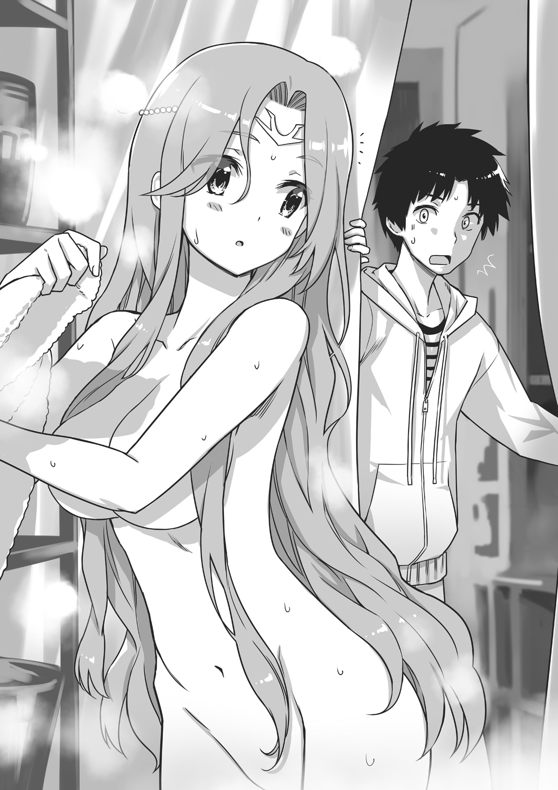
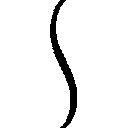

| 異世界君主生活 2 ～読書しているだけで国家繁栄～ | |
| 須崎正太郎 | |
この本は縦書きでレイアウトされています。
また、ご覧になる機種により、表示の差が認められることがあります。
 ダッシュエックス文庫DIGITAL
ダッシュエックス文庫DIGITAL
異世界君主生活２
～読書しているだけで国家繁栄～
須崎正太郎
第一話 とっても偉い法皇様
パーティー翌日
「我が君、我が君――」
少女の声が聞こえた。
......セリカ？
「起きてください、もう朝ですよ。我が君――」
起こしにきたのか？ でも、なんで......。
新堂直人は夢の中で、彼女の声を聞きながら怪訝に思った。
セリカが自分を起こしにくるなんて珍しい。よほどのことがない限り、朝はほとんど放置なのに――
「今日はエルトリアに帰るのですよ、我が君！」
（......あ、なるほど）
その言葉で直人は、ついに意識を覚醒させた。
頭を振りながら、ゆっくりと起き上がる。
豪奢な内装が、目に飛び込んできた。背中から感じる感触も、いつもの布団とは大違いだ。
ここはエルトリア神殿の、薄暗く湿っぽい書斎兼寝室ではない。ゾルダック王宮の客室だ。直人は昨日、エルトリア神聖国からゾルダック国に赴き、同盟を祝するパーティーに出席。その後、この客室に泊まったのであった。
「お目覚めですね。おはようございます、我が君」
セリカのにこにこ顔がまぶしい。直人は「おはよう」と言ってから、ひとつ大きなあくびをした。
「今日はいい天気ですよ。見てください、この青い空」
そう言って、彼女はカーテンを開ける。
セリカの言う通り、雲ひとつない晴天が窓の外に広がっていた。強烈な陽射しが、顔面に降り注いでくる。今日は暑くなりそうだ。この世界にはセミがいないので、いまいち実感がわかないのだが、季節はいま、夏真っ盛りなのである。
直人は、眠気覚ましにもう一度かぶりを振ってから、尋ねた。
「みんなはどうしてる？」
「もう朝ごはんを摂り終えて、王宮内を見物していますよ。......我が君、朝食はいかがなさいますか？」
「ん。......ああ、いや、まだ眠い。そうだ、シャワーを――お湯を浴びたい。浴びてから朝メシにするよ」
「かしこまりました。浴場の場所は――」
「昨日も入ったんだ。分かってるよ」
直人はそう答えてから部屋を出て、浴場へ向かった。
大理石が敷き詰められた廊下を、てくてくと歩く。
途中、何度か兵士やメイドと遭遇した。
彼ら、あるいは彼女らはいずれも、直人の姿を見た瞬間に立ち止まり、頭を下げ、あるいは敬礼した。
当然だ。直人はゾルダック国王、ディアスの友人であり、そしてゾルダックの同盟国、エルトリアの君主なのだから。
不思議な気分である。
日本からこの世界に召喚され、エルトリア神聖国の君主となって約三か月。
いろんな人に頭を下げられてきたが、やはりまだ慣れない。
日本にいたころの自分はただのニートで、読書が好きなだけの普通の人間だった。この世界に居ついたのも、『エルトリアにいれば衣食住の心配なく読書三昧の日々が送れる』という、極めて利己的な理由があったからに過ぎない。
それが、こんな立派なお城の中を歩いては、ぺこぺこされる身分になるなんて。
（いつかは慣れるのかね......）
心中で独りごちながら直人は、人々からあいさつをされるたびに「おはよう」とか「お疲れ」とか、適当な言葉を送るのであった。
やがて浴場が見えた。
浴場といっても、そこは『お湯浴び場』に近い。
湯が常時溜められていて、それを頭からひっかぶるだけの部屋なのだ。
それがこの世界の『入浴』であった。
そこが不満で、直人は自国に銭湯を作ったのだが。
（ゾルダックにはこれしかないんだよね）
できればお湯に浸かりたいが、贅沢は言えない。
そう思いながら、直人は浴場の扉を開き、脱衣場に入る――
と。――直人はぴたりと立ち止まった。
「......は？」
思わず、馬鹿みたいな声が出た。
なぜならそこに、うら若き女性がいたからだ。
それも全裸の。
「あらあら、まあまあ......」
女性はノンキな声をあげた。
「わたくし、入浴中だったのですが。......『使用中』の札、下げておりませんでしたか？」

なかった。
使用中なんて表示はなかった。断言できる！
......と、直人は叫ぶべきだったが、しかしあまりの展開に、度肝を抜かれて二の句が継げない。
彼女はとにかく美人であった。年齢は直人と同じ、二十歳くらいだろうか？ 成人した女性らしく、その裸体は色気を醸し出している。こんもりと盛り上がった丸く大きな膨らみに、それとはアンバランスな細い腰回り。だが太ももからふくらはぎにかけての脚線美はむっちりとした肉付きで、若々しい美をこの上なくたたえている。さらにいかにも風呂上がりらしく、桃色のロングヘアーからはぽたりぽたりと水滴が滴り、張りつめたまっさらな柔肌は、火照って赤みがかっていた。
「あ、の......俺は......別にのぞきとかではなくてっ！ そのっ！」
直人は慌てて弁解を始めたが、女性はゆったりと微笑んで、
「いいんですのよ。そんなに謝らなくても」
「え。な、なんで......」
「なぜって、これはきっと神の思し召しでしょうから」
「どういう神様がなんの思し召しで、こんな初対面を!?」
思わずツッコンでしまった。
これが神の采配ならば、どれだけスケベな神様だろう......。
と、そこで直人はふと気が付いた。神がどうとか言い出すあたり、彼女はなんだかセリカに似ている。
「あの、もしかして......あなたは、エルトリア神聖国のセリカ・ネウシャートと知り合いだったりしますか？」
思い切って、尋ねてみた。
すると、やはりというべきか。彼女は薄い笑みを浮かべて、
「セリカ。あの神官セリカですか？ ええ、もちろん存じていますとも」
「やっぱり......！」
「何度も会っておりますからね。......おや。するとあなたは――間違っていたら申し訳ありません。もしやエルトリア神聖国の君主、ナオト王ですか？」
「え？」
直人はぽかんと口を開ける。
どうして、俺のことを知っているんだ？
と、そう思った瞬間、
「我が君！ 大声が聞こえましたが、どうかされましたか」
セリカが、叫びながらやってきた。うわ、と思う。......なんかヤバい！
直人は冷や汗をかいた。裸の女性と二人きり。しかも相手は、セリカと知り合いらしいという。これはなにか、いかにも誤解されそうなシチュエーションだ――
だが、
「......法皇様!?」
やってきたセリカは、誤解などしなかった。
それよりも、女性を見て大きく目を見開き、その単語を言い放って――法皇様だって？
なに、それ......。
「お久しぶりですわね、セリカさん」
女性は上品な笑みを浮かべて、セリカの面持ちをじっと見つめた。
彼女の微笑は、神々しささえ帯びている。麗しき裸体を隠そうともせず、どこまでもゆったりと、直人とセリカ、ふたりに笑顔を向けてくる。
とりあえず、直人は思った。
どうやらこれは、風呂に入り損ねる流れだな、と。
法皇ユリーシャ
十五分後。
食堂である。
直人とセリカは「朝食にしましょう」と言った女性に連れられて、ここにやってきたのだが、そこへ、報告を受けたらしいディアスが登場した。
「ナオト。まさか君が、こんな形で法皇様と初対面を果たすとは思わなかったぞ」
やってきたディアスは、少し呆れ顔を見せながら、
「法皇様。このたびのことは、我が国の警備が至らなかったゆえでございます。なにとぞ、お許しくださいませ」
と、女性（もちろん服を着ている）に向かってぺこぺこ頭を下げまくった。
すごい。あのディアスが、世界最強クラスの大国、ゾルダック国の君主、ディアス・ゾルダックが頭を下げている......。
直人はそんな驚愕の光景を目の当たりにしながら、ぽかんと口を開けるのみだ。
女性は「もう、いいんですのよ」とにこにこ笑っている。
「湯浴みくらい一人でやりたいと言って、警備の兵を下げたのはわたくしです。そんなに謝らないでくださいまし」
「そう言っていただけると安心します」
「それよりも、ディアス王はもう朝食を終えたのですか？」
「はい。自分はすでに摂り終えました」
「そうですか。ならば、お腹をすかせているのはわたくしたち三人だけですわね。それではナオト王、セリカさん。共に朝食を摂りましょう」
「は、はい。恐縮ですっ」
セリカも、ぺこりと頭を下げた。
直人はなんとなく、それに倣って自分も礼をしたが――し終えたあと、隣のセリカにそっと耳打ちする。
「なあ、セリカ。あの人、けっきょく誰なんだ？」
「あの方は......法皇様です」
「その法皇ってのがよく分からない。宗教的な存在なのかな？」
「はい。つまり――このサベルガム大陸で一番信仰されているのが、ダイナラック大神教という宗教で、その名の通り、ダイナラック大神を信じているのです。そして、そのダイナラック大神の下に、小神と呼ばれる小さな神様がたくさんおります。小神様はいろんなところにいるのですが――」
「エルトリアにも？」
「もちろんです。エルトリア小神という神様です。わたしが信仰している神が、まさにその小神様なのです」
なるほど、と直人はうなずく。分かりかけてきた。
セリカは最初に会ったときから、エルトリアの神がどうとか言っていた。それがエルトリア小神というわけだ。
「そしてあのお方は、この大陸のすべての神を統べているダイナラック大神教の最高指導者。......すなわち法皇様です」
「......法皇様」
つぶやきながら、直人はそっと女性のほうに目をやる。
大陸でもっとも信仰されている宗教の指導者。
それは確かに、ディアスより偉いかもしれない。
じっと見つめていると、女性は直人の視線に気が付いたらしい。相好を崩しながら、
「そういえばナオト王。わたくしはまだ、あなたに自己紹介をしていませんでしたわね」
「え......」
「ユリーシャ・ダイナラックと申します。昨日のパーティーには、仕事があったので参加できず残念でした。しかしわたくしは、あなたのことをよく存じております」
「お、俺のことを？ どうして......」
「違う世界からやってきて、エルトリア神聖国を立て直した異界王ナオト。その名はダイナラック大神教の世界にも鳴り響いておりましたので。一度、お会いしたいと思っていたのです」
「は、はあ。いや、そんな、大したことはしていませんが」
「ご謙遜を。違う世界の知識や道具を用いて、大活躍されたと聞いていますよ。ねえ、ディアス王？」
「おっしゃる通り。我がゾルダックも、ナオトとエルトリア神聖国をおおいに見習って、もっと発展していかねばと考えていた次第で」
「――だ、そうですよ？ ナオト王」
「は、はは......」
直人はとりあえず笑った。ずいぶんと高評価をされたものだ。
あんまり持ち上げられると、いつかボロが出そうで怖いんだけど......。
ディアスはさらに、破顔して言った。
「我がゾルダックとエルトリア。同盟を正式に結んだからには、もっと交流を深めていかねばならないと考えています」
「争いがなく、仲が良いのは素晴らしいことですわ」
「はい。両国の民がより深い友好関係を結ぶために、なにか良い案がないものか、昨晩も考えていたところです。なかなかパッとは思いつきませんが」
「英邁で知られるディアス王でも、ですか？」
「自分などが英邁などと、おこがましい......」
ディアスは柔和に微笑む。ユリーシャも常に、ゆったりとした笑みを湛えていた。
この上なく、優雅な空気が漂っている......。
そのときだ。
「ナオトは、なにかないか？」
突如、ディアスが話をふってきた。
「え......な、なにが......!?」
「両国民が仲良くなるためのアイデアですよ、我が君」
突然の事態に仰天していると、セリカが横からフォローしてくれた。
「あ、ああ。それか。いや、俺は......なにかないかと言われても......」
「君なら、名案を出してくれそうだがなぁ」
「エルトリアを立て直したナオト王ですものね。そのお手並み、わたくしも拝見したいものですわ」
「え......あ......っと......」
直人は思わず、目を泳がせた。
どうもこのふたりは、自分を高評価しすぎている気がする！
「――まあもちろん、すぐに、とは言わない」
ディアスは笑みを崩さずに告げる。
「ただ、心の片隅に留めておいてくれないか。ふたつの国が今後もうまくやっていくために、どうするべきか。なにをやるべきか......。ゾルダック国は、エルトリア神聖国と永遠の友好を願っている。そのために、君の力も貸してほしい」
若き王者は、あくまでも慇懃であった。
「......努力はするよ」
直人は小さくつぶやく。いまはそれが精いっぱい。
とはいえその返答に、ディアスもユリーシャも、目を細めてうなずいてくれた。
「新しい課題です。頑張りましょうね、我が君」
かたわらのセリカが、明るい声音で言ったが――やれやれ、今度こそエルトリアに戻って、読書オンリーライフを送ろうと思っていたのに！
（また仕事ができたな......）
やがて朝食が運ばれてきた。
用意された食事は、さすがゾルダック王宮の料理人が作っただけあって、量も質も申し分のない素晴らしいものであった。食後に出てきた紅色のお茶も、味わったことのない香りと味であったものの、しかしやたらと美味であった。
直人は常に考えている。自分の理想は、こんなお茶を飲みながら、ただ本を読むだけの日々。
いつか必ず、そんな毎日を送ってみせる！
水遊びをしよう！
陽射しが、刺すようにまぶしい。
季節はいよいよ夏本番だった。
ゾルダック国から、エルトリア神聖国へと伸びる街道。
一台の大きな馬車が、ゆっくりと進んでいる。
幌馬車である。馬車の中には、エルトリア神聖国の面々が揃っていた。
手綱を持って、馬をあやつっているのはカイルであり、馬車の中にいるのは直人、セリカ、シャナンであり――
そして、
「ふたりは、エルトリアに来る時間なんてあるの？」
直人は腕を組みながら、眼前の女性たちを静かに見つめた。
彼女たちは、まったく対照的な容姿をしている。かたや、スタイル抜群のお姉様。かたや、十歳児にしか見えないお姫様。
そう、ユリーシャとクレインである。
「わたくしは、いまは時間がありますので。うわさのエルトリア神聖国を、一度見てみたいと思って同行しているのですわ」
「わらわも暇だぞ。やることなどなにもない」
「光栄です、法皇様。新しいエルトリアをぜひ楽しんでください」
セリカが、ぺこりと頭を下げた。
そう、ユリーシャはエルトリアに帰る一行についてきたのだ。
クレインは、ついてくるかもしれないと、直人も思っていた。しかしまさか、ユリーシャまで同行することになろうとは。
「エルトリアで、ユリーシャ様に万が一のことがあったら大変だぞ......」
「あたしもいるし、大丈夫だよ！」
馬をたくみに操りながら、カイルが快活に答えた。
するとシャナンも首肯して、
「私もいるぞ。法皇様がエルトリアに逗留されている間は、私がカイル殿が常に護衛することにしよう」
「ありがとうございます、カイルさん、シャナンさん」
ユリーシャは優雅に微笑んだ。
直人は、なおも腕組みしていたが、やがて腕をほどいて息を吐いた。
ま、エルトリアは治安もいいし大丈夫か......。
そしてこの街道も、まず心配はないだろう。道中に危険がないか、ゾルダックまで同行してきたエルトリア騎士団のメンバー十人を先行させている。例えば、山賊や猛獣が街道沿いに潜んでいた場合、すぐに直人まで連絡が来る手はずになっているのだ。
（山賊なんてそうそういないって、カイルも言ってたし、杞憂で終わるだろうけどな）
最悪の場合、セリカの魔法でユリーシャを日本に一時避難させればいいのだ。直人以外の人間が次元移動することを嫌うセリカだが、緊急のときならば、その手段を取ってくれるに違いない。
そこまで考えた直人は、気が楽になってきた。
旅行先でできた友達と一緒に、地元に帰る。そう思えばいいのだ。
（とにかく早くエルトリアに戻ろう。風呂に入りたい、本も読みたい。ディアスから頼まれた二か国友好のことも、ひとりでゆっくり考えたい......）
この馬車内では、考えなどまとまりそうにない。
なにせ、
「まあ、お湯を溜めて入る――エルトリアにはそんな文化があるのですか！」
「そうじゃ。セントウ、と言ってな。もともとはナオトのいた国の文化なのじゃが」
「肩とか腰とか、疲れたところがすごく癒されるんだよっ」
「湯気の立ち込める室内でポーズをとると、霧の中から現れた勇者様のようで良いのだ」
「果物の皮をお湯につけるんです。そしてそのお湯に浸かったら、お肌もすべすべになると、エルトリアの女性の間ではたいそう話題になっていまして」
（このガールズトークの雨霰......）
馬車内は驚異の女子率である。
直人以外、全員女。
この、なんとなく居づらい状況をなんとかできないものだろうか。
もともと読書中毒のコミュ障である直人には、しんどい場面である。
（トマを連れて帰ればよかった）
少年商人トマは、ゾルダックで一仕事をしてからエルトリアに戻ると言って、現在は別行動中なのだ。
彼がいれば、せめて、帰りの話し相手になってくれただろうに。
こんな、女子校の中に紛れ込んだ男子生徒みたいな気持ちにならなくて済んだのに！
（ま、いないものはどうしようもないんだけど）
直人はため息をつきながら思った。
本もないし（あっても馬車の中では酔うから読めないが）、せいぜい景色を楽しむくらいしかできそうもない――
「......お」
そのとき直人は、思わず声をあげた。
街道の脇に森林が見える。その奥には、泉があったのだ。
よく見ると、かなり大きな泉である。中央には小さな島まである。
ドーナツ状の泉だ。水も透き通っていて、見ているだけでも楽しい。
「あんなところに、泉があったのですね」
セリカが言うと、ユリーシャもうなずいた。
「きれいな泉ですわね」
「神秘的だ。物語だと、ああいうところにはたいてい、伝説の道具があったりする」
「シャナンはいつもそういう方向に話をもっていくのう」
「――ねえねえ、ナオト！」
「ん？」
一同が景色に心を奪われる中、カイルはただひとり、あっけらかんとした声音と爛漫な笑みを直人に向けた。「なんだい、カイル」と穏やかに返した直人であったが、
「あたし、泳ぎたいっ！ ばしゃばしゃ！ ざぶざぶ！」
あまり穏やかでもない口調で、彼女は提案してきた。
「......泳ぐ？」
「うん！ 暑いから！ 思い切りあそこで泳ぎたいよ、ナオト！」
「泳ぐ......み、水遊びってこと？」
無邪気かつ突拍子もない提案に、直人は思わず面食らった。
冗談じゃない。早くエルトリアに戻って本を読みたいのに、泳ぐなんて――
「カイル、それはちょっと――」
「ダーメっ！」
直人が断るまでもなく、セリカが大声を張り上げた。
「水遊びなんてダメに決まってるんだから！ カイちゃんはなにを考えているの！」
「セリちゃん、そんなに大きな声出さなくても......それに顔がやたら真っ赤で――」
「真っ赤にもなるわよ！」
セリカは火を噴きそうな顔で叫んだ。
「カイちゃん、分かってる!? 水遊びっていったら、普通、つまりその......全裸よっ!?」
「え！ 裸!?」
聞いていた直人は、ぽかん、と馬鹿みたいに口を開けた。
「......そういえばそうだね。あはは、うっかりしてた」
カイルが、ちょっと照れ笑いを浮かべる。
そうか、この世界には水着がないのだ。そんな状態で泳ぐのは、けっきょく、裸になって泳ぐしかないのだ。セリカが照れるのはもっともである。
だが、
「別にいいではないか。裸で入ればよい」
新たな火種が、そこに投入された。
発言者はクレインである。
「わらわも水浴びがしたいぞ。暑いからな。裸なのも別に構わぬ。この場にいる者は、法皇様を除けば全員、すでにみんなで全裸になって入浴した仲――」
「やめてくださいわたしたちだけなら裸になってもいいけれどいまは法皇様の前でありましてわたしは仮にも神に仕える身なのですからそれを天下の往来で全裸などもはや公開処刑ものでしておまけに法皇様の前でそういう過去を語るのは後生ですからほんとうにもういまでも思い出すたびに恥ずかしくてわたしは死にそうで」
「わ、分かった！ いやよく分からぬがわらわが悪かった！ だから落ち着けセリカ！」
涙目になって、マシンガンのように一気にセリフを放つセリカに、さすがのクレインもたじたじであった。
そこで、直人は「コホン」と咳払いをして――
「その......銭湯は俺たち以外誰もいなかったからいいけど、あの泉は外だ。しかも街道からすぐ近くだし、見知らぬ誰かが来るかもしれない。そういう状況で裸になるのは、どうかなって思うんだけど......」
「そ、その通りです、我が君。わたしの言いたいことはまさにそれなのです。決して自分が恥ずかしいとか、そういうことではなくて」
「むー......」
直人のセリフに、セリカとカイルがそれぞれ明暗分かれた反応を見せる。
カイルはやはり、泳ぎたいらしい。腕を組んでちょっと考える仕草を見せる。
かと思うと彼女は、直人の顔をちらりと上目遣いに見てきながら、
「ナオトはさっき、裸で泳ぐって聞いて驚いてたけど、日本ではどういうふうに泳ぐの？」
「日本では水着っていって――なんていうか、泳ぐための服？ みたいなのを着るんだ」
「おおー、それだよ！」
カイルは目を輝かせると、セリカのほうを振り返る。
「......ねっ？」
「なにが『ねっ』なのよ」
「もう！ セリちゃんったら分かってるくせに。ナオトに、日本から水着を持ってきてもらうんだよ！ そうすれば泳げる！ 裸じゃないから、人にもし見られても恥ずかしくないっ！」
「おお、それは名案じゃ」
「でしょ！」
カイルは瞳を輝かせて、クレインに視線を送る。
「セリちゃんも、それならいいでしょ!?」
「む。......んん、それは......まあ......。でも、法皇様もいるのに......」
真面目なセリカはそもそも、ユリーシャを交えて外で水遊びをするということに、抵抗感を感じているらしい。
「わたくしは――まあ、皆さんがしたいというのなら」
ユリーシャは、ちょっとだけ困り顔を作っていたが、すぐにそう言った。するとセリカは「そうですか」と言って、ちょっとだけ肩を落としたが、やがて、
「......法皇様まで泳ぎたいというのなら、確かに暑いですし、わたしが断る理由はもうないですね」
と、賛成まではしないが反対もしなくなった。
まずい、と直人は思う。さっさとエルトリアに帰りたいのに、この流れ......！
「し、シャナンはどうなんだ。早くエルトリアに帰りたくないか？」
直人は一縷の望みを込めて、騎士団長の瞳を見つめた。さながら一本の蜘蛛の糸にすがる地獄の悪党のように――
「よいではないか。こういう話もあるぞ。勇者様は旅の途中で泉に立ち寄り、身を清らかにしましたとさ」
だめだ、この子は。蜘蛛の糸は無慈悲にも切れてしまった。
やはり問題は、自力で解決するしかない。
「そ、そうだ、カイル。俺が日本から水着を持ってくるって話だったけど、水着を買うにはサイズが分からないとだめだよ。俺、みんなの身体のサイズとか知らないし――」
「教えるよ。だから買ってきてよ！」
大きなおっぱいをぶるんと揺らしながら、無邪気に答える巨乳娘。
万策は尽きた。
水着購入作戦
自分の人生に、こんな日が来るとは夢にも思わなかった。
日本の商店街をてくてく歩きながら、直人は考える。
女性用の水着を五人分。世界の次元を超えて買い付けにきた。
地球から異世界に行く人間は、物語の世界にごまんといる。また逆に、異世界から地球に戻った者もいるだろう。
だが、こんな理由でいったん異世界から帰還した者が、果たしてどれだけいるのだろう。
（俺が初めてなんじゃないか？）
もっともこれまでも、インスタントラーメンやら日本刀やら、妙なものを爆買いするために何度も次元を超えてきたのだが......。
あれもいまにして思えば、相当レアなケースだった気がする。
そんなことを考えながら、商店街の中にあるスポーツ用品店に入店する。
「いらっしゃいませ」
入った瞬間、女性店員がにこやかに出迎えてくれた。
けっこうな美人である。こんな人から、俺は女性用水着を大量に買おうとしているのか......。
「その。......人から頼まれてきたんですが」
頼まれてきたことを強調しながら、意思を伝える。
「女性用水着を五着。ください」
相手の目も見ずに告げた。
「はい、こちらになります」
美人店員は顔色も変えずに接客を続ける。さすがプロである......。
案内されたのは、スポーツチックな水着から、可愛らしい水着まで、一通り揃っている水着売場であった。
「頼まれてきた、とのことでしたが......サイズなどはお分かりになりますか？」
「はい。まあ......」
いよいよきた。直人は女性店員から目をそらしながら――女性陣のことを回想しつつ、サイズを伝えたものである。
『わ、わたしからですか!? え、ええとですね。セリカ・ネウシャートです、十七歳です。エルトリア神聖国で神官を務めておりまして――え、自己紹介じゃない。そ、そうでしたね。ええと、身長は百五十七センチで、体重は......体重はいいでしょう!? それで......す、スリーサイズは......上から82・59・86......な、なんですか、その目はっ......そんな目で見ないでください！ ......もう......恥ずかしい......』
（スリーサイズって概念が、異世界にあるとは思わなかったよ）
たぶん、魔法でうまく翻訳されているんだろうけど。
それにしても真っ赤になったセリカの顔。ほとんどトマトであった。......正直言って相当可愛かった。あとスリーサイズを聞いた瞬間、思わずセリカの身体を眺めてしまった。
申し訳ないけど、でも良かった。
店員は、セリカの年齢やサイズを聞いたあと、ピンク色の可愛い水着を用意してくれた。
セリカに似合いそうな水着だった。改めて思う。さすがプロである。
『じゃ次、あたしが言うねー。カイル・ボアジェール、十七歳だよ。世界のあっちこっちを冒険して、お宝を見つけたり遺跡の地図を作ったりして楽しいお仕事――ごめん、自己紹介じゃなかったね。セリちゃんの真似しなきゃって思って。......えっと、身長はね、百五十三センチ。体重は（ピー）キロ！ スリーサイズは上から89・61・92だよ。水着、よろしくね！』
体重のところはなぜか聞こえなかった。
魔法で翻訳不可能だったのか。世界の不思議のひとつとして納得することにした。
あっけらかんと回答したカイルであったが、それにしても見事なプロポーションだと思う。一緒に銭湯に入ったときのことを思い出す。あれはもう、すごかった。いやもうほんとに、すごかった......。
「お客様、どうかなさいましたか？ お顔が真っ赤ですが......」
店員が、眉根を寄せて尋ねてくる。直人は「なんでもないです！」と回答すると、カイルのプロフィールを教えて水着を用意してもらった。
店員は、直人の赤面などなかったかのように接客を続けてくれた。さすがプロである。
『次は私だな。......心配するな、自己紹介はしない。簡潔に伝えるぞ、身長は百五十五センチ、体重（ピー）キロ、スリーサイズは上から78・56・80だ。ところで国王、水着というのはどういう服なのだ。......ん、いやなに。勇者様が国王と同じ世界の人間だったと分かったからな。可能なら、勇者様と同じような服を着たいと思っているのだ。勇者様の服を着て泉に入る私......想像しただけで心が弾むではないか。フフフッ......』
（勇者様と同じような服......？）
直人は腕を組み考えた。
シャナンの尊敬する『勇者様』が、実は四百年前の日本からやってきた侍だったことが、ゾルダック国との会談の最中に分かった。だからシャナンは直人に、そんな依頼をしてきたのだろう。
侍が水泳のときに着ていた水着。
戦国時代に、水着なんてあるわけない。
あるとしたら、
「ふんどし......？」
「お客様、ふんどしがどうかなさいましたか？」
店員は、さらりとその単語について尋ねてくる。顔色ひとつ変えずに。もしかしてこの人はすごいんじゃないかと思いながら、直人は前言について完全スルーを決め込み、シャナンのプロフィールを彼女に教えた。
店員は、もちろんふんどしではない、ちゃんとした水着を用意してくれた。
さすがプロである。
『次はわらわじゃな。身長は百四十センチ、体重（ピー）キロ。スリーサイズは、69・52・70――言っておくが、わらわはまだ十四歳じゃぞ！ 未来があるのだからな!? ゾルダック家は長身の家系じゃ。兄上を見れば分かるじゃろう！ わらわは身長も胸も、もっとこう、どどーん！ と大きくなるのじゃからなっ！』
「子供向け水着ってあります？ 小学校の中学年くらいの女子用がいいんですが」
直人はさらりと言った。
十四歳、日本でいえば中学二年生になるはずのクレインの肢体は、どこからどう見てもまだ十歳児程度にしか見えないのだ。
もちろんクレインの言う通り、その肉体にはまだまだ未来があるのだが......。
「申し訳ありません、お客様。一般用の水着がただいま品切れとなっておりまして」
「あ、そうなんですか？」
「はい。スクール水着でしたら、ただちにご用意できるのですが」
そう言って、店員が案内したのは確かに紺色のスク水売場。
しかも女児用のところは、ちょっと古い、中央部分に名前を書くタイプの水着がずらり。
なんでこんな水着がいまどきあるんだろうと内心ツッコみながら、直人はその中から、クレインに合いそうなスク水を選んだ。
「サービスで、名前も書いておきましょう。この水着を着る子の名前はなんですか？」
「え？ クレインっていいますけど」
「まあ、外国の方なのですね。では分かりやすいようにひらがなで書いておきましょうか」
（分かりやすい......？）
ひらがなよりはカタカナのほうが分かりやすい気もするが、と思いながら、直人はクレインのために買ったスク水、そのネーム欄に『くれいん』と油性マジックで書かれる光景をじっと見ていた。......なんかいろいろヤバげな感じになっているが、いまさらやめろとは言えない。
ともあれクレインのためのスク水は、ある意味完全体として入手することができた。店員はぬかりがなかった。さすがプロである。
『こういうことは初めてですが......なんだか、ちょっとドキドキしますわね。わたくしは――年齢もお伝えしたほうがよろしいでしょうか？ ユリーシャ・ダイナラック、二十歳ですわ。身長は百六十センチ、体重は（ピー）キロで、スリーサイズは上から、92・61・90、と......これでよろしいのでしょうか。ああ......自分の胸のサイズを堂々と語るなど。こんな経験をする日が来ようとは！ でも、それがエルトリアの風習ならば従いましょう』
――そんな風習はありませんっ！
セリカはただちに、ユリーシャの発言を否定した。
それにしても、ユリーシャのバストサイズはお見事という他はない。さすがは法皇である。ラスボスか。
「しかしカイルのほうがまだ若い分、将来性があるような気もする......」
「お客様、どうかなさいましたか？」
女性店員が営業スマイルで話しかけてくる。直人の独言など聞こえていないと言わんばかりの態度だが――本当はすべて聞いているんじゃないか？
ともあれ直人は、ユリーシャの年齢やスタイルを教えて、店員のおすすめを尋ねた。
そして十五分後、直人は五人プラス自分用の水着を購入し、お店をあとにしたのであった。
「ありがとうございました、またお越しくださいませー」
店員は、お店の出入り口まで見送ってくれた。彼女は最後まで笑みを絶やさず、直人の要求に、すべてきっちりと応じてくれたのだ。
さすがプロである。
水着鑑賞タイム
そんなこんなで、水着を購入した直人はアパートに戻った。
それから光の輪をくぐり、異世界側に帰還する。
「ただいま。水着、買ってきたよ」
「おかえりなさいませ、我が君」
セリカが真っ先に笑顔を向けてくれた。カイルやシャナンも「おかえりー」「思った以上に早かったな」などなど、それぞれの反応を示してくれる。
「むう。......実際に目の前で見るとすごいもんじゃのう」
「まったくです。この光の輪の先に、次元の違う世界があるのですね」
クレインとユリーシャは、それぞれ目を丸くして光の輪を見つめる。そういえば、ユリーシャはもちろんクレインも、俺の次元移動を見るのは初めてなんだっけ。
「一度、この目で見てみたいものじゃのう。ナオトの国を......」
クレインはぶつぶつ言っていたが、セリカはすぐに人差し指を回転させて、魔法の輪を消してしまった。
「ああっ！ セリカ、おぬしは冷たいのう」
「申し訳ありません。しかし、この輪は我が君しか使ってはいけませんので」
「誰も彼も次元移動していては、混乱のもとになりますからね」
ユリーシャが、セリカの判断に理解を示す。
クレインはまだちょっとふくれっ面だったが、それ以上はなにも言わなかった。
「はい、これ。ご所望の水着だよ」
直人はそう言って、ビニール袋を掲げた。
「変わった袋ですわね」
「これはビニール袋というのですよ、法皇様。ビニールとは我が君の世界の物質です」
セリカがちょっと得意そうに言いながら、ビニール袋を受け取る。
それから着替え。
直人は森の中の木陰に向かい、セリカたちは幌馬車の中で着替えることになった。
「なぜ別れるのじゃ？ ナオトも一緒に着替えればいいのに」
無邪気に告げたクレインに向かって、セリカが「そういうわけには参りません！」と怒号をあげたのは、言うまでもない。
十分後。
幌馬車から出てきたセリカたちに向かって、みずからも海パン姿になった直人は「おー」と手を挙げた。
「ナオトー！」
と叫んで、真っ先に手を挙げたのはクレインだった。
ファンタジー世界丸出しの銀髪に、スクール水着というアンバランスさが妙に映える。ネーム欄のひらがなもいろんな意味ですごい。
「へえ、ナオトは上半身むき出しなんだねー」
と、明朗な声で直人の水着姿に興味を示したのはカイルだった。
派手な柄のビキニ姿。相変わらず、凄まじいプロポーションを誇っている。
さらに、そこにシャナンとユリーシャもビキニ姿でご登場。前者は赤、後者は白を基調としている。前者は細身ながら肉付きのいい肢体を、後者はもはや犯罪レベルの豊満な身体を、惜しげもなくさらしている。目のやり場に困る。
で、セリカ。
ピンク色の可愛いビキニ姿は、スレンダーな彼女の体型によく似合っていたのだが、
「......我が君。日本の女性は、こんなかっこうを衆目にさらすのですか？」
いつものごとく、顔を赤らめている。
「なにかまずいかな？」
「まずいなんてものじゃありません！ これは、これは......ほとんど下着ではないですか！」
セリカは唾を飛ばして絶叫する。
日本の水着は下着みたいだと言われると、確かにそうなのだが。
「裸に比べればずっとマシだと思うけどなー。動きやすいし、涼しいし、あたしはなんとも思わないよ？」
「そりゃカイちゃんは、常日頃からけしからん感じの服装だからいいだろうけど」
さらりと毒っぽいセリフを吐くセリカ。
いつもけしからんと思っていたのか。
「恥ずかしい気持ちは分かりますけど......文化が違えば服装が違うのも当然ですわ」
「そうだ。ものは考えようだぞ、神官殿。魔物と戦う勇者様の気分になればいいのだ。魔物は服だけを溶かす液体を吐き出す。だが勇者様は半裸の下着姿になっても戦って――」
「嫌よ、そんな変態チックな魔物は！ 露出狂な勇者は!!」
「どうでもいいから、はよう泳ごうぞ。わらわはもう暑うてたまらぬ！」
クレインの強引な叫びは、しかしその通りであった。
時間はいよいよ正午になろうとしている。
太陽が中天に輝いている。空は雲一つない晴天だった。
ユリーシャ様は遊びたい
「ヒャッホーーーーーーーー！」
ばっしゃばっしゃと音を立てて、泉の中で暴れ回っているのはカイルである。
泉の水が跳ね上がり、水しぶきは陽光をたっぷりと浴びてきらきらと輝く。
さらにシャナンやクレインも、カイルに続いて泉の中を駆け回り、泳ぎまくっている。
平和そのものの光景が、そこにはあった。
「大きくて美しい泉ですね」
腰まで水に浸かっているセリカが言った。なんとか、日本の水着に慣れてきたらしい。
直人はセリカの言葉に応じた。
「百人は入れるんじゃないか？ 深さも一メートルちょっと。理想的な泳ぎ場だね」
水はこの上なく透き通っていた。自分の身体だけでなく、セリカの下半身までくっきり見えるほどだ。
この世界は、本当に水が豊富で美しい。
（エルトリアの近くだけかもしれないけど）
そんなことを考えながら、スイスイと泳ぐ直人。
透き通った泉の水は、冷たくて心地よかった。
だがそこで、ふと気が付く。
ユリーシャがいないのだ。
「ユリーシャ様？」
きょろきょろと、周りを見回す。いない。どこだ。いない......。
いた。
見るとユリーシャは、泉に足をつけるだけで、中に入ろうとしていない。
「ユリーシャ様、泳がないんですか？」
近付いていって尋ねる。すると彼女は、困ったような笑みを浮かべて、
「はい、まあ......」
と、生返事を返してきた。
「気持ちいいですよ。一緒に泳ぎましょう」
直人は笑みを向ける。
入るまでは嫌だ嫌だと思っていた直人だったが、もうここまできたら泳いだほうがいい。それに実際に水に入ってみると、想像よりもずっと心地よかったのだ。これを泳がないのはちょっともったいない。
だが、ユリーシャは困り笑顔で言った。
「泳ぎたいのは、やまやまなのですが」
「？」
「わたくし、じつは泳ぎが苦手ですの」
「え」
直人は思わず絶句した。
しかし思い返すと確かにユリーシャは、泉で泳ぐという話になったとき、戸惑ったような顔をしていた。......しくじった。
「すみません。泳ぐのが苦手なのに、こんなところに誘ってしまって......」
「いいえ、お気になさらず。皆さんが楽しそうにしているだけで、わたくしは幸せなのです」
いかにも宗教の指導者らしいセリフである。その言葉で直人はちょっとだけ気が楽になった。
しかしそれでも、ユリーシャひとりが蚊帳の外というのは気の毒だ。直人にも思い出がある。小学校低学年のころ、まったく泳げなかった直人は水泳の授業が嫌いだった。さらに夏休みになると、海やプールに連れていってもらったのだが、それもほとんど楽しめなかった。泳ぎまくる家族を遠くから見つめつつ、直人はひとりで砂遊びをしたり、プールサイドにたたずんでいたりしたものだ。
（あれは辛いんだよな）
ユリーシャをなんとかしてやりたい。直人は強く思った。泳げずにぼっち。他人事とは思えなかったのだ。
「ユリーシャ様」
彼女の大きな双眸を、まっすぐに見据えてから問うた。
「水遊び。できるものなら、やりたいですか？」
「え？ それは――」
ユリーシャはちょっとだけ顔を伏せたあと、すぐに笑みを浮かべて、
「皆さんを見ていると楽しそうですし、やってみたいなあ、とは思っていますわ」
「分かりました」
直人はそれで腹を決めた。なんとかしてみよう！
（しかし、どうしたもんかね）
直人は考えながら、あたりを見回す。
中央に島がある、ドーナツ型の泉。――そういえばこの形は、なんだか見覚えがある。どこかで見たような気がする。異世界の泉なんて、来たことがあるはずもないのに。
「いや、待てよ。......そうか、あれだ！」
ぽつりと独りごちる。ユリーシャが、はてな、という顔をした。
「あれ、とはなんですの？ ナオト王」
「思い出したんですよ。この泉、どこかで見覚えがあって......」
「ナオト王は、ここに来た経験がありましたの？」
「いえ、違います。そうじゃない......。この泉は、日本に存在するあるものと、よく形が似ていたんです」
「あるもの......？」
怪訝顔のユリーシャ。
直人はニヤリと笑って、その名称を告げた。
「流れるプールです」
そう言った瞬間、彼女はきょとんとした表情を見せた。
「ナガレル、プール？」
「はい」
直人はうなずいた。
流れるプール。それは人工的に水流を作り出したプールのことだ。
水に沈んでいるだけで、勝手に身体が流されていく仕組みになっている。
それは小学生当時、泳げなかった直人が唯一、楽しく泳げたプールだった。水流に身を委ねるだけで、泳いだ気分になれたのだ。
（この泉は、そのときの流れるプールに形がよく似ているんだ）
あのときのプールも確かに環状だった。輪の形が、水流を作りだすのに向いているのだろう。
流れるプールの仕組みとは、簡単に言えばこうだ。プールの中に吸い込み口を作る。そこからポンプで水を吸い込む。そしてプールの中の別の場所に作った吐き出し口から、再度、水を放出する。そうすることによって、プールの中に流れができる。
流れさえ作ってしまえば、プールの形は輪っかなのだから、あとはぐるぐると水が回るだけだ。
そこで直人は思った。この泉を流れるプールにしたら、ユリーシャは楽しんでくれるのではないか。
「よし、やってみよう。......セリカ！ おーい、セリカ！」
直人は泳いでいるセリカを、声と手招きで呼び寄せる。
セリカは、スイスイと泳いでやってきた。
「はい、なんでしょう、我が君」
「実はね――」
かくかくしかじか、と直人は事情を打ち明ける。
その上で、セリカに相談した。
「日本と行き来できる光の穴。あれ、ふたつ作れるかな？」
「はい、それは可能ですが......なぜふたつも？」
「流れるプールをいますぐ作るためだよ。光の穴をふたつ作れば、この湖の水を循環させられるはずだ」
直人の案はこうだった。
泉の中に光の輪っかを作って、水を輪の中に流し込み、日本側に吐き出させる。
そして日本側の輪っかのすぐ隣に、やはり光の輪を作って、今度は異世界の泉の中にその水を流し込む。
すると、水の循環装置が完成する。
泉はちょうどドーナツ型になっているので、この仕組みを使えば流れるプールになるはずなのだ。
「どうだろう、できるかな？」
「次元移動の魔法は、そういう使い方を想定しておりませんので、なんとも......」
セリカはちょっと戸惑い顔だったが、しかしすぐに顔を引き締め、
「とにかくやってみましょう。だめだったときは――」
「俺のアパートが水びたしになるかもね」
直人は笑ってから、
「そのときはすぐに穴を閉じてくれ。その上で、また次の策を講じるまでさ」
「あの、ナオト王。いいんですのよ、そんな無理をしなくても」
ユリーシャが、穏やかに告げてくる。
「わたくし、ナガレルプールというのが、まだどういうものかよく分からないのですが......魔法で泉の水を循環させるなど、聞いたこともありません。とても可能とは思えませんわ。だから――」
「法皇様。お気遣いありがとうございます。しかし大丈夫です」
セリカはまなじりを下げて、しかし淀みのない声音で言った。
「我が君の案は成功します。法皇様も水遊びを楽しめるようになりますとも」
「セリカさん。......はっきりと言いますのね」
「わたしは我が君に全幅の信頼を寄せていますので」
断言するセリカ。
翡翠色の瞳は、信憑に満ちていた。
「我が君の着想が間違っていたことは、これまでに一度もありません」
そして彼女は人差し指をすっと立てると、その場で、すっ、すっ。
二度、回転させた。
流れるプール誕生
ど、ど、ど、ど、ど――
泉の中の水が、光の輪に吸い込まれていく。
そして、その輪のすぐ隣に作られたもうひとつの輪から、これまた、ど、ど、ど、ど、ど――吸い込まれた水が放出されているのだ。
その結果、泉の中の水は勢いよく、ぐるぐると循環し続けている。
それはまさに流れるプールだった。
「あ、ああっ......す、すごい！ あははっ、なに、これ。素晴らしいですわーっ！」
水の勢いに流されながら、ユリーシャが歓喜の声をあげている。
「き、気持ちいいし、楽しいっ。ナオト王！ こ、これは......ナガレルプールは、なんと面白いのでしょうか！」
「わー、泳がなくても流れる流れる流されていく」
「こんなもの、よく作ったのう！ あははっ、愉快じゃぞ、ナオト！」
カイルもクレインも、流れるプールの水流に漂って遊んでいる。ときには沈み、ときには浮かび――
その平和的な景色を、直人とセリカは目を細めつつ眺めていた。
「ありがとう、セリカ。手伝ってくれて」
「いえ。法皇様が喜んでくれて、良かったです。みんなも楽しそうですし――あれ、そういえばシャナンはどこへ......」
「あそこにいるよ」
直人はひょいと指さした。
「こんな水流ごときに......私が負けると......思っているのか......！ これも修行......修行なのだ......！ ぐぎぎっ......！」
ひとりだけ水流に従わず、流れに逆らって泳いでいる。それは俺も昔やったぞ、と直人はひそかに心の中でうなずいていた。水の中の修行ごっこ。地味に楽しい。
「......みんな喜んでくれてなによりです！」
「強引にまとめたね、セリカ」
直人は口角を上げたが、しかし、心から良かったと思った。流れるプール作戦。どうやらうまくいったようだ。流れるプールは、一度流されたら下までとことん流されていく河川と違い、循環式なので、いつまでも楽しめるのがいい。
「ところで我が君。ナガレルプール。これも日本の文化のひとつなのですか？」
「うーん、日本文化としてカウントされることは、あまりないね。でも」
「でも？」
「日本との関連はあるんだ。なぜなら流れるプールって、日本が発祥なんだよ」
一九六五（昭和四十）年、日本の東京都練馬区にある遊園地「としまえん」が、世界で初めて流れるプールを作った。
それはおおいに受け、あっという間に広まった。その結果、世界中、さまざまなプール施設に流れるプールが作られ、多くの人々を楽しませることになったのだ
なお、としまえんの元祖流れるプールもまだまだ健在だ。誕生からすでに半世紀が経過した現在でも、遊園地の利用客に利用され、親しまれている。
（子供のころは、ただ楽しかっただけだったけど）
流れる水に身を委ねながら、思う。
（まさかあのころの経験が、異世界で生きてくるなんてね）
流れるプールではしゃぎ回る仲間たちを見つめる。
その中でも、ユリーシャ。
「あははっ！ すごいすごい！ 泳いでるみたい！ 楽しいですわーっ！」
（ユリーシャ様、よかったな）
彼女とは知り合って間もないが、その笑顔は初めて年齢相応。自分と同世代の人間のように見えた。
法皇という地位を離れて、ひとりの人間として、この流れるプールを楽しんでもらえている。
そのように思えた。――直人は最高の気分だった。
「あー、泳いだ泳いだ！ 遊んだ遊んだー！」
馬車をたくみに操りながら、カイルは高らかに声をあげる。
時刻は午後三時半。太陽が、じわりじわりと西に向かって傾いていく頃合いである。
泉から出た直人たちは、服を着替え、馬車に乗り、改めて、エルトリア神聖国への帰路についているのだ。
「セリカさん、もう一枚、余分なタオルはありませんの？」
「あ、あります。たくさん持ってきていましたから。はい、どうぞ」
「髪が長いとこういうときに大変だな。法皇様も神官殿も、私のように短くしたらどうだ」
「うーむ、わらわも気分転換に髪型を変えてみようかのう」
ガールズトークが、また弾む。
しかし泉に入る前よりも、ユリーシャはさらに、セリカたちに馴染んだように直人には見えた。一緒に遊んだからだろうか。だとしたら、水遊びをして本当に良かった。
（......そうだ！）
直人はふと、思いついた。
「ねえ、クレイン。ディアスから、相談を受けていたんだけどさ」
「兄上から？」
「うん。エルトリアとゾルダック、両国民が仲良くなるようなアイデアはないかって」
「ほう......。それで、なにか思いついたのかのう？」
「ああ！ あのさ、さっきの泉はエルトリアとゾルダックのちょうど国境にあるだろ。だったら、あの泉を中心に保養施設みたいなのを作って、両国民共用のリゾート地にしたらどうだろう？」
「ほう！」
クレインが、瞳を大きく見開く。
直人はさらに続けた。
「いまの俺たちみたいに、同じ場所で遊んでいれば、みんな自然と仲良くなれるんじゃないかって、そう思うんだ。特に子供たちなんかさ！」
「............」
「もちろん保養地だけを作って、それでおしまいってわけじゃなくて、これからもいろいろ考えていくけど、まずはアイデアの第一弾。どうかな、この提案は？」
「面白いではないか！」
白い歯を見せる、クレイン。
すると、カイルも馬を操りながら口を開く。
「いいと思うよ。前から言われていたんだよね。エルトリアとゾルダックの中間に、旅人が休めるような場所があったらいいなって。そういう場所を作れば、みんなで使って仲良くなれるし、息抜きの場所になるし、旅人も喜ぶ。あたし、賛成！」
「よし、それなら決まりだ！ ディアスに話しておかないと」
「それならば、わらわから話しておこう！ ナオトが素晴らしい案を出してくれたと言っておくぞ。それでいいかのう？」
「いい、それでいい！ 頼むよ、クレイン！」
拝む仕草を見せると、クレインは満面の笑みを浮かべて、嬉しそうに「任せろ、ナオト」と胸を張った。
――そんな一連の流れを見て、ユリーシャはぽつりと言った。
「ナオト王。......本当に変わった......しかし、見事な君主ぶりですね」
そのセリフはあまりに小さな一言だったので、聞こえたのは、すぐ隣にいたセリカだけだった。
セリカは眼を細めて、直人の横顔を見つめつつ、唇を開いたものである。
「エルトリア自慢の我が君ですから」
第二話 カイル・ボアジェールの冒険
念願の読書ライフを手に入れたぞ！
クレインは約束通り、ディアスに直人の案を報告してくれたらしい。
というのも、泉で遊んだ日からちょうど三日後、ディアスから「承知した。案をエルトリアが担当したので、施設の工事はゾルダックに任せてほしい」との手紙が届いたからだ。
かくして、ディアスから依頼されていた両国民友好についての案は、ひとまず前に進み始めた。
エルトリア神聖国も、国家としての軌道にすっかり乗り始めた。
現在、エルトリアの人口は千五百人。平均月収は六百エール。
ゾルダックの人口十万人、平均月収金貨百五十枚（一万五千エール）と比べれば、その経済力は微々たるものだ。
もっとも、直人は別にエルトリアを大国にするつもりはない。国としてそこそこ順調に運営ができていれば、それでいいわけだ。
治安は騎士団によって守られ、経済は順調に回転し、国民は日々を平穏無事に送っている。
それで充分ではないか。毎日、日記に『今日もなにもありませんでした』と記す日々こそ、直人にとっては理想なのである（別に日記をつけてはいないが）。
そういうわけで、いまの直人には仕事がついに、なにもなくなった。
と、いうわけで――
「読む！ 本を！ 書斎で！ ひとりで！」
直人は、セリカに向かってそれらを激しく宣言すると、本当に書斎に引きこもって、積ん読状態になっていた本を片っ端から読み始めたのである。
読む。
読む。
読みまくる。
エルトリアの本もあれば、日本の本もある。
『政治腐蝕を考える』『お兄ちゃんの童貞はあたしが奪うの！』『カザフスタンに雨が降る』『高校生社長・成功までの百日間 ～二十一世紀は俺に任せろ！～』『秀吉と官兵衛』『北九州Ｂ級観光マップ』『ぐうたら君主殺人事件』『立ち上がれ、引きこもり』
などなど。
統一感がまるでない。乱読家にもほどがある。
ともあれ直人は、そんな読書三昧の日々を送っていた。
念願の読書ライフを失ったぞ！
三昧の日々は十日で終わった。
書斎で読書をしていると、セリカが突如やってきて告げたのだ。
「神殿の改修をしたいのです」
「改修？」
「はい」
語り始める、セリカ。
このエルトリア神殿はあまりに古びている。調べてみると、少なくとも二十年近く、まともに改修作業を行っていないことが分かった。
このままだと、例えば外壁が崩れたりして国民に被害が及ぶかもしれない。あるいは直人の生活にも支障が出るかもしれない。事実、倉庫の一部は雨漏りまでしている......。
「我が君の書斎も、いつか雨漏りしてしまうかもしれません」
「そりゃ困る。本が濡れる」
言いながら、あたりを見回した。
書斎の中は本でいっぱいだ。どこから水が漏れてきても、いずれかの本が犠牲になる。
「だから改修をしたいのです。いまならお金に余裕もありますから」
「いま、エルトリアの国庫にお金っていくらあるの？」
「紙幣ならばおおよそ二百万エール、硬貨ならば金貨換算で一万二千といったところです」
「ずいぶん増えたもんだね......」
「税収が順調ですので。紙幣も滞りなく流通しておりますし」
「オッケー、なら改修しよう。この神殿、はっきり言って見た目もガタがきているしね」
「そうですね。ゾルダックと同盟を結んだ以上、少しは見栄えも整えたいですし」
「もっともだ。ゾルダックの同盟国があんまりボロボロじゃ、ディアスにも悪いからな」
直人は笑いながら言った。
「で、改修は誰にやってもらうの？ 親方？」
「はい。実はすでに、親方さんに話は通しているのです。神殿の見取り図も見せましたし」
そう言ってセリカが取り出した神殿の見取り図は異様に古く、茶色に染まり抜いていた。
しかもなにやら、ツギハギだらけである。
「これまた、すごいボロボロだなぁ......」
「三十年以上前の見取り図ですので。いちおうわたしが、ノリで補修しておきましたが」
そう言いながら、セリカがおもむろに取り出した手の平サイズの小さな箱を、直人は「ふーん」と興味深げに受け取った。
フタを開けて中を見ると、白くてトロッとしている。
異世界といってもノリはさすがに、地球のものとあまり変わらない。
「改修作業が終わったら、この見取り図も新しく作り直したいのですが」
「いいんじゃない？ それはいくらなんでも古すぎるし」
「許可していただけますか。ありがとうございます」
「セリカのやることに間違いはないからね。万事、よろしく頼むよ」
言いながら直人は、伏せてあった本を手に取り、再びベッドの上に寝転んだ。寝ながら本を読もうというのだ。
が。
「あの、我が君」
「......ん？ まだなにかあるの？」
「はい。改修作業を行うために、神殿の隅々を、親方さんと一緒に見て回りたいのですが」
「うん、見ればいい」
「親方さんは、我が君の書斎も拝見させてほしいとのことです」
「へえ」
「我が君には非常に申し訳ないのですが、親方さんは非常に立て込んでいて、できればいまから、書斎を見たい、と」
「見ればいいじゃん」
「はい。ですがその、いまこの部屋は少し、趣のありすぎる状態になっていて」
「散らかってるって、はっきり言ってよ」
「......。ですので、まずわたしが部屋を掃除して、それから親方さんに見ていただこうかと」
「掃除なら、俺も一緒にやろうか」
「いえ、我が君に掃除をしていただくわけには参りません。......掃除の途中で『この本、ここにあったんだ！』とか言ってまた読書をされだしても困るし......」
「............」
聞こえてるよ、セリカ。......その言葉が喉まで出かかった。
ともあれ、直人は理解した。要するに、俺がここにいると邪魔なわけね。
もっとも、ろくに掃除もせずに部屋でゴロゴロしながら本ばかり読んでいるのは確かなので、あまり偉そうなことは言えない。
「分かった。じゃ俺、街を散歩してくるよ」
「していただけますか！」
「するする。じゃ、親方とふたりで改修の話し合いしておいてね」
「はい、分かりました。こちらの仕事はお任せください」
「ん。よろしく」
直人は手を振りながら、部屋を出ようとして考える。
これからなにをしよう。とりあえず銭湯にでも行くか。
で、風呂に入ってさっぱりしたところで遊びにいく、と。
（......遊ぶっていってもな）
なにをする？ 誰とする？
ヒマなやつはいるだろうか。
（セリカと親方はこれから改修の仕事。シャナンは騎士団の仕事があるし、トマは商売でエルトリアにいないし、クレインはゾルダックに帰国しているし）
と、なると。
「あ！ ナオトだナオトだー！」
彼女しかいなかった。
カイルはいつも通り、爛漫な笑みを向けてくれる。直人はそんな彼女に、自身も笑顔を返そうとして――
しかしその前に、言わずにはいられなかった。
「カイル、なにやってんの？」
「木のぼり！」
言葉通り、彼女は大木にのぼっていた。
太い木の枝にまたがったまま、地上の直人と会話を続ける。

「やることないからさ！ よいしょよいしょって、のぼって遊んでたの！」
「ああ、そう......」
思い通り、カイルは実にヒマそうであった。
彼女は枝の上で、上手に身を翻すと、スルスルと下界におりてきた。それから、パンパン、と服に付いたホコリや汚れを払いながら、
「ナオト、なにか用？ あ！ もしかして、あたしと遊んでくれるの？」
「うん、まあね。神殿を追い出されちゃってさ。カイルなら時間あるかなと思って」
「わー、ありがとうっ！ えへへ、嬉しい！ 嬉しい嬉しい！ なにして遊ぼっか。決闘ごっこでもするっ!?」
「い、いや、決闘はやめとこう。俺じゃ勝ち目、全然ないし」
「そう？ じゃあ近くの崖にロッククライミングでも――」
もうちょっとマイルドな遊びはないのか......!?
と、ツッコみかけた、そのときである。
「楽しそうだな、国王、カイル殿」
「本当に。仲がよろしくてうらやましいですわ」
シャナンとユリーシャがやってきた。
しかし、いるのは彼女たちだけではなかった。その後ろには、十数人のエルトリア国民がついてきていたのだ。
国民たちは、ユリーシャを拝みまくりである。「ありがたや、ありがたや」「法皇様、我らに祝福の笑みを」「まさか生きている間に法皇様にお目にかかれるなど」「生きててよかった」「あ、王様だ。こんにちは」――などなど。
ダイナラック大神教や、エルトリア小神教の信者たちだろう。特に信心深い者たちが、ユリーシャについてきているようだった。
「ユリーシャ様って、本当に偉いんですね......」
改めて思う。国王の直人が、ほとんどオマケ扱いである（もっともこれは、直人が常日ごろから市街を気軽にうろつく君主なので、国民も親しみをもって気さくに対応しているのだが）。
「おかげさまで、エルトリアでも歓迎されておりますわ」
「国民も喜んでいますよ。エルトリア国王としてお礼を言います」
直人は心からそう言った。
するとユリーシャは、にこにこ笑いながらも「ところで皆さん、ちょっと」と声を潜めて、直人、カイル、シャナンの三人をその場に集めた。
そして、極めて低い声で、
「エルトリアに来てからずっと、信者の皆さんに囲まれております。とてもありがたいのですが、さすがに少々疲れました」
「はあ」
「そこでナオト王。お手数ですが、ちょっとだけ、抜け出して遊びに行かせてもらえませんか？ 先日の水遊びのように」
「え......」
「ふふっ、わたくしったらいけない法皇ですわね。......どうしたのでしょう。あなたたちに、影響を受けたのかしら」
そう言っていたずらっぽく微笑むユリーシャは、水遊びのときに確かに見た顔。年相応の若い女性の顔付きであった。
「うーん。法皇様も、ずっと誰かについてこられたら、そりゃストレス溜まるよね」
うんうんとうなずく、カイル。
「そうだ、ナオト。あたしたちみんなで、ちょっと近くまで冒険に行ってみない？ 南のほうに、いい感じの山があるんだよ」
「ぼ、冒険？ 市街の外にか？」
直人はすっとんきょうな声をあげたが、ユリーシャはむしろ目を光らせた。
「いいですわね。面白そう！ 行きたいですわ、冒険」
「あははっ、法皇様、話せる～。行こうよ、ナオト。どうせヒマなんでしょ？」
「いや、そりゃヒマだけども」
「あまり感心はしないな。エルトリアの市壁の中ならばともかく、法皇様が外にまで行くのは......。今日だって、もしものことがあってはいけないと思って、私がずっと護衛していたのだぞ？」
「シャナンさんには心から感謝していますし、心配はごもっともですが」
ユリーシャは、そこで両手を合わせると、
「そこを曲げてお願いしますわ。ね、一度だけ。夕方までには帰ってきますので」
「......まあ、カイル殿がいるなら大丈夫か。じゃあ、少しだけ......」
「シャナン。俺もいるんだけど？」
「国王は、知力１００に対して戦闘力が２だからなぁ」
「ひ、否定できないのが悔しい......」
声を沈ませる直人。シャナンはわずかに声を高くして、
「フッ、冗談だ。国王の知恵とカイル殿の力があれば問題など起こるまい」
「ほんとに冗談なのか......？」
直人は苦笑しながらシャナンの瞳を見つめた。彼女はもう、ニヤリと笑うのみだった。
そんな直人たちのやりとりを見て、ユリーシャはぽつりと一言。
「うらやましい......」
その小さな声音には、実感がこもっていた。
冒険まっしぐら！
そういうわけで、直人、カイル、ユリーシャはエルトリア市街を出て、近場の山へとてくてく向かった。
シャナンも誘ったが、彼女は「私は騎士団の仕事があるからこれで戻る」と言って、合流はせず。あくまでも三人である。
「山っていっても、そんなに険しい山じゃないよ。すぐ近くすぐ近く！ 散歩がてら！」
とは、カイルの言である。
言葉通り、山へ向かう道はなだらかで、時おり吹き抜ける風が心地よかった。
草の海が揺れていく。その風景に心が和む。
（異世界に来てから、市街の外を歩くことなんてほとんどなかったからな......）
ピクニック気分で、けもの道をゆく。
やがて、道はゆるやかな上り坂になった。
夏の陽射しを浴びながら、軽く汗をかきつつ歩く。
「ねえ、カイル。南の山に行くって言ってたよな。そこになにかあるの？」
「あれ、言ってなかったっけ？ あのね、南の山でしか穫れないものがあるんだよっ。それを見つけたいの。――南の山名物。その名も『ピカリゴケ』！」
「『ピカリゴケ』？」
「うんっ！」
カイルは語る。『ピカリゴケ』は、南の山にしか生えないコケで、その名の通り、夜になると美しく光り輝くコケだという。
「夜になったら光るコケなんて、外国では見られないんだよ。だからさ、その『ピカリゴケ』を手に入れて、市街に持って帰ったら、エルトリアの名物になるんじゃないかなって。そう思うんだ！」
「なるほど。それは確かに珍しい」
「でしょでしょ！」
解説しながら道をゆくカイル。続く直人とユリーシャ。
すでに草原は抜け、三人は森の中へと入っていた。
「地球にも、似たようなコケがあるんだよな。ヒカリゴケっていう。暗いところだとほんのり光るんだけど......」
「ほんのり、なんてもんじゃないよ。こっちのコケは、もうぴっかぴか光る！ ランプの明かりなんて目じゃないくらい！」
「それは確かに、見てみたいですわね」
ユリーシャは微笑を浮かべて、カイルと直人に付き従った。
が、やがてその微笑みは、不安な表情へと変化した。
ユリーシャは、心配そうにあたりを見回す。
森の中である。時おり木々が激しく揺れる。
その木にしたって、数メートルはある高さで、空はすっかり覆い隠されているのだ。わずかな木漏れ日が注ぎ込む程度の、ほの暗い森林地帯のど真ん中。おまけに数分に一度のペースで、ギャア、ギャア！ 謎の獣の雄叫びまでもが聞こえる始末だ。
状況はすでに、ピクニックからガチな冒険に突入していた。
「カイルさん。この森、大丈夫ですか？ ちょっと......怖いのですが」
「大丈夫、大丈夫！ この森の動物なんて、おとなしいもんだから！」
「ほんとかよ......。なんていうか......うまく言えないけど嫌な予感がして――」
と、そのときである。
「グギャアアアアアアアアアーッ！」
茂みの中から、黒イノシシに一本角を生やしたような外見の、大きな獣が飛び出してきた。
「うわっ!!」
「きゃあっ!!」
直人とユリーシャは、叫びと共に、ほとんど反射的に数歩分、飛び退いた。
ヤバい、殺される！
直感的にそう悟ったが、
「ほいっと！」
カイルがいきなり、イノシシ（らしきもの）に左足でキックをかました。
イノシシは「ぐぎゅえ」と声にもならない悲鳴をあげて、ふらふらとよろめいたあと、その場にぶっ倒れる。
げひゅ、げひゅっと肉体を弾ませ、よだれを垂らしたまま横たわるイノシシ。
どうやら気絶したらしい。
「か、カイルさん。なんなのですか、この獣は？」
「イッカクブタ。森の中によくいるやつ。おとなしいんだよ」
「ど、どこがだよ。思いっきり襲ってきたじゃないか」
「静かなほうだよー。森の獣の中には、ものすごい雄叫びをあげるやつとかいるんだから。三年くらい前に出会ったイボタウロスなんて、出会いがしらに鼓膜が破れそうなほどの雄叫びをあげてきて、そのまま四本の腕を振り回しながら襲ってきたんだよ？ あれには驚いたし、苦戦したなあ」
うんうんと、過去を懐かしむような仕草を見せながら武勇伝を語るカイル。
「イボタウロス......腕が四本ですか......」
「そんなぶっそうなやつがいるのか？ この森に」
直人は慌てて周囲を見回したが、カイルはあははと笑って、
「大丈夫、大丈夫。イボタウロスは夜行性だから昼間には絶対に出てこないよ」
「......ってことは、前に襲われたとき、カイルは夜に冒険していたわけか」
「うん。夜の冒険ってロマンチックって気がして！」
「ロマンを求めた結果が、四本腕の怪物に襲われるというのもすごい話ですわね」
「いい経験になったけどね！ セリちゃんには『もう金輪際あなたの冒険には付き合わない』って言われたけど」
カイルのセリフを聞いて、直人とユリーシャはわずかにうつむいた。
「セリカさん......その場にいたのですか......なんと不憫な......」
「どうりで再会したとき、カイルを拒否していたわけだ......」
未だ地べたで痙攣しているイノシシ、もといイッカクブタを見つめながら直人は嘆息する。
身をもって、カイルに付き合わされる大変さを知った。
「ふたりとも、行こう！ もうすぐ頂上だよ！」
カイルだけは、やたら元気満々である。
噴水山の石碑
やがて、山の上まで登り切ると、
「おお――」
「まあ......」
直人とユリーシャは息を呑んだ。
山頂からは、先ほどまで歩いていた森や草原はもちろん、エルトリアの市街から神殿まで。エルトリアの領地が、きれいに一望できたからだ。
「どう？ けっこう眺めいいでしょ？」
「うん」
素直にうなずきながら、風景を眺める。
それで、エルトリアの地形がすっかり理解できた。市街地と神殿。その北側には山が連なり、山岳からは大きな川が伸びている。川は市街地の近くまで来ているが、その河川からエルトリアは飲み水をとっているのだ。銭湯のお湯も、この川からとっている。
そして川は、やがて東のほうへ曲がって伸びていき、はるか彼方の大海に向かう。
市街地の西に目を向けると、ゾルダック国へと向かう街道がすっと伸びていた。道の途中には、流れるプールにして遊んだ泉があるはずだ。
「北が山、東が海、西がゾルダック、ときて――」
「南がこの山ってわけ！」
「素晴らしい眺望ですわ。来てよかった」
風に揺れる桃色の髪を押さえながら、ユリーシャはうっとりとした声を出す。
来てよかった。それは直人もまったく同感だった。美しい景色。風のにおい。たまらない爽快感。苦労して登ってきた甲斐があった。
これがエルトリア神聖国の全領土なんだな......。
国の君主でありながら、自分の国の全貌を、直人は初めて見た。
それは、これまで味わったことのない感慨であった。
「気に入ってくれたみたいだね、ふたりとも。よかったぁ」
カイルは爛漫な笑みを見せた。さらに西の果てを指さしながら「もっと天気がいい日は、あっちにゾルダック王宮もちらっと見えるよ！」と説明もする。残念ながら、わずかに雲がかかっていてゾルダック王宮は見えなかった。代わりに、やたら大きい川が見えたが。
「あんな川もあるんだな」
「この山の中腹から流れてる川だよ。この山は昔、噴水山だったから、その流れで出来た川だろうね」
「噴水山？」
「山頂から水が、どばーっと噴き出す山だよ。火山の水バージョンっていうか」
「なるほど、間欠泉みたいなものか」
カイルの話し方だと、規模はもっと大きいのかもしれないが。
「そういえば、聞いたことがありますわ。六百年ほど前に、エルトリアの南にある噴水山が噴水して、このあたり一帯が大量の水に呑み込まれ、多くの死者が出たとか。昔の人々は、噴水を神の怒りだと思い、ひたすら祈りを捧げたそうです」
ユリーシャは、静かな口調で語る。
「我がダイナラック大神は、もともと自然災害によって発生した死者を弔うため、そして自然という名の神の怒りに対して祈りを捧げるために誕生した信仰でした。――そういう意味では、この山もまた、ダイナラック大神ゆかりの地といえるかもしれませんね」
「そういえば、あっちのほうに石碑があるんだけど、それも噴水山関係かな？」
カイルが指さした先には、なるほど数メートルはありそうな巨大な岩が鎮座していた。
近付いてみると、文字が刻まれている。
「ね。これ、石碑でしょ。なんて書かれてあるのか分からないけど」
「古代文字ですわね......神......神よ......」
「『神よ、怒りを鎮めたまえ』」
直人はさらりと読んだ。
カイルもユリーシャも驚愕の表情を見せる。
「ナオト、よく読めるね!?」
「この世界に来たときに、セリカから翻訳の魔法をかけられているからね。だけども――うん、これは間違いなく昔の人が作った石碑だな。この山が噴水したあとに建てられたものだろう」
「こんなところに、こんな石碑が......恥ずかしながら、まったく知りませんでしたわ」
ユリーシャは、ちょっと興奮したように石碑の周りを歩きはじめる。
「この石碑......きっとダイナラック大神ゆかりの石碑でしょう。ああ、こんなところにも神がおられた......」
そんな彼女を見てカイルは「法皇様......」と、ちょっと慌てたような声を出した。
「そっちは危ないよ。石碑の裏は急な斜面になっていて」
「え？ ――きゃあっ!!」
遅かった。
ユリーシャは急にバランスを崩し、斜面から転げ落ちかける。
「法皇様！」
「ふたりとも、危ない！」
カイルは慌ててユリーシャの腕をつかみ、さらに直人はカイルの手を握ろうとする。
だが、それがよくなかった。
「う、わあああぁぁぁっ！」
直人にはその声が、自分の発した声なのか、カイルかユリーシャが出した声なのかも分からなかった。それだけ状況がつかめなかったのだ。
もとい。ひとつだけ分かっていることがあった。
自分たちは、いま三人まとめて、つんのめるようにして斜面を転げ落ちていっている。
それだけは、間違いないのだ――
闇の中の光
「つ......うう......」
直人はゆっくりとまぶたを開いた。
カイルとユリーシャが、心配そうに自分の顔を覗き込んできている。
「よかった、目が覚めたね」
「ナオト王、大丈夫ですか？」
「カイル......ユリーシャ様......つ、つつつ......」
上体を少しずつ起こしていく。右腕と右足に、わずかな痛みを覚えた。
見ると、草をすりつぶしたようなものが手足それぞれに塗られている。どうやら薬草のようだ。
「カイルが塗ってくれたのか？」
「うん。そのあたりに薬草が生えてたから。......ナオト、骨折はしてないよ。少し打ち身になってるけど。斜面からこの場所までずっと草むらだったから、大事なかったみたい」
「そ、そっか」
「その薬草、打ち身に効く薬だからね。そのままにしておいてね」
「分かった。ありがとう」
さすがカイルである。処置は万全のようだ。
体操のように、腕を回転させつつ、直人は尋ねる。
「ここはどこだ？ 俺は、どれくらい気絶していた？」
「場所は、あの石碑のあったところからちょうど真下のあたり。ナオトが気絶していた時間は、ざっと二時間くらいかな」
カイルに言われて空を見る。
なるほど、すでに夕焼けが見え始めている。
さらに周囲を見回すと、まず自分たちが転げ落ちてきた急斜面が目に入る。
それから振り返ると、ちょっとした原っぱが広がっていた。さらにその奥にまで目を凝らすと、あとは森が広がっている。
「ずいぶん長く気絶してたんだな......」
直人はかぶりを振りながら、
「夜になったらちょっと厄介だ。早くこの山を出よう」
それは本音だった。
夜の山は危険だろう。特にこの山はイボタウロスが出るし。
「カイル、市街に戻ろう。俺はもう大丈夫だから」
「......そうしたいんだけど」
カイルはちょっと困り顔を見せた。
ユリーシャもだ。
「どうした？ もしかして、例の『ピカリゴケ』か？ そんなものはまた次の機会に......」
「違うよ。『ピカリゴケ』はもういいの。だって、そこにあるから」
カイルが指さした方向を見ると、なるほど、山肌にコケが生えていた。
ほんのりと光っているように見える。夕方になって、少し暗くなってきたため、光りはじめているのだろう。
「おお、あるじゃん！ なんだ、こんなところに生えているんだな」
「うん。あたしも、こんなところに生えているなんて知らなかったよ。別の場所に行くつもりだったから」
「カイルも知らなかったんだ。......そりゃまあ、山の全部を知ってるなんて無理だよね。でも、よかったよかった。不幸中の幸いだ。これを持って帰ろう」
「いや......うん、『ピカリゴケ』は、それでいいんだけどさ」
「？」
「ナオト王、申し訳ありません」
ユリーシャが、沈痛の顔を見せる。
「どうしたの、ユリーシャ様」
「わたくしが、足を怪我しておりまして」
「なっ......!?」
直人は慌てて、ユリーシャの足をよく見る。
すると足首のあたりに、布切れが巻かれていた。
「法皇様、転げ落ちたときに怪我したみたい。止血して、薬草を巻いてはいるけど......。歩くのは難しいかも」
「マジか......」
直人はユリーシャの顔立ちを静かに眺める。
ユリーシャは、眼を地面に向けたまま言った。
「足手まといになりましたわね。ごめんなさい」
「法皇様のせいじゃないよっ！」
カイルが強い調子で叫ぶ。
「あたしこそ、もっとナオトと法皇様に気を遣うべきだったよ。もっと簡単なところに冒険すればよかったのに、ふたりに怪我までさせちゃって。ごめん......」
「カイルのせいじゃないさ。あれは事故だったんだ」
直人は、カイルの大きな瞳を一直線に見据えつつ告げる。
それからかたわらのユリーシャにも視線を移して、
「もちろん、ユリーシャ様のせいでもない」
「............」
ユリーシャはなにも言わなかった。ただ、小さくうなずいてくれた。こちらの気持ちは伝わっただろう。
それから考える。打開策はないか。
自分がユリーシャをおぶっていくのはどうだろう。
（難しい。俺も打ち身程度だが怪我をしているし。女の人とはいえ、人間ひとりを背負って慣れない山道を歩くのは相当きつい）
こういうとき、自分の日ごろの出不精を呪いたくなる。もうちょっと体力をつけておけばよかった。
（じゃあ、カイルにユリーシャ様を背負わせるか？ だけど、そんな状態でもし行きのときみたいに獣に襲われたらどうする？ いくらカイルでも、ユリーシャ様を背負ったまま戦うことはできないだろうし......）
獣に遭遇しない可能性に賭けて、強引に森林を突破するべきだろうか。
だが、それは相当のギャンブルだ。
それよりは、
「この場所でしばらく待とうか。俺たちが南の山に来ていることはシャナンが知っているんだ。夕方までに帰るとも言ってたし......もし俺たちが戻らなければ、きっと助けに来てくれる」
「そうだね。エルトリアにはセリちゃんもいるし」
「......来てくれるでしょうか？」
「「来るよ」」
直人とカイルは異口同音につぶやいた。あまりに同じタイミングだってので、お互いに顔を見合わせる。
そして、ふたりはちょっとだけ笑った。
「ユリーシャ様、大丈夫です。セリカもシャナンも信頼できる仲間です。必ず来てくれます」
「うんうん、あのふたりなら大丈夫だよねえ」
「............」
うなずき合う直人たちを、ユリーシャはわずかに瞳を潤ませながら見つめつつ、
「あなたたちがうらやましいですわ」
うめくように、言った。
「うらやましい？ 俺たちが？」
「だって、そんなに信頼し合える仲間なんて、わたくしにはいませんでしたから。ダイナラック家に生まれて、幼いころからひとりで育ってきて......。法皇の座についたあとは、もう誰もがわたくしにひざまずくばかりで......」
ユリーシャは静かに語った。
法皇。ダイナラック大神教の頂点。
ゾルダック国王でさえ頭を下げる存在。
だが、そんな立場だからこそ孤独でもあったのだ。
「申し訳ありません。こんなつまらない話をしてしまって」
「......つまらなくなんか、ないですよ」
「ナオト王」
「ユリーシャ様の気持ち、分かりますよ。俺は......俺はユリーシャ様とは全然違う生まれで、元いた世界じゃ普通の庶民だったけど、周りとあまりうまくやれていなかったから。......だから、その。俺とユリーシャ様じゃ全然立場は違うんだけど、ひとりだった気持ちだけは、分かるつもりです」
「............」
「だからこそ、エルトリアに召喚されて――本当に嬉しかった。自分が必要とされる世界が存在するって分かったことが。セリカにカイルにみんな......仲間ができたことが」
「それは......本当に良かったですわね」
ユリーシャがそっとつぶやく。
その瞬間、カイルが叫んだ。
「法皇様も、もう仲間だよ！」
「え......」
「一緒に泉で遊んだし、こうして山も冒険したし！ ね！ ナオトも法皇様も、みーんな友達で仲間！ もうひとりじゃないよ！」
「カイルさん」
ユリーシャは、その双眸を大きく見開いて、感動したようにカイルを見つめる。
直人は感じた。ユリーシャはいま、きっと光を見出しただろう。
ちょうどあの日。ゾルダックとの同盟パーティーのときに、自分がこの世界に居場所を見出したように。
「ナオト王、カイルさん。......ありがとうございます」
「もう、王、はいらないよ」
「あたしも、普通に呼び捨てで呼んでほしいかな」
「......え......」
「代わりにあたしも、ユリーシャ、って呼んでいい？ ねえ、ナオト？」
「そうだね。俺もユリーシャって呼んでみたいな」
「......呼んで！ 呼んでほしいですわ！ ナオト！ カイル......！」
「ああ、それでいいよ、ユリーシャ」
「また冒険に行こうね！ ユリーシャ！」
「はいっ......！」
そう言ってうなずいたユリーシャは、まるで熱に浮かされたように、頬を赤くして眼を輝かせていた。
そんな彼女に、直人とカイルもまた笑みを返す。
わずかに風が吹いた。この山はどうも風が強い。木々が強くざわめいて――
「まあ！」
ユリーシャが、突如叫んだ。
その目は直人の背後を見ている。はてなと思って振り返ると、
「――おおっ！」
「きれい......！」
直人とカイルは目を見張る。
光るコケが、蒼白い光芒を放っていたのだ。
いつの間にか、空はすっかり暗くなっていた。西の果てがわずかに紅に煌めいて、それ以外の天空は、ただ一色、漆黒のみが支配している。
そんな闇の中、ひときわ美しく輝く一面のコケ。
どこかで虫も鳴いている。
それはとても幻想的な風景だった。
「こんなに美しいなんて......」
「あたしも、ここまできれいな風景は初めて見るよ......」
「ずっとここにいたいですわ......」
三人は、ただその景色を賞賛することしかできなかった。
――だが。
ばさばさっ......！
「「「!!」」」
森がざわついたことに、三人は顔を険しくさせる。
カイルは身構え、直人はその後ろでユリーシャをかばうように佇立した。
「「「............」」」
油断なく、森を見据える。
森は――森の中には、なにか獣がいるようだった。直人でさえ、気配を感じた。
だが、気配はやがて、すっと消えた。
ふうっと、息を吐く。
「カイル。いまのは......」
「イッカクブタだったよ。森の中からじっとこっちを見てた」
「よく見えましたわね」
「夜目には自信があるの。それよりも、いまのやつは帰ってくれたけど......」
「ああ、いつ別のやつが来るかも分からない」
やはりこの場所でのんびりするのは危険なようだ。なんとか脱出するべきだろうか。
（いや、シャナンたちがこの山に来るはずだ。むしろ、もう来ているかもしれない）
問題は、彼女たちが直人を見つけるまでにかかる時間だ。
山は広い。直人たちの正確な居場所が分からなければ、シャナンといえどこちらを見つけるのは難しいはずだ。
（なんとか俺たちのいるところを、向こうに知らせないと）
だが、どうすればいいのか。
狼煙や照明弾の類でもあればいいのだが、そんなものはない。持ち歩いているのはサイフと携帯電話くらいのものだ。こういうとき、携帯電話が通じればどれだけ助かるだろう。だがここは異世界だ。電話は通じないし、そもそもシャナンは携帯を持っていない。当たり前だが。
だが、と直人は思った。携帯電話を使えば、音を出したり、カメラのフラッシュを使うことができる。そうすれば獣を脅かすくらいはできるのではないか。
（やってみるか）
最近充電してなかったから、どれくらい使えるか分からないけど......。
そう思ってポケットに手を突っ込むと、サイフと携帯電話のほかになにかが入っている。それはとても小さなケースで――なんだ、これは？
（......ノリ!?）
間違いない。
セリカが神殿の見取り図を補修するのに使ったノリだ。そういえばあのとき、なんとなく流れで受け取ってしまっていた。
がっかりした。ノリなんて、この状況ではなんの役にも立たない――
「......いや、待てよ」
直人はふと考えた。
なにかが思いつきそうだった。
いまある道具を使って、遠くにいる人間に居場所を伝える手段。直人の中でカチャカチャと、パズルが組み立てられていく。
（狼煙のように、空へと明かりのようなものをあげる手段。それは――）
「ナオト？」
「どうされましたの？」
「......もしかしたら、できるかも」
直人は顔を上げて、そのアイデアをカイル達に告げた。
「ふたりとも、手伝ってくれないか。......いまから凧をあげる！」
「「タコ......!?」」
カイルたちは同時に怪訝顔を作る。
「そうだ、凧だ」
直人はうなずいた。
「夜空に、闇の中に――光る凧をあげるんだ！」
それは夜空に星の如く
「昔、本で読んだことがあるんだ」
と、直人は言った。
「戦争のとき、味方に情報を伝達する手段。狼煙が有名なんだけど、凧も使われたって話さ」
「そもそもその、タコ、というのはなんですの？」
ユリーシャが尋ねてくる。
「なんて言ったらいいか......木組みに紙を貼り付けたもの、かな。そいつを空へ飛ばすのさ」
「木と紙が、空を飛ぶのですか？」
「うまくいけばね。あ、それと糸も必要になる。ユリーシャ、悪いんだけど......着ている服を少しほどいて、糸を作ってくれないか。君の服なら厚手だから、ほどいたら凧糸に使えると思う」
「それは構いませんが......」
「ナオト、木はこれくらいでいいのかな？」
カイルがやってきた。彼女には、凧を作るために使う木を集める仕事を任せたのだ。
彼女が持ってきたのは木といっても、細い棒きれである。
太さは数ミリ、長さは五十センチほどの棒きれを数本。
「上等、上等」
本来は竹ひごがあればいいのだが、とりあえず弾力のある木の棒ならば代用ができる。
「この木の棒と和紙を組み合わせれば、シンプルな和凧ができるのさ」
「ナオト、和紙なんて持ってるの？」
「財布の中にあるよ。エール紙幣がね」
「あ、そっか」
ぽん、と手を叩くカイル。エルトリア神聖国の紙幣は和紙なのだ。
「じゃ、そろそろ始めるか。カイル、明かりを頼むよ」
「はいよっ」
カイルがピカリゴケを大量に持ち、大きく掲げた。すでにあたりは真っ暗なので、コケの明かりを用いて手元を照らさないと作業ができないのだ。
その上で、凧作り開始である。
まず和紙である紙幣数十枚を、ノリを使ってくっつけていき、Ｂ４サイズの用紙を作り出す。そのとき用紙の中央部分にはあえて紙幣をくっつけず、穴を作っておく。
次に、そのＢ４用紙に棒切れを二本、Ｘマーク型、すなわち交差させるように貼り付ける。用紙の端っこ部分に棒切れの先端をくっつけるように貼るのがポイントだ。
すると先ほど、あえて空けておいた穴の部分にＸの交差部分が重なる。
そのＸの部分に、凧揚げのための揚げ糸をくっつけるのだが、
「ナオト。糸をだいぶんほどきましたが、これでよろしいですか？」
ユリーシャが糸を持ってくる。
思った通り、けっこう太い糸だ。これなら凧揚げに使える。
「ありがとう、助かるよ」
礼と共に、糸を受け取る。
そして糸を凧につける。
「この糸はけっこう危ないんだ。素手でやると指を切っちゃう。だから――」
「あたし、手袋持ってるよ」
カイルが、穿いていたズボンのポケットから革手袋を取り出す。以前、彼女が『銀貨二枚で買った』と言って見せてくれたものだ。
「うん、それを借りるつもりだった」
準備は万端だ。
そして最後に、用紙の下部分に、またひょろ長い和紙を二枚、縦にくっつける。これは凧のしっぽになる。しっぽは空中で風を受けて、凧を風下へ引っ張る役割を果たす。それが凧の安定を生み出すのだ。
これで凧は完成だ。
いびつな形をした、紙幣の貼り合わせ凧である。
「小学校のとき、授業で凧作りをしたとき以来だけど、まあこんなもんだろう。あとはこれを揚げるだけだ」
「これが空に浮くの？」
「ただの紙と棒ですのに」
「信じられないのも分かるけど、まあ見ていてくれよ。......っと、肝心なことを忘れていた」
直人は、光るコケを凧に塗りつけた。
重くならないように、まんべんなく、薄く、丁寧に。
すると凧は、光り輝く凧になった。
「よし、これを揚げるぞ」
直人は宣言した。いよいよ凧揚げである。
「凧揚げは基本的に、二人一組で行うんだ。今回は俺とカイルでやるよ」
やや開けた平野の部分に移動しながら、直人は言った。
「凧本体はカイルに持っていてもらう。......いや、ただ持ってるだけじゃだめなんだ。頭の上に凧を掲げてくれ」
「こう？」
「そうそう。で、俺は凧の糸を持つ。......それで、いまから風が吹くのを待つんだけど――」
すでに風は、やや強めに吹いている。
「この風ならもういけると思う。いいかい、カイル。いまから俺たちは同時に駆け出す。そして、凧が風に乗りそうなタイミングを見計らって、カイルは凧から手を離すんだ。このとき、上に向かってえいって感じで離してくれると、なおいい」
「そしたら、どうなるの？」
「凧は風に乗って、上にいくはずだ。そのあとは、俺がうまくやるよ」
「分かった！ じゃ、さっそくやろう！」
「おふたりとも、頑張ってくださいまし」
ユリーシャの声援を受けながら、直人とカイルはさっと、走り出した。
風がいよいよ強く吹く。骨に染みるような、冷たい夜の風だ。
だが、強い風はこの際、望むところである。
走る。走る。走る。
腕と足に、軽い痛みを覚えた。打ち身の痛みだろう。
（関係ない！）
我慢だ。泣き言なんか言っていられない。とにかくいまは走るんだ。
走る。走る。走る。
走る。走る。走る――
そのとき、一瞬、さらに強い風が吹いた。
「カイル、いまだ！」
「えいっ!!」
カイルが、凧を上へと押し出すようにして手放した。
「いいぞ！」
直人は思わず叫んだ。
凧は、ふわりふわりと風に乗っている。
いい感じだ。あとは自分がもっと走って、凧をもっと、風に乗せるだけだ。
（うまくいけ。うまくいってくれ）
光る凧が空に揚がれば、きっと目立つ。
この山に来ているシャナンたちが、気付いてくれるはずだ。
「頼む！」
祈りを口に出しながら、なお走る。
息を切らして、前へと進む。
やがて、日ごろの運動不足がたたったのか、足ががくんがくんと震えはじめた。
いよいよだめか。そう思ったとき、
「浮いてる！」
カイルの声が聞こえた。
だが振り返らない。もっと走る。
「と、飛んでいますわ！ ナオト！ タコが......空を......！」
そこまで言われて、直人はようやく立ち止まって振り向いた。
すると、凧が揚がっていた。
光が、ふわふわと浮いていたのだ。
夜空に、一番星の如く輝く凧が舞っている。
それは心躍らないほうが嘘だと言えるほど、煌めいた光景だった。
「本当に......本当に飛んでるよっ、タコが！ すごいすごい！」
「木を空に浮かばせるなんて......ナオト、あなたは......なんという人ですか......！」
カイルもユリーシャも、目を光らせながら直人のところまでやってきた。
（うまくいったな......！）
小学生以来、数年ぶりの凧揚げだったが、実感があった。凧が風に乗った！
あとは糸をうまく引っ張ったりゆるめたりして、加減をすればいいのである。
直人はたくみに糸を操る。
ユリーシャとカイルは、そんな直人を見つめながら、言葉を交わす。
「木と紙が、空に浮かぶなんて。どういう仕組みで飛んでいますの......？」
「風で飛ばされているんじゃない？」
「だけどそれならば、もっと右に左に......風に流されて、空中で暴れ回るはずでしょう。ですが現実には、あのタコは空に浮いた状態のまま、安定していますわ」
「そういえばそうだね。......どういうことなの？ ナオト」
「凧が揚がる理由については、いろいろ説明されているけど......風を受けて飛んでいるのは間違いない。ただ、さっきユリーシャが言ったみたいに、凧がずっと浮かんでいるのには、理由がふたつあるんだ」
直人は糸を引っ張ったりゆるめたりしながら、ふたりの疑問に対して答える。
「ひとつは、凧につけたあのしっぽ。しっぽが風の力を受けて、凧をぐいぐいと引っ張ってくれている。その力が安定を生み出す......」
「へ～。あのヒラヒラにそんな効果があるんだ」
カイルは何度もうなずいた。
「......で、もうひとつの理由は、凧本体の仕組みさ。――風が、凧の表面にぶつかる。すると風は上下左右に分かれて流れていくよね？ で、分かれた風は凧の裏面にぐるりと回りこんでいく。そうなると......凧は表と裏、両方から、風に包み込まれる形になるわけだ。凧が空で安定しているのはそういう理屈なんだよ。空気につかまれている状態というか......」
「ただの紙と木なのに、そこまですごいことになるの？」
「この状態は、凧が、柔軟性のある紙でできているからこそなんだ。空中は、風向きが変わったり、風の量が減ったりして安定しない。だけどそこは紙だからさ。風に合わせてたるんだり歪んだりして、自然と状況に対応しちゃうんだよ。これが硬い物質だとそうはいかないんだ」
事実、プラスチックなどで凧を作っても、その凧はまったく安定しないという。柔らかい物質だからこそ、凧は安定するのだ。
逆に言えば、柔らかくて軽い物質ならば凧にすることは容易である。新聞紙やビニール袋でも、凧にすることはできるのだ。ハガキにしっぽをつけただけのハガキ凧なんてのもあるくらいだ。
「和紙は丈夫なわりに軽いからね。日本で凧揚げが流行ったのも、和紙の文化があったからかもしれないな」
「そっか。凧揚げも日本の文化なんだね？」
「いや、凧自体は地球のあちこちにあるよ。そもそも凧の発祥は中国って国で、そこから世界中に広まった。だから発祥は日本じゃないし、日本独自の文化とも言い難い。ただ、いま俺が飛ばしているような、和紙と木を使って作った角形の凧。これは日本で出来上がったと言われているけどね」
「へぇ～！ それにしても紙と木を空に飛ばそうなんて、よく考えたよねえ」
カイルは感心しきりである。
ユリーシャも、身を乗り出すようにして感動の声をあげ続けた。
「ナガレルプールに、タコアゲ......。ナオト、あなたはわたくしに、二度も奇跡を見せてくれました」
「よせよ。褒めるなら、シャナンたちと合流してからにしてくれ――お？」
そう思ったとき、森がざわついた。何者かの気配がする。
シャナンがもう来てくれたか。予想以上に早かったな――
そう思ったときだった。
「ふたりとも、下がって！」
カイルが悲鳴にも似た声を出す。ユリーシャがびくっと震え、直人もまた、カイルの叫喚を聞いて事態を悟った。
森から、そいつが姿をあらわす。シャナンではない。
それは獣。それもイッカクブタよりもずっと恐ろしいやつ。
「イボタウロス......！」
カイルが叫んだ。
ふしゅ、ふしゅと息を吐きながら、その四本腕の獣は登場したのである。
「グギャアアアアアアアアアアアアアアアアアアアアアアーッ！」
――なんという怒号！
思わず耳を塞ぎたくなる。だが直人は凧揚げ中だ。それはできない。
カイルは拳を構える。大丈夫、カイルならあんな獣に負けはしない。そう思って安心する。
だが、
「ギャアアアア......！」
「ギイィィ！」
「ウ、ボ、オオオオオオオオーッ！」
「い、イボタウロスが何体も......！」
ユリーシャが恐怖の雄叫びをあげる。カイルは油断ない仕草で腰を落としながら、複数体のイボタウロスを睨みつけつつ、
「あたしがあいつらをやっつける。ナオトとユリーシャはここにいて......って言いたいところだけど」
カイルは薄い笑みを浮かべて、
「可能なら逃げて。さすがに全員一度は相手にできそうにないから」
「そ、そんなことできるかよ......！」
直人は叫ぶ。ユリーシャも呼応してうなずいた。だがカイルは小さくかぶりを振って、
「逃げて。お願いだから......」
それだけ言った。その横顔は真剣そのものだった。
イボタウロスたちは、じわじわと直人たちににじり寄ってくる。
いよいよ終わりか。直人は歯を食いしばって覚悟した。
イボタウロスは、ただじっと、獰猛極めるその眼をこちらに向けて――
そのときである。
一体のイボタウロスが、急に「ギュエエッ！」と叫び、その場に突っ伏したのだ。
倒れたイボタウロスの背後には、剣を構えた一人の人物がいる。
「罪なき動物をやたらに斬るのは、勇者の行いではない」
その人物は白刃を振りかざす。片刃の武器だ。
見慣れた剣――すなわち日本刀を、彼女は使っていた。
直人は安堵の息を漏らした。
――ついに来てくれたか！
「立ち去れ、獣ども！ 去らねば私が相手になるぞ！」
その咆哮に、恐れをなしたのかどうか。イボタウロスたちは、わーっと散っていった。
カイルは、ふうっと大きく息を吐く。ユリーシャはその場にへたりこんだまま、声も漏らさない。直人も思い切り倒れ込みたかったが、最後の力を振り絞ってそれだけはせず、目の前の人物に声をかけた。
「いいタイミングで登場したな。さすが勇者だ」
「なにがいいタイミングだ。人をこんなに心配させて......だが、まあいい」
彼女は肩をすくめて言った。
「無事だったから、すべてをチャラにしよう。......法皇様、カイル殿。もう大丈夫だぞ」
その人物は言うまでもなく、シャナン・レイドアートだった。
彼女は日本刀を、ビュンッと振って、付着した血液を簡単に落とすと、パチン。刀を丁寧に鞘へと納める。
そこへ、シャナンの背後から、
「我が君っ！」
セリカがやってきた。
さらにエルトリア騎士団のメンバーもいる。
数は十人。いずれも日本刀とたいまつを持っていた。
「我が君！ 法皇様！ カイちゃん！ ......んもう......どうしてくれるんですか！ こんな時間まで帰らないから、わたしはもう......心配で心配で......！」
「ごめん、セリカ。シャナンに騎士団のみんなも。......いろいろあってね。でもとにかく、ありがとう......」
直人は凧を回収しながら言った。
「この光る凧で、俺たちだって気付いてくれたのか？」
「そんな珍妙な物体を夜空に浮かべるのは、国王くらいのものだからな」
「確かにそうだ」
直人は苦笑を浮かべた。
そしてようやく、腰を抜かしたようにその場にぺたんと座り込んだ。もはや力尽きたのだ。まったく今日は本当に疲れた！
そのときだ。「ナオト！」と、カイルが、ぎゅっと抱き付いてきた。
「ナオト、やった！ やったやった！ すごいよ、ナオトッ！」
「か、カイちゃん......？」
満面の笑みで直人に抱き付くカイルに、セリカは目を白黒させていたが、やがて、
「ち、ちょっとカイちゃん。我が君に失礼よ！ 離れてってば、ちょっと――」
「いいじゃありませんか、セリカさん」
ユリーシャは、口許をほころばせている。
「カイルはこれだからカイルなのですわ。他意はない行動です。そのまま微笑んで見守ってあげるのがよろしいかと」
「は、はあ。............え？」
セリカは怪訝顔でユリーシャを見つめた。彼女がカイルのことを、親しげに名前で呼んだことに驚いたのだろう。
ユリーシャは、なおもクスッと笑い、
「ところでセリカさんとシャナンさん。おふたりのこと、これから呼び捨てで呼んでよろしくて？ もちろんおふたりも、わたくしのこと、ユリーシャ、と呼んでくださって構いませんよ？」
「......は、はあ......」
「......三人になにがあったのだ？」
セリカとシャナンは、顔を見合わせるばかり。
直人は、セリカにどう事情を説明したものかと考えつつも、とりあえずいまは、
「ナオト、ナオトッ♪ えへへー、嬉しい嬉しい！ ぎゅーってしちゃうから！ ぎゅうううう」
――みずからの胸筋に押し付けられるバスト89の感触に、ただ戸惑うのみであった。
第三話 神殿改修計画
銭湯と和菓子屋
「ふ、はぁぁ......！」
湯船の中に、なみなみと注がれた大量の湯に身体を沈ませる。その瞬間、全身の筋肉が一気にほぐれた。たまらない快感である。
風呂はいい。本当にいい。いいったらいい。
全身が休まる。血が流れる。人間に生まれてよかった！
（打ち身も治るなあ......）
右腕を軽く、湯の中で揉む。
カイルが薬草を塗ってくれた効果もあるのか、もうほとんど痛みはなかった。
エルトリア神聖国の銭湯である。
カイルたちとの冒険の翌日、直人はひとり、真昼の銭湯に浸かりにきたのだ。
もっとも、銭湯にはすでに先客がいたのだが。
「王様、昨日はとんだ災難だったそうで」
ロックである。
部下の職人たちと一緒に、湯船の中に入っていた。
国王と国民が同じ湯船に入ってしまうこのユルさが、実にエルトリアであった。
「うん、まあ、いろいろあった。面白かったけどね」
「そりゃ面白いでしょうよ。カイルちゃんに、あのべっぴんさんの法皇様。可愛い女の子ふたりと山登りなんざ、うらやましいくらいだ」
「そうそう、そりゃ災難にでも遭わないとつり合いがとれない！」
「セリカちゃんもいるしな」
「王様はほんとうに、羨ましいねえ」
職人たちが、わいわいとはやし立てる。直人は苦笑して、
「そんなにいいことばかりでもないさ。女の子には気を遣う」
「そこが楽しいんじゃねえですか！」
「どこがだよ。......いや、セリカたちはいい子だけどね」
それでも時おりくたびれる。先日の馬車内など、ガールズトーク連発で居心地が悪かった。
いまの雰囲気のほうがいい。直人はお湯をすくって、ばしゃばしゃと顔を洗いつつ告げる。
「こうして男風呂にいるとなおさら思うよ。男だけの世界は素晴らしい」
「......お、おう......」
「......ま、まあ、そこは個人的な好みということで......」
「？」
ロックたちが顔を引きつらせたのを見て、直人は怪訝顔を作った。自分はなにか妙なことを言っただろうか。職人たちが、ぞろぞろと湯船を出ていこうとする......。
「......ああ、そうだ、王様」
ロックが、風呂を出る直前に、振り返ってから告げてきた。
「言うのを忘れてた。神殿改修の計画、もう出来上がってますぜ」
「お、さすが親方。早いね」
「計画の詳細は、セリカちゃんに伝えていますんで。風呂から上がったら、ふたりでよっく打ち合わせしてくだせえ」
「はいよ」
直人は手を振って、ロックを見送った。
神殿改修計画。どんな計画になるだろう。
（ま、神殿に戻ってからセリカと打ち合わせすればいいか）
「で、銭湯を出たらいきなりいるとは思わなかったよ」
「............いえ、これは、その」
セリカは、両手いっぱいに和菓子を抱えたまま、固まっている。
銭湯の対面には、お店が一軒できていた。看板には堂々と日本語で『和菓子』とある。
和菓子の販売所だ。以前、クレインと遭遇したときに思いついた案――『エルトリア内に和菓子を売る店を作る』というアイデアを実行に移した結果である。ここでは、直人が時たま日本から持ち込む和菓子を売っているのだ。
和菓子はエルトリア国民のみならず、旅人にも好評で（ちなみに日本語の看板もなぜか「クールだ」とウケていた）、おかげさまで売れ行きは好調なのだが、
「ちちち違いますよ我が君が銭湯に向かったと聞いてわたしもやってきたのですがちょうどそこに和菓子屋さんがあったのでお風呂上がりの我が君に食べさせてあげようと思って購入した次第でありまして決して仕事をサボって和菓子を購入しにきたわけではないのでそこだけはどうか信じていただきたいと思った次第でありましてありましてありまして」
「セリカ、口許についてる」
「!?」
「あんこのつぶが」
「ッ!!」
ごしごしごし。
慌てて、手で口許をぬぐうセリカ。
だが、
「違う。そっちじゃなくて反対。左側」
「..................」
ごしごしごし。ごし。ごし！
......終わった。
「............我が君」
「うん」
「わたしは悪くないのです。和菓子が美味しすぎるのが悪いのです」
「......そうだね」
「ううう。おいしいよー、おいしいよー、おはぎおいしいよー......」
「............」
かつて聞いたようなセリフを口にする神官少女を見ながら、直人は嘆息して「ああもう、泣かない泣かない......」とフォローしてやる。
「別にいいよ、和菓子くらい。そもそも誰も責めてないから」
「神が......神がわたしを責めるのです......和菓子ばかりを食べているわたしを......」
「だったら、あとでユリーシャにでも懺悔してきなさい。......それよりもセリカ」
「はい」
「親方から聞いたけど、神殿改修の計画ができたんだって？」
「あ、はい。......そう！ そうでした！」
セリカは和菓子を抱えたまま、こくこくとうなずく。
「神殿に参りましょう。計画をお話しします」
ぼろぼろエルトリア神殿
そんなわけでエルトリア神殿、その食堂である。
新しく作られた見取り図を前にして、セリカは小さな唇を開く。
「親方さんと一緒に神殿をくまなく見て回りました。こんなに丁寧に見て回ったのは初めてで......知らなかったこともたくさんありました」
「へえ、そうなんだ。セリカがねえ」
直人はすっとんきょうな声をあげたが、しかし考えてみたら十七歳で、まだ神官として勤め始めて何年も経っていないセリカが神殿のことを熟知しているはずもなかった。
――それに、俺がこの世界に来るまでは、エルトリアの財政問題を解決することだけで頭がいっぱいだっただろうし。
「やはり古い神殿なので、たくさんガタがきていました」
「この建物って、そんなに古いの？」
「いまからおおよそ六百年ほど前、ダイラナック神教の神官が、エルトリア村に流れ着き、貧しい村人たちのために祈りを捧げることにしました。それがエルトリア神聖国の誕生に繋がるのです。......そしてそのとき、人々が祈るために建立された神殿が」
「この神殿か......」
直人は何気なく食堂の中を見回す。
見慣れた石造りの壁や床も、築六百年と思えばけっこうな貫禄に見えてくる。
「これまでに何度か、改修や補修はされているんだよね？」
「それなのです、我が君」
セリカは柳眉を八の字に曲げる。
「過去の改修。あまり良い改修ではなかったようで」
「どういうこと？」
「はっきり言えば、手抜き工事だったのです」
セリカは言う。
エルトリア神殿は基本的に石壁でできているはずだった。
しかし、ロックとよくよく見て回ると、実は土の壁で作られている部分も多かった。
「土壁の前にただ石を置いただけ、という箇所も多々ありまして」
「なんだそれ。それじゃ石を剝がそうと思ったら」
「容易に剝がれます。貼り付けてさえいませんから」
「......確かに手抜き工事だね」
ふと、昔を思い出す。
子供のころ、公園の砂場で砂山を作ったことがあった。
だが当時の直人は「これじゃ雨や風ですぐに潰れる」と思って、砂の上に大量の石ころを置いて、石の山にしたものだ。
もっとも、ただ砂の上に石を置いただけで雨風を防げるわけもなく、翌日、砂山ならぬ石山はぐしゃぐしゃに潰れてしまっていたが。幼児の浅知恵であった。
（極論すれば、それと同じじゃないか？）
直人はまた、食堂の壁や天井を見ながら、
「そんな手抜き工事で、よくこれまで神殿がもったね」
「すべてが手抜きというわけではありません。ちゃんと石でできているところもあります。柱や屋根は、しっかりと石でできていました」
「基礎の部分はしっかりしているわけか」
「はい。要するに、最初はちゃんとした神殿を作っていたものの、改修や補修をするにつれて、だんだん手抜きの部分が増えてきたのだと思います」
「ふうん。なんでそうなったかな」
「恐らく、財政難などで......」
「やっぱり金か」
すべての問題は、そこに帰結してしまうのか。
シンプルな結論だが、いつの時代もどこの世界でも、金がないと大変だ。
「とにかく我が君。手抜きの土壁、その危うさは、実際に現場をご覧になれば分かるかと」
「うん、それじゃ見にいこう」
直人はすっと立ち上がり、セリカの案内でその場所へ向かう。
エルトリア神殿の奥へ、奥へ......。
ふたりは、神殿一階の隅にやってきた。
このあたりは使われていない部屋が多い。ほとんど、物置や倉庫と化している。
めったに人が来ないせいか、なんだか雰囲気も暗かった。
「手抜き土壁の場所はいくつかあるのですが、例えばここなど」
セリカはそう言って、石壁を触り、壁にはまっている石を手でつかむ。
そして、石をぐいっと引き抜いた。
すると、石はあっさりと抜けた。
そのあとには、土がむき出しになっている。
「なるほど、土の壁だ」
土壁の前に石を置いただけ。
と、セリカは言っていたが、まさしくその通りだ。
セリカの腕力で引き抜けるとは、本当に石がそこにあるだけではないか。
しかも、その土壁もよく見ると、
「うわ、カビだらけだ」
土に、白いカビが生えている。
神殿に降り注いだ雨水が壁を伝い、土壁に染み込み、湿気を大量に含んだ壁となった。
その土壁にカビが生えてしまったのだ。
「こんなにボロボロの壁だったのか......うわー......」
老朽を目の当たりにして、さすがに直人も顔を青くした。
これは早急になんとかしなければいけない。
「いかがいたしましょう、我が君」
「親方たちに頼んでやってもらおう。とにかくこの土壁、改修しないとマズい」
「ですが土壁だと、今回修理をしても、またすぐにガタがくるのではないかという恐れがあります。これは親方さんの意見なのですが、エルトリア神殿はすぐ近くに川もありますから、このカビはそれも影響している可能性がありまして」
「ああ......飲み水や、銭湯用の水を引いている川だね。そうか、このへんはもともと湿気が溜まりやすいわけだ」
「土壁といえど、ちゃんとした対策をすれば、防水防カビはできると、親方さんは言っていましたが......」
セリカは、落ち着いた声音で、
「どうでしょうか。土壁を全部、石壁にしては」
「そこまでいくと、もう全取り替えになるよ。この神殿を取り壊して新しく建てたほうがいいレベルになる」
「それはさすがにちょっと。お金も時間もかかりますし。......歴史のある建物ですし」
「そうか。......そうだよね」
セリカが一瞬、悲しそうな顔を見せたのを、直人は見逃さなかった。
彼女はエルトリア国民としての意識が非常に強い。エルトリア神聖国の成立時から存在する神殿を取り壊すというのは、確かに賛同できる意見ではないはずだ。
（ま、単純に時間も手間もかかるし。建て直しはだめだな）
やはり改修・補修でいくのがいいだろう。
（でも、ただ土壁を作り直すだけじゃまたカビが......）
――あれ？
そこで、ふと思う。
日本のお城も、土壁が多かった気がする。
むしろ土壁は日本のお家芸といっていい。昔の日本に、石壁の城や家など、まずない。石垣こそあるが、建物は木と土で建てることがほとんどだ。
なぜなら日本は地震多発地域だからだ。石造りの建物は地震で崩壊してしまうため、ほとんど建てられなかった。木や土で作った建物ならば再建は容易である（まして日本は森林地域が多いため、木材はすぐ手に入る）。しかし石造りだと再建には手間がかかる。だから流行らなかった。
明治時代以降、西洋の影響を受けて、多少石造りや煉瓦造りが流行したが、これも大半はのちに地震（と、戦災）によって倒壊した。
戦後になると、地震対策が施されたコンクリートの建物が増えていき、土や木の建物はその数が激減していくが、しかし近代以前の日本には、土や木による建物が、けっきょくは一番、その風土に合っていたといえる。
（――ってわけで、日本は土壁だらけだったわけだけど、じゃあ日本の土壁ってそんなにすぐにカビまみれになってたか？）
雨風や湿気でいえば、日本はエルトリアよりもよほど雨が多く、湿っぽいはずだ。
だから当然、日本の土壁は、防水防カビの対策をしているはずなのだ。
その対策は――
「漆喰だ」
「シックイ？」
直人の独言を、セリカがおうむ返しに繰り返す。
直人は小さく首肯した。以前直人は、土壁について書かれた本を読んだことがあるのだが、
「漆喰は、日本の城郭に使われている建材で、土壁の仕上げ材料として使われているものなんだ。これを使うことで日本の土壁は補強されてきた。漆喰の主成分は石灰なんだけど、こいつには防カビの効果もあるんだな。――漆喰自体は地球中にあるんだけど、日本は漆喰文化を、特に防水防火のほうで強力に発展させてきたんだ」
その理由は、やはり日本が湿気が多いのと、また木造建築が多かったゆえに火事が多かったためだろう、と直人は推測する。
そして直人は「これは素人考えだけど」と前置きした上で、
「エルトリア神殿の土壁に、漆喰を塗ってみたらどうかな」
と、提案した。
ロックに依頼して土壁を修理し、カビを可能な限り取り除き、派手な破損があったらそこを補修する。そして最後に仕上げとして漆喰を用いれば、湿気も防げるし強度も上がる。それに見た目も良くなる......。
だがセリカは、可愛らしく小首をかしげた。
「そのシックイというものが、聞いているだけではよく分かりませんので。......使うべきなのかどうなのか、なんともわたしには......」
「もっともだ」
直人はこくりとうなずくと、わずかに口許をゆがめた。
それでセリカも、ピンときたらしい。
「シックイを持ってくるのですね？」
「うん。日本ならすぐに手に入るからね」
直人がそう言うと、セリカは心得たとばかりに人差し指を立てて回転させた。
その場に、光の輪が出現する。
「それじゃ、すぐに戻ってくる」
「お気をつけて！ お待ちしています」
セリカの声援を背に受けながら、直人は輪の中に飛び込んだ。
漆喰を買おう！
「この感覚。久しぶりな気がする......」
独りごちながら、商店街をてくてくと歩く。
日本に戻ってくるのは、泉で水遊びをしたとき以来だ。
しかし、あのときは遊びのために日本に戻った。今回はエルトリア国王として、仕事があるので日本にやってきたのだ。
仕事で日本にやってくる。
その感覚が久々なのであった。
「エルトリアのために日本に戻ったのは、和紙のとき以来か。うわ、懐かしい」
ぶつぶつ言いながら、なお歩く。
目的地は商店街を抜けたところにあるホームセンターだ。
漆喰はホームセンターに行けばある。
（あれは住宅用具だからね）
やがて目的地が近付いてきた。
入店し、若い男の店員を捕まえて尋ねる。
「すみません、漆喰ってありますかね？」
「漆喰ですね。はい、こちらにございます」
店員は案内してくれるようだ。
付き従って、売場に行く。
するとそこには、缶に入れられた漆喰がずらりと並べられていた。
漆喰といっても、いろいろある。下塗り用や塗装用。色も、ホワイト色やクリーム色。緑色や灰色など。
（とりあえず今回は、少しだけ漆喰を買っていこう。で、親方の意見を聞いてから本格的に爆買いすればいい......）
色もひとまず、ベーシックな白色にしよう。無難だろう。
（で、あとはどの漆喰を買うかだ）
漆喰はいろんなメーカーから発売されている。
どれを買えばいいのか、ちょっと見当がつかない。
「土壁の補修をやりたいんですけど、おすすめってありますかね？」
「そうですねえ......これなんかどうでしょう？」
店員が、棚に陳列してある漆喰をひとつ、指さした。
パッケージには、『漆喰ぬるぬ～る（４キロ）』と書かれてある。
「お値段は少々張るのですが、その分、上質な漆喰となっております。缶から出して、コテで壁に塗るだけでもう使える漆喰ですよ。......漆喰ってのは本来、下塗り用と塗装用みたいに分かれていて、まず下塗りをしてから塗装用で仕上げる、っていう流れなんですが、こちらの漆喰はすべて兼用になっています」
「そんなのがあるんですね」
「はっきり言って、シロウトさんでも使える漆喰なので、売れております。しかも品質も悪くないですし......」
「ふむ、ふむ」
「詳しい使い方は、この缶の下部分に書かれてあります」
「なるほど、なるほど」
何度もうなずく。
とりあえずこの漆喰を買えば、間違いはなさそうだ。
コテや手袋など、漆喰を塗るのに必要な道具と合わせて、購入することにする。
「それじゃ、買わせてもらいますね。おいくらです？」
「全部で三千円になります」
安いな、と思いながら、財布を取り出す直人。漆喰だけで二千五百円を少し越えた。これにコテなどを加えて三千円だ。
幸い、金ならばある。金貨を換金して、刀やら和紙やらを買った余りの日本円が、十数万円残っていた。今回はこれで充分だろう。もっとも、漆喰を大量に買う流れになったら、また金貨を換金しなければならないが。
と、そこで「そうだ」と思いついた。店員に伝えたいことがある。
「この漆喰、使い心地が良かったら、また買いにきたいんですが。――そのときはけっこうな量を注文することになると思うんですよ。大丈夫ですかね？」
「はい、そのときは取り寄せ致します。一戸建てひとつ、全部改修できるほどの漆喰を用意できますので！」
店員は堂々と胸を張った。
しかし直人は、わずかに笑みを浮かべつつ、
「一戸建てどころか」
目を、少し泳がせながら告げた。
「神殿ひとつ改修します」
店員は、ぽかんと口を開けた。
改修開始！
「ただいま、セリカ！」
「おかえりなさいませ、我が君」
「おお、帰ってきやしたか」
「親方」
エルトリア神殿に戻ると、そこにはロックもいた。恐らくセリカが呼んだのだろう。
「王様、話は聞いていますぜ。シックイっていう日本の道具を使うんだって？」
「うん、そうなんだ。これなんだけど」
直人はビニール袋を掲げた。
中には漆喰が入っている。直人はそれを取り出した。
興味深げに覗き込んでくる、セリカたち。直人は缶のフタをグイッと――開けようとしたが、存外固い。中身が中身なので、かなりキツくフタをしているようだ。ビニールの中にあった金属のコテを取り出して、フタの隅っこに宛がい、テコの原理を用いてグイッとフタを押し上げる。
フタはようやく開いた。
独特の香りがあたりに漂う。
缶の中には、真っ白なクリームが入っていた。
「液体？ いや、違うな。......変わってるなあ、このシックイってのは」
「補修用の塗料だからね。この漆喰を、土壁に塗り込んで乾かせば補修できるはずだよ」
「そりゃ分かりやすい」
「あとは日本の漆喰が、エルトリアの土壁に合うかどうかだけど」
「やってみましょう。我が君、親方さん」
セリカの言葉に、直人たちはうなずいた。
改めて、土壁が破損している箇所に目をやる。
大きな破損や派手なカビは、ロックたちに頼んで、可能な限り修繕してもらった上で、漆喰を塗る。しかしいま目の前にある土壁は、わずかにキズがついているくらいで、比較的ダメージが少ない土壁のようだ。この程度なら、漆喰を塗ることがそのまま補修に繋がる。まずはここで漆喰を試してみよう。
直人は漆喰を準備すると、
「とりあえず、俺がやってみる。この漆喰で改修ができそうだったら、大量に用意するから、本格的な改修は親方たちに任せようと思う」
「ようがす」
「それじゃ、やるよ」
ホームセンターで買った手袋を装着すると、漆喰を手に取って、おもむろに壁に塗り始める。――手袋ごしとはいえ、ちょっと冷たかった。
ともあれ、準備は整った。
そういうわけで――
漆喰を、破損している土壁に、べたりと塗る。
「おお......」
「............」
背後にいるセリカとロックが、息を呑んだのが分かった。
直人はさらに、塗る。
塗る、塗る。塗りこんでいく。
土壁のひび割れた部分に。砕けてしまった土壁の部分に。
ぐいぐいと。ぺたぺたと。
ぐい、ぐいと――
だが、
「............」
直人はいまいち手ごたえを感じなかった。
漆喰は、確かに土壁の壊れた部分を補修しているのだが、しかし――
（なんだろう。指先に違和感があるというか......直感だけど......うまく言えないけど、なにか違う）
作業している人間のみが感じる違和感、とでもいうべきか。
直人は眉を、険しくさせた。――そのときだ。
「王様。これ、うまくいってますかい？」
ロックが、静かに口を開いた。
「あっしの目には、どうもこう......漆喰が剥がれてるように見えるんですがね」
「......そうかい？」
とりあえずそう言ったが、内心、さすが親方だ、と思っていた。直人の感じている引っかかりを、後ろから感じ取ったらしい。
事実、ロックの言うことは当たっていた。
漆喰が、なんだかうまく、土壁に馴染まない。
塗った直後はともかく、二、三分経つと、すぐにぽろぽろと剥がれてしまう。
「......ううん」
「王様、ちょっと拝見しますぜ」
ロックが直人に代わって、壁に塗り込まれた漆喰を見つめる。
すると彼は、わずかに眉宇をひそめた。
「こいつはだめだ。シックイが、土壁の水分と混ざり合っちまっている。だから剥がれちまうんだ」
ロックは無念そうに、かぶりを振った。
「これじゃ補修にならねえ。土をただ塗るだけの、普通の改修のほうがまだましだ」
「そ、そんな。......どうしてシックイが、水と混ざるんでしょうか？」
「さてなあ。......あっしにゃ、そもそもこのシックイってやつが、水と混ざりやすい成分みたいに思えるんだが？」
「そ、そうなのか......？」
直人は、手袋の先端についた漆喰を眺める。
参った。計算外だ。漆喰でうまくいくと思ったのに。
日本の漆喰と異世界の土壁は相性が悪かったのだろうか。
それともなにか、自分が見落としていることがある......？
「王様、せっかく考えてもらったのに悪いが、シックイじゃ無理だよ。土壁の補修や改修には使えねえ」
「親方さん、我が君の案です。なんとか採用できませんか」
「そう言われてもなあ......」
「そうです！ 水分を含んでしまうのなら、いっそ油をシックイに混ぜてはいかがですか。油ならば、水を弾くでしょう」
「そんな無茶な。油で土壁を改修するなんて......」
ロックは嘆息混じりに言った。
しかし。
（油......!?）
直人は、セリカの発言にふと、引っかかるものがあった。
（漆喰と油。どこかで聞いたぞ。どこかで......）
――そう、確かあの本に！
直人は手袋を外すと、一気に駆け出した。
後ろから「我が君!?」と、セリカの戸惑うような声音が聞こえたが、あえて無視して、書斎兼自室へ向かって走る。
そのまま、自室に飛び込んだ。
本が大量に積み重ねられている、汚い部屋。
その中を、暴れ回るようにしてあさくる。
本棚はもちろん、机や床、さらにはベッドの上まで探す。
「どこだ、どこだ、どこだ、どこだっけ、あ、どこだ！」
書籍の海を泳ぎまくる。先日、セリカが書斎を整理したので、本の位置が変わっていて、目当てのブツがなかなか見つからない。――やがて部屋の扉がうっすらと開いて「我が君......」「王様、大丈夫ですかい？」セリカとロックが室内を覗きこんできた。が、やはり無視する。
探す。探す。本を探す。
それからきっちり三分後。
「あった！」
直人は一冊の本を掲げた。
「我が君、それは......」
「漆喰について書かれた本だ！ 俺の漆喰知識は、ここから得たんだよ！」
叫びながら、直人は忙しくページをめくる。
めくって、めくって、めくりまくって。......やがて目的の箇所を見つけた。
「ふたりとも、見てくれ。ほら、ここだよ！」
「と、言われても」
「あっしら、日本語の本は読めませんで」
「あ、そっか。ええと、つまりだね。......漆喰ってのは、親方が言った通り、本来、水を吸収しやすい性質をもつんだ」
「ほう......!?」
ロックが目を見開く。
「だから、漆喰をそのまま使うのは誤りで、なにかと混ぜて使うのがいいんだ。砂なんかを混ぜて使う例もあるらしい。ただ、俺が買ってきた漆喰はなにも混ぜなくても使えるタイプの漆喰なんだけど......」
直人はさらにページをめくる。
「でも、またここに書かれてある。すでに添加物を混ぜてある漆喰でも、そこに追加でものを加えると、効果が増す、と......」
直人は考える。これは想像だが買ってきた漆喰は、日本ならばよかったが、エルトリア神聖国の土壁に使うには、もっと防水効果の高い漆喰にする必要があったのだろう。
「だから、漆喰に防水効果のある添加物を加えればいいんだ。その添加物とは――見てくれ！」
直人は再び、本を開いてセリカたちに見せる。
日本語が分からずとも、理解できるはずだ。いま開いているページには、写真が掲載されているのだから。――その写真とは、
「菜の花！」
セリカが叫ぶ。そうだ、と直人はうなずいた。
「もしかして、漆喰と混ぜるのは菜種油ですか？」
「その通り。さっきセリカが油って言ったのを聞いて、この本を思い出したんだよ。ずいぶん前に読んだ本だったけど、読んでおいてよかった！」
「菜種油と漆喰を混ぜたら、防水漆喰になるんですかい......!?」
「ああ。菜種油は漆喰油としてよく使われているらしい。で、菜種油なら――」
「食堂にあります！」
「漆喰に混ぜてみましょうぜ、王様」
「よし！」
三人は急いで食堂へ向かった。
油の入っている壺と、空っぽの壺を手に取る。
「さっきの場所に戻る！」
宣言してから、さらに移動する。
問題の、土壁の場所に戻ってきた。
漆喰もそのまま、床の上に置いてある。
「じゃ、混ぜてみるよ」
直人は再びゴム手袋をはめると、漆喰を空っぽの壺に入れる。
ある程度、漆喰を入れると、次は菜種油を壺に流し込んだ。
「こんなもんだろ」
それから、壺の中をグイグイとかき混ぜる。
漆喰と油が、程良く混ざり合っていく......。
「なんだか、うまくいきそうだぞ」
直人がそう言ったのは、なんの根拠もない直感だった。
しかし予感があった。今度は問題なくやれそうだ、と。
やがて、混ざり合った漆喰を直人は手ですくう。気持ち柔らかめの、ホイップクリームのようなその物体を、直人は先ほどと同じ土壁に、べたりと貼り付け、指先で塗り込んでいった。
塗る、塗る、塗り込んでいく――
（うまくいくはずだ！）
先ほどの、自分のカンを信じたい。
塗る、塗る、さらに塗る――
すると。......予感は当たった。
油入り漆喰は、程良い硬さで、土壁の欠損部分を埋めていったのである。
もう、時間が経っても、剥がれない！
「よし、いいぞっ！」
「さっきと全然違いますよ、我が君！」
「こりゃいい。水分を全然吸収してねえ。これがシックイの性能か」
三人はそれぞれの反応を示してから、笑顔を向け合った。
「これならなんとかなりそうだ。よかったよかった。一時はどうなることかと」
「さすが我が君です。とっさに昔読んだ書物のことを思い出すなど」
「ま、これしか取り柄がないからね」
直人は困ったような笑みを浮かべながら、セリカの端整な顔立ちを見つめる。
「それにセリカのおかげだよ。油って言ってくれたから」
「それは本当に偶然なのですが......でもありがとうございます。我が君に褒めていただいて嬉しいです......！」
嬉しそうに言う、セリカ。
彼女の表情が、直人にとってなによりの褒美だった。
「......王様、セリカちゃん。イチャついているところ、すまねえが」
と、ロックが言うと、ふたりはハッと彼のほうへ向き直った。
「あ、ご、ごめん、親方。その、別にイチャついては」
「そうですよ、なにを言っているんですか、親方さん！」
セリカは頬を赤くしている。ロックは苦笑いを浮かべながら、
「王様。漆喰と菜種油を使うことで改修ができるのは分かりやした」
「うん、なんとかなりそうだ。......親方、それじゃ正式に仕事を依頼したい。エルトリア神殿中の補修を頼む。カビを取り除いて、ヒビ割れや雨漏りを修理して、そして――」
「最後に土壁の部分を、漆喰で改修、って寸法だな！」
「その通り！」
この計画が終われば、エルトリア神殿はまた長く使えるようになるはずだ。
カビや湿気も、もう怖くない。
「それじゃ頼むよ、親方」
「任せてくだせえ！」
ロックは、どん、と自分の分厚い胸板を叩いた。
「......っと。それより王様、菜種油はあっしらで用意できますが、漆喰のほうを――」
「もちろん、日本で買ってくる。どれくらいの量が必要かな？」
「この缶入り漆喰と同じものを、まず二百個ほど欲しいところだ。そうすりゃ、神殿中の土壁を改修できますぜ」
「分かった。そっちは任せてくれ」
直人は力強くうなずいた。
その返事に安心したのか、ロックもまた大きく首肯した。
「それにしても大したもんだな。日本のシックイか。油と混ぜて壁の修理になっちまうなんてなあ」
「まったく、我が君の国はいろんな文化で溢れていますね」
セリカとロックは、改めて漆喰を眺めつつ、その効能を賞賛したものである。
直人はいつものように、金貨を持って日本に行き、換金して、漆喰をホームセンターで買い集めた。
店員は「まさか本当に、そんなに漆喰を買うなんて」と驚いていたが、ともあれそこはさすがのホームセンター。直人が必要とする漆喰は、ちゃんと用意された。
それから直人は、エルトリアに戻る。
菜種油の必要な分が、食堂に揃っていた。ラーメン工場から運んできたらしい。
それでも不足している分は、カイルが菜の花を刈ってきて、搾木を使って絞りまくった。
「菜の花畑が完成したらいいんだけどね～」
などと、カイルは言っていたが、なるほど油を採るための菜の花畑は、まだ完成していない。畑を作り始めて数か月なので、花そのものがなっていないのだ。これについては仕方がない。
ともあれ、油と漆喰は揃った。
直人はそれらをロックたちに渡した。
「道具はこの通りだけど、工事していて、合わないと思ったら親方の判断で別の工法にしても構わない。万事任せるよ」
「任せてくだせえ、王様！」
ロックと職人たちは、直人の依頼に対して威勢よく答えた。
かくしてエルトリア神殿は、日本の漆喰とエルトリアの菜種油によって、改修され始めていくのである。
「また数十年、数百年......。神殿がもつといいですね、我が君っ！」
セリカは、心から嬉しそうな笑みを浮かべて、神殿の改修作業を見つめていた。
そんな彼女を見て、直人もまた、満足したものである。
第四話 貿易の時間、再び！
エルトリア、いつもの光景
エルトリア神聖国、その市街地。
今日も陽射しは強い。夏の盛りの気温である。
エルトリアは水資源が豊富なわりに、日本に比べるといくらか湿度が低い。なので、蒸し暑さはあまり感じないのがありがたい。
――そんな市街の中心部。
あれこれと店が立ち並んでいる商業地区の一角。
ちょうど日陰のベンチに腰をかけ、本を読んでいる青年がいる。
直人であった。
日本から持ち込んだみたらし団子と共に、それは優雅な読書タイム。
ここに冷たい日本茶の一杯でもあればな、などと贅沢なことを考えていたら、
「あ、王様だ」
「王様、こんにちはー」
通行中の子供たちが声をかけてきた。
直人は本に目を落としたまま、しかし子供たちに向かって軽く手を振る。
子供たちは、それでなんだか楽しくなったらしい。
わっと、直人のほうに駆け寄ってきた。
「王様、なにやってるのー？」
「読書してるんだよ」
ページをめくりながら、ぽつりと答える。
「なんの本？」
「恋愛小説」
「面白いー？」
「まあまあ」
答えながら、またページをめくる。
「王様、なんで外で本を読んでるの？」
「書斎が改修中だからだよ」
「うちに来たらいいよ、王様」
「僕のうちでもいいよー」
「家のほうがいいよー」
子供たちが、わいわいと騒ぎだす。直人はちょっと困ったように笑いながら「そうだねえ......」と言いつつ、本にしおりを挟んでひとまず閉じたが、そのときである。
「我が君、こちらにいらっしゃいましたか」
セリカがやってきた。
子供たちが、ピタッと動きを止める。
セリカは、子供たちをじろっと見回した。
「あなたたち、学校の帰りでしょう。宿題があるんじゃない？ こんなところで道草を食っていてはだめよ」
「だ、だって、だって、王様がいて、楽しそうだったから。......なあ？」
子供のひとりが周囲を見回す。他の子供たちも「うんうん」とうなずく。
「我が君がここにいることと、あなたたちがここにいることはなんの関係もありません。遊んでいないで早く帰宅しなさい」
セリカがおごそかな口調で告げると、子供達は「はーい」と言って帰っていった。
直人は、思わず噴き出しそうになった。
「恐れられてるね、セリカ」
「子供には怖がられるくらいでちょうどいいのです。我が君も子供たちに対しては、びしっ、と言ってあげてください。あの子たちが将来、エルトリアの柱石となるのですよ？」
「はいはい。ごめんごめん」
直人はなおもニヤついていたが、やがて、
「で、セリカ。俺になにか用があったんじゃないの？」
「あ、そうでした。クレイン姫からお手紙が来ていますよ」
そう言ってセリカは、封筒を差し出してきた。
受け取って、開く。そして読む。
「......なるほど。例の泉の件だね。あそこに保養施設を作る話。ゾルダック側が工事に入った、だってさ」
「ディアス王とクレイン姫に任せていれば、滞りなく進むでしょう」
「だね。......そのうちディアスたちと会わないとな」
「神殿の改修工事が終わったら、こちらに招待するのはいかがでしょう」
「いいね。それ。ま、とりあえず今回は返事だけ書いておくか」
と、直人が言うと、セリカはキョトンとして、
「我が君、こちらの世界の言語を書けるのですか？」
「......できない」
魔法のおかげで読むことはできるが、書くことはできない直人であった。
セリカは、クスッと笑った。
「それではわたしが代筆しておきますね」
「うん、頼むよ。ごめんな」
「はい。......ですが我が君、いずれ我が君も、こちらの世界の文字を書けるようになってくださいね。なんといっても王様なのですから」
セリカはにこにこ顔で言ったが、直人はなんだかおかしくなって、
「セリカって、教育者だよね」
と、まなじりを下げながら言った。
「きっといい母親になれるよ」
「え。――」
セリカは一瞬絶句した。
が、すぐに顔を真っ赤にして、
「――からかわないでくださいっ！ もう！」
ぷいっとそっぽを向くと、神殿に向かって早足で歩き始めてしまった。
「............なんだ？」
直人は、呆然。
俺、なにか変なこと言ったかな？
「ま、いいか......」
直人はいよいよ行儀悪く、ベンチの上で横になる。
そして持っていた本を開いた。本の中では、ヒロインの愛情に対してとことん鈍い主人公がコミカルタッチに描かれており――
「なんだってこの手の話の主人公は、とことんヒロインに鈍いかねえ」
直人はニヤニヤしながら、感想をぶつくさと独りごちるのであった。
商人の帰還
その日の夜。
神殿の食堂で、直人とセリカが麺料理を食べていると、
「ナオト、セリちゃん。トマが帰ってきたよ」
そう言いながら、カイルが食堂に入ってきた。
続けて、トマもやってくる。
「王様、セリカさん、ただいま」
「おー、トマ」
「トマさん、お帰りなさい」
直人とセリカは、それぞれ手を挙げ、また頭を下げる。
カイルとトマは、そのまま食堂の椅子に腰かけた。
直人は最後の一口をもぐっと頬張ると、
「ふたりとも、メシ食った？ まだなら、なにか食べなよ。エルトリアラーメンもそこの棚にあるから――」
「あ、いや、帰りにいろいろ食べてきたからごはんは大丈夫だよ。ありがとう」
「あたしも食べてきた！」
トマとカイルが仲良く答える。
それからトマは「それより」と話を始めた。
「ゾルダックでいろいろ情報を集めていたんだけどさ、その途中でカンサイさんと会ったよ」
「ああ、あのエセ関西人――」
と言いかけて、直人は口をつぐんだ。
カンサイの妙な方言は、魔法で翻訳されている直人の耳にはエセ関西弁にしか聞こえないのだが、セリカやトマには別の言葉で聞こえているはずだ。少なくとも関西弁では、絶対にない。
じゃあ実際はどんな言語なのか？
それはまったく分からない。世界の不思議だとしか言いようがない......。
「――で、カンサイさんが言っていたんだけどね」
トマは直人の思案など知る由もなく、話を続ける。
「エルトリアラーメンがさ、全体的な売り上げは順調なんだけど、いまいち売れない国もあるんだってさ」
「へえ。どんな国？」
「一言で言えば、水が汚い国」
碧眼をわずかに動かしながら、トマはそう答えた。
「ほら、ラーメンは水を使うじゃない。だけど水が汚い国......つまり水のマズい国では自然とラーメンの味が落ちるんだ。お湯がマズいんだから、当然なんだけどね。だから試食をさせても、お客様はみんなピンとこないし、売り上げもふるわない」
「そうか、水か。水がマズい国......なるほど」
「盲点でしたね。商品ではなく水のせいで売れないとは」
直人とセリカは、うーんと考え込んでしまう。
水資源の豊富な日本やエルトリアで育ったふたりには、欠けている視点だった。
「汚いところは、本当に汚いからね。お水」
カイルがあっけらかんと言った。
「西のほうにアルカイズっていう国があるんだけど、その国は井戸を掘っても、ほとんど泥みたいな水しか出ないんだよ。ろ過を重ねて、さらに煮沸することで消毒して、なんとか飲用に使っているけど......」
「それじゃ水はマズいよね」
「マズいのはもちろんだけど、見た目もね。どうしても多少は濁るし」
「そんな水で作ったラーメン、わたしでもあまり食べたくないなあ......」
セリカが困り顔で言った。
なんとなく雰囲気が暗くなる。トマは、そんな空気を打破しようと思ったのか、やけに明るい声音を出して、
「まあ、そういう国もあるってことだよ。世界中でラーメンがウケるわけもない。無理に輸出先を増やす必要もないし、とりあえず既存の貿易相手とより仲良くなっていけばいいんじゃないかな」
トマはそんな結論を出したが、セリカの顔色は晴れない。
「いまエルトリアには蚊取り線香とエルトリアラーメンしかないから......。このふたつが飽きられたら、また昔のような財政難の国に戻ってしまうかも」
声を沈ませるセリカ。過去を思い出しているようだった。
彼女にとって、エルトリアの財政難時代はトラウマ以外の何物でもないようだ。さもあろう。直人が召喚されたときのエルトリアは、もう話にならないほどボロボロの国だった。二度とああいう境遇は経験したくないはずだ。
「貿易ルートをたくさん作っておくに、越したことはないんだ」
直人はセリカを援護した。
「エルトリアに余裕があるうちに、次の手を打っておきたいね」
「ごもっともです、我が君。――アルカイズのような国家に、なにか輸出できる品はないものでしょうか？ それがあれば、我が国はもっと潤うはずです」
「カンサイさん、もう少ししたら、またエルトリアに来るってさ。『いい品があるなら買いたいでんがな』って言ってたよ。ラーメンや蚊取り線香とはまた違う商品があれば、カンサイさんも買ってくれると思う」
「カンサイさんが買ってくれそうなもの。ラーメンとはまた違うもの。水が汚い国でも買ってくれそうなもの。......なにかあるかな？」
「水を輸出するのはいかがでしょうか。売れると思うのですが」
「だめだよ、セリカさん。水はけっこう重いし、それに運んでいる途中に腐ったら大変だよ」
「そうだよなあ......」
飲食物系は、腐敗が怖いのだ。
以前、和菓子を輸出しようかと思ったが、けっきょく断念してエルトリア国内のみの販売に留めているのはそれが理由だ。
なるほど、水はエルトリアに大量にあるが、しかしこの世界の文明レベルではそれを外国に運ぶまでが大変なのだ。
（日本からペットボトルでも持ってくるか？）
しかし水を詰めたペットボトルは重い。
カンサイはそれを買ってくれるだろうか？
仮にカンサイを通さず、頑張って水を外国まで運んでも、それでどれだけの利益になるやら。労力に見合うだけの収入になるのだろうか？
うーん、と誰もが考え込んでしまう。
沈黙が食堂を支配した。
やがて、
「考えても、案が出ないのであれば仕方がないし......」
セリカが立ち上がって、
「お菓子でも食べませんか？ 甘いものを摂れば良い知恵も浮かぶかもしれません」
そう言って、食堂の片隅から和菓子を運んできた。
毎度おなじみ、みたらし団子である。
カイルとトマは、ぱっと顔を明るくすると「わ、さすがセリちゃん、気が利くねー」「じゃ、いただきます。ありがとう、セリカさん」とそれぞれ団子を手に取る。
直人はその光景を、ぼんやりと見つめる。
「我が君は食べないのですか？」
「うん、俺はいいや。......昼間食べたし」
目をそらしながら言うと、セリカの耳が『ぴくん』と動く。
「我が君。わたしに内緒でお菓子を食べたのですか......」
「いや、だって。......あはは」
「あはは、ではありません。わたしは......ひとりだけで食べてはいけないと反省し、こうしてカイちゃんたちに和菓子を分けたのに......我が君は自分だけ......美味しいお菓子を......お菓子を......」
「わ、悪かったってば。......だから、ほら。俺の分も食べていいから」
「もういいです、わたしはすねました」
「すねるなよ、セリカちゃん」
「ちゃん付けはやめてくださいっ！ もう！」
いよいよセリカは本気ですね始める。カイルとトマは「美味しいね、このお団子」「タレが絶品なんだよねぇ」と笑顔で団子をほおばってスルー。助け船を出す気配はない。
直人は苦笑いを浮かべながら、仲間たちがみたらし団子をほおばる姿を見ていた。
――確かにこの団子は美味いんだよなあ。本を読みながら和菓子を食うのは至福の時間なんだ。昼は楽しかった。あそこにお茶の一杯でもあればなお最高だったぜ。そうだ、今度お茶をエルトリアへ持ち込んで......。
「......お茶!?」
「わっ！」
「え!?」
「むぐっ」
直人は急に叫び、同時に立ち上がった。カイルは驚き、トマは戸惑い、セリカは団子を喉につまらす。
「むぐ。むぐぐ。うむ、ぐむむ」
「せ、セリちゃんが死にそう！ トマ、水を持ってきて。セリちゃん、しっかりして！ 死なないで！ 生きることを選んで!! セリちゃーん!!」
「ぐむ。ぐむむ！ ぐむごごご！」
セリカをぎゅうぎゅうと抱きしめるカイル。セリカは彼女の巨乳に思い切り顔を埋めた。喉は詰まるは、おっぱいで窒息するわでさんざんの神官少女は、あと五秒、トマが水を持ってくるのが遅かったらあの世行きだったかもしれない。
「げほっ、げほっ。......我が君、急に叫ばないでください！ わたしはあと一歩で死んだ両親と再会を果たすところで――」
「セリカ、思いついたよ」
直人は涼しい顔で言った。セリカは「へ」と口を開ける。
「お茶だ。エルトリアから、日本茶を輸出してみたらどうかな」
それが直人の提案だった。
日本茶輸出作戦
「よい、っしょ！」
いつものように、光の輪を抜ける。
見慣れた六畳間である。直人は日本茶を購入するために、日本のアパートに戻ってきたのだ。
靴を履いて、外に出る。商店街へと、てくてく歩く。確かお茶屋があったはずだ。
――お茶はとても高価なものです。それが安価で手に入るのですか？
直人の案を聞いたあと、セリカが示した反応はそのようなものだった。異世界ではお茶は高級品らしい。
（ゾルダックで朝ごはんを食べたとき、紅茶みたいな飲み物が出たな。あれは美味かったけど......なるほど、異世界じゃお茶は金持ちでないと飲めないものなんだ）
そういえば、エルトリア人がお茶を飲んでいるのを見たことがない。
みんな、のどが渇いたら水を飲んでいる。
（そんな世界に安いお茶を持ち込めば、きっと売れる。お茶っ葉は日持ちするし、持ち運びも軽くて楽だ。貿易にもってこいだ）
そう思いながら、お茶屋に入る。
「いらっしゃいませ」
お茶屋の主人だろう。中年の女性が出迎えてくれた。
店内には、茶葉の良い香りが漂っていた。
――うん、これこれ。
鼻をひくつかせる。
それから、透明のガラスケースの中に入っている茶葉を、ひとつひとつ、丁寧に見ていく。
するとそのとき、「オー、ニホンチャ」「ハロー、ハロー」と、店の中にワイワイと外国人の団体がやってきた。どうやら観光客らしい。
先ほど直人を出迎えてくれた女主人は、観光客の相手を始める。
「どうぞ、召し上がってください」
女主人は、紙コップに日本茶を注ぐと、外国人たちに差し出した。試飲だ。
「ベリーナイス」
観光客たちは茶を飲むと微笑を浮かべた。
（昔の外国人もこんな反応を示したのかな）
と、直人は思った。
歴史の話である。
日本にとって、日本茶は、昔、重要な貿易道具のひとつだったのだ。
先ほどのアルカイズとエルトリアの話と同様、水がきれいな国に生まれた日本人には、やはりピンとこないのだが――
地球上においても、水は、そのまま飲めない国のほうが圧倒的に多い。水道水を平気で飲める国は世界で見れば少数派であり、たいていの国では水を飲みたいと思ったらミネラルウォーターを購入する。直人は昔、ヨーロッパに旅行に行ったことがあるが、そのときもやはり水はミネラルウォーターを飲んだ。
二十一世紀のこんにちでさえ、これである。昔は、水をそのまま飲めない国がもっと多かった。濁った水を、沸騰させて消毒し、飲用に使うしかなかったのだ。そんな水は見た目も味も揃ってヒドい。
――そこにお茶が出てくるのだ。
濁った水を沸騰させ、そこにお茶葉を投入してお茶にする。
お茶になれば、見た目も味も香りも、濁った水やお湯よりずっといい。飲みやすい。
水がマズい国は、お茶の登場を喜んだ。そして買い求めたのだ。
日本は水が豊富できれいなので、お茶やコーヒーの類はどこまでも嗜好品である。
しかし水が汚い国にとっては、お茶は必需品となったのだ。
「お茶は地球上のいろんな国で作られますが――」
女主人が、観光客に向けて日本茶のことを説明している。なんと英語だった。日ごろから外国の観光客がよく来る店なのだろうか。
直人は魔法のおかげだろう。英語さえも理解できた。
「――世界中にあるお茶の中でも日本茶の特徴は、その製造過程の中に『蒸す』という過程が入ることです。茶葉を蒸すことで、味わいも深くなるし、保存にも適するようになるのです」
主人の言葉に、外国人たちは「ホウ」とばかりにうなずきあった。
そして、茶葉をそれぞれ買い求めていく。
「お客様もどうぞ」
女主人は、試飲用のお茶を直人にも差し出してきた。
「ありがとうございます」
直人は一礼すると、熱めのお茶をグイッと飲んだ。
夏の盛り。店内には冷房が効いていたが、店の外からは灼熱の陽射しが射し込んでくる。
しかし日本茶は、そんな状態でもなお、美味だった。五臓六腑に沁みこんできた。
直人は空っぽになった紙コップを返しながら、主人に伝えた。
「いま頂いたのと同じお茶が欲しいんですが。......おいくらです？」
主人は、満面の笑みで答えた。
「ありがとうございます。いまのお茶は百グラムで四百円になります」
「買います」
直人は即答した。
ユリーシャのお茶タイム
「みんな、ただいま！」
「お帰りなさいませ、我が君」
「おかえりー！」
「お帰り、王様」
光の輪をくぐって食堂に戻ってくると、セリカたちが出迎えてくれた。
さらにそこには、
「ナオト、お帰りなさい」
「思っていたより早かったな」
ユリーシャとシャナンも待っていた。
「ふたりとも、どうしてここに？」
「私はユリーシャの警護だが――」
「わたくしは最初、食事のためにここに来たのですが......結果的には、トマさんに薬をいただくために来たことになりましたわ」
ユリーシャは足首を指さした。見ると、そこには真新しい包帯が巻かれている。
冒険のときに負った怪我を、ユリーシャはまだ完治できていなかった。エルトリアの銭湯によく浸かり、カイルが取ってきた薬草をずっと塗ってはいたが――
「僕がちょうど、ラーライズム製の薬を持っていたからね。あ、ラーライズムってのは医学がすごく進んだ国なんだけど」
「さすがラーライズムの薬ですわね。痛みも腫れも一気に引きましたわ。明日か明後日には完全に治りそうです」
「そりゃよかった！」
直人は心から喜んだ。
ユリーシャが怪我をしたことは、直人も悔やんでいた。あれほど、万が一があってはいけないと思っていたのに、迂闊にも連れ回してしまったのだから。
それが完治したのであれば、これほど嬉しいことはない。
「トマ、ありがとう」
「僕は持っていた薬を分けただけだから――」
トマは照れ笑いを浮かべたが、しかしすぐに声を潜めて、
「でも王様。あのユリーシャさんってどういう人なの？ いつの間にかみんなとすごく馴染んでたけどさ」
「ああ......そういえばトマはユリーシャのこと、知らないんだったね。実は――」
「ところでナオト、ニホンチャは準備できましたか？ わたくし、セリカから話を聞いて、飲むのがとても楽しみで」
「あ、うん。買ってきたよ。いま準備するから」
直人はトマに「ごめん、ちょっと話はまたあとで」と言って茶葉を用意しはじめた。
急須も湯飲みも、お茶屋ですでに買ってきている。
「お湯はもう沸いてるよー」
カイルが手を挙げて言った。
なるほど、食堂の片隅の鍋で、お湯がグツグツと沸いている。
「よし、準備は万端だ」
いよいよお茶を淹れる時間だ！
急須のふたを開け、適量の茶葉を入れる。
そして急須――ではなく湯飲みにお湯を注ぐ。こうすることで、湯飲みとお湯の温度が適温になる。それから二、三秒待って、湯飲みのお湯を急須に注いだ。
日本茶の香りが、ふわっとあたりに広がった。
「素晴らしい香りですね......」
「うん。嗅いだことのない匂いだけど」
「心が落ち着く。勇者ならぬ賢者の心持ちになるな」
「鼻の奥まで届くかぐわしさですわ」
「王様、早く飲ませてよ！」
五人がそれぞれ感想を告げる。直人はニヤリと笑いながら「焦らない、焦らない。ちゃんと人数分用意できるから」とそう言って、最初のお茶を、
「年功序列ってことで、まずはユリーシャから」
湯飲みに注ぐと、ユリーシャの前にことんと置いた。
「光栄ですわ。それでは、いただきます」
彼女は優雅に一礼すると、湯飲みを両手でそっと持ち上げて、
「あ、熱い......」
「言い忘れていた。片方の手で、湯飲みの底を持ってみて。......そう、そんな感じ。それならどう？」
「あ、いいですわね、これ。これなら持てます。――では」
ユリーシャはそっと、お茶に口をつけた。
その瞬間、
「......これは......なんと深みのある味......！」
大きな瞳に光を灯らせ、全身を小刻みに震わせた。
「どうかな、ユリーシャ？」
「素晴らしい。いままで飲んだどんなお茶よりも、スッキリして、渋みがあって、しかし奥深い味ですわ......！」
「そ、そんなにすごいのですか!?」
「ナオト、早くあたしたちの分も用意してよっ！」
「はいはい」
直人は笑いながら、湯飲みをさらに人数分取り出した。
先ほどと同様に、お茶を注いでいく。
セリカたちは、直人が淹れた日本茶を飲んで――
「あ、美味しい......！」
「うわ！ なんかこう......やったぜ！ シブいぜ！ みたいなお味だね!!」
「これは......精神が高まる......別の次元を垣間見たな......！」
「いいね、これ。変わった感じだけど、でも美味しいよ。イケる！」
誰もが、それぞれの言葉で日本茶を賞賛した。渋みのある日本茶が、異世界の人たちに受け入れられるかどうか、やや不安ではあったのだが、セリカ達の反応を見る限り、これならいけそうだ。
（よし、売るぞ）
直人は決断した。日本茶を、エルトリアラーメンや蚊取り線香に続く、第三の輸出品にしよう。
カンサイさんがやってきたでんがな
数日後。
「いよう、王様！ お久しぶりでんな！」
カンサイが予定通り、エルトリアにやってきた。コワモテ面を歪ませながら、快活に手を挙げて近付いてくる。
「元気そうでなによりだよ」
直人はトマとふたりで、エルトリアの門まで出向いて、彼を出迎えた。
カンサイは、だらだらと汗を流しながら「そう元気でもないがな」と情けない声音で言った。
「たまらんわ、この暑さは。先日まで海におったから、陸がよけいに暑う感じるさかい」
「海にいたの？ そりゃまたどうして」
「いや、魚の商売をやっておってな」
カンサイは、布切れで汗をぬぐいながら言葉を紡ぐ。
「最近、このへんの海はなぜかごっつう豊漁でなあ。魚が獲れまくりやねん。そいつを安く買って別の国に持っていこうとしてたんや」
「なるほど。で、儲かったかい？」
「最終的には儲かったけどなあ。途中、一度、ゾルダック水軍に見つかってな。あそこはいろいろうるさいんや。魚の量がやたら多いから盗んでるんじゃないかとか、禁制品を運んでるんじゃないかとか、あれこれイチャモンをつけてきくさって、ごっつう気分悪かったわ。そんなことするかいな！」
「ゾルダック水軍か......」
セリカから聞いたことがある。騎士団――すなわち陸軍のみならず、水軍についてもゾルダックは世界最強である。その兵の質も、船の数や性能も、他国の追随を許さない、と。
「ま、そのゾルダック水軍のおかげで、商人も安全に海の商売ができるんだ。そう怒るなよ」
「なんや、王様はゾルダックの味方かいな？」
「カンサイさん、知らないの？ エルトリアとゾルダックはいまや同盟国だよ。布告も出ていたでしょ。王様はゾルダックの味方に決まってる！」
「あ！ ......そういえばそうやったな。あら、こらまずい。王様、ゾルダック国にはワイの愚痴、秘密にしとってな。お口チャック、チャックや！」
「そりゃいいけど......」
それにしても、お口チャックなんて表現をどうして異世界人がするのだろう。
やはりこの中年商人は、不思議な存在だ......。
「ところで王様。今回はなにか、新しい商品は用意しておまんのか？」
「もちろん、用意しておますわ」
直人はおどけて、エセ関西弁を使いながら、
「今回は、お茶を輸出しようと思っていますのや」
そう言って、笑みをカンサイに向けた。
「とにかく神殿にいこうよ、カンサイさん。セリカさんもそこにいるから」
「せやな。それならみんなで神殿に行こうか」
直人とトマはカンサイを従えて、エルトリア神殿へと向かった。
「あれ？ セリカはどこだろ......」
食堂に入った瞬間、直人は首をかしげた。
セリカの姿が見えないのだ。ここでお茶を用意しているはずなのだが。
「道具は揃っているけどね」
トマの言う通り、食堂の机の上には日本茶、急須、湯飲みと必要なものは一式揃っている。さらにお湯も沸いていた。飲もうと思えばお茶は飲めるが......。
（仕方がない。自分たちでお茶を用意しよう）
直人はそう決めると、熱いお湯を用いて、自分たちだけでお茶を淹れようとした。
別に難しい作業ではない。すぐにできる。直人はまずお茶っ葉を急須に入れ、次にお湯を湯飲みに注いで適温にすると、そのままお湯を急須に注ごうとして――
が、そのときであった。
「なんや、王様。このクソ暑いときに、そんな熱いもんを飲むんか？」
「え......」
「いやー、そらしんどいわ。冷たい飲み物を飲ませてくれんかなあ？」
カンサイは、手のひらでみずからをパタパタと仰ぎながら言う。その額には、玉のような汗が浮かんでいた。
直人とトマは、思わず顔を見合わせた。――まずい。
この状況から、カンサイに無理やりお茶を飲ませても高評価は得られないだろう。
考えてみれば当然だ。この気温で熱いお茶を飲むのはしんどい。暑い季節に熱いお茶を飲む、という楽しみ方もあるにはあるが、日本茶を初めて飲むカンサイにそれを強いるのは酷というものだ。
まったくしくじった。冷房が効いた場所や、夜に飲むならまだ知らず、夏の真昼に熱いお茶を飲ませようとしてしまうとは。
（参ったな。さてどうする）
お茶の試飲を夜に延期するか。
それともいま強行するか。
どっちだ、どっちだ、どっちだ――
と、迷っていると、
「我が君、もういらしていたのですか」
食堂の扉が開き、セリカが入ってきた。
「トマさん、それにカンサイさんも」
「セリカ......！」
直人は、ほっとした。頼りになる仲間が戻ってきた。セリカが一緒にいるというだけで、なんだか心が落ち着いてくる。
そのセリカは、直人たちに平謝りだ。
「すみません。まさかもう、神殿まで来ているとは知らずに......！」
「いや、仕方ないよ。それに俺達もいま来たばかりなんだ」
「せやせや、姉ちゃん、あまり気にすんな」
「そう言っていただけると助かります......」
「ところでセリカさん、どこに行ってたの？」
「はい。今日は暑いので、冷たい水が要るかもと思って、川から汲んできたのです」
そう言ってセリカは、一本の瓶を掲げた。
中にはたっぷりと水が入っている。瓶に水滴が浮かんでいるのを見ると、かなり冷たい水のようだ。
直人はそれを見て、ぱっと思いついた。
「セリカ。カンサイさんに、まずその水をご馳走してくれ」
「もちろんそのつもりです。――どうぞ、カンサイさん」
セリカはコップに水を注いだ。
いかにも美味そうな、清らかな水である。
「おおきに。そんならありがたくいただくで」
カンサイは、ごくごくと冷水を飲み干した。
太い喉が動く。
「......ぷはーっ！ 美味い！ いやー、美味いな。もういっぱい」
「はい、どうぞ」
セリカはカンサイの求めに応じて、冷水をさらに注ぐ。――その間、直人とトマは日本茶を湯飲みに注いだ。
「ぷはーっ。ほんとに美味いな！」
「カンサイさん」
「ん？」
「冷たい水を飲んで、身体が冷えたあとには、ぜひこちらを」
そう言って、トマが湯飲みを差し出す。
中には日本茶が入っていた。
「熱いもんを飲め、言うんか」
「身体が冷えたままでは体調を崩します。そこから熱い飲み物を飲むのは身体にもいいんですよ」
トマはにこにこ顔である。
その笑顔に、効果があったのかどうか。
カンサイは「それもそうかもな」と言って何度かうなずくと、
「なら、いただくわ」
そう言ってから湯飲みを手に取り、ついに日本茶に口をつけた。
ごくり。直人は思わず生唾を飲み込み、カンサイの口元を注視する。セリカとトマも同様だった。
果たして、日本茶の評価やいかに!?
「お......ふ......ぉぅ......！」
カンサイは、あちち、と言いながらお茶を飲む。
顔を、わずかに歪めている。冷水のおかげで一度は引いた汗も、また鼻の頭から噴き出しはじめていた。なにやら、しんどそうだ。
――やっぱり無理かな？
セリカが持ってきた水を飲んだあとなら、熱いお茶でも美味しく飲んでくれるんじゃないかと思ったのだが。
カンサイは、そこで「ふぅ」と息を吐いた。
とにかく、お茶を飲んでくれたらしい。
湯飲みをそっと、机上に置いてから「ごちそうさん」と小さくつぶやく。
「......カンサイさん」
直人は、そっと尋ねた。
「どうでしたか、そのお茶は」
「うん。......変わったお茶やったな」
「............」
「渋いし、熱いし、嗅いだことのない香りやし」
「......そうですか」
直人はちょっと、肩を落とした。
やはり駄目だったか......。
「でも」
カンサイは、穏やかな声で言葉を続けた。
「......でも？」
「なかなかどうして、美味しかったわ！」
「......！」
「おかわり、くれんか？」
「あ。――は、はい！」
カンサイの求めに、セリカが慌てて応じる。
やがて出てきた二杯目のお茶を、カンサイは再びすすり始めた。
ずずず、ずずずう......。カンサイは音をたててお茶をすする。その反応に、直人もセリカもトマも、思わず笑顔を向け合った。
カンサイは、再び「ふぅ」と息を吐く。吐息には熱がこもっていた。
「......うん、やっぱりこれは美味いわ。渋いんやけども後を引くな。クセになる、ちゅうか」
「ねえ、カンサイさん。王様はこのお茶を、水が汚い国に売ろうとしているんだよ。アルカイズみたいな国にね」
「ほう？ ......なるほど、水が汚れている国にお茶を売りつけるんか。確かにそれはいけるかもしれん。アルカイズの国民はいつも、水がマズい、水がマズいと、ボヤいとるからの。そこにお茶が来たら飛びつくやろうな」
「でしょ。アルカイズにお茶を売るなんて、ちょっと面白い視点でしょ」
トマはにこにこ笑っている。カンサイは「うん」と、少年商人のセリフに同意したが、しかし彼は、すぐに片眉を上げた。
「しかしやな、このお茶はけっこう高いんやないか？ 高すぎると商品は売れへんで」
「いや、そうでもないよ。日本から仕入れてきたお茶だけどね、それほど高級な茶葉じゃない。品質はちゃんとしているけどね」
直人は柔らかい口調で言った。
それから脳内で計算する。この茶葉は百グラム四百円で買ったものだ。すると一杯の値段は、十円もしないことだろう。
以前直人は、この世界の金貨を質屋などで換金したことがある。そのときの交換レートは、日によって違ったが、おおよそ金貨一枚で十万円くらいだった。――そしてこの世界では、銀貨は金貨の十分の一、銅貨は銀貨の十分の一の価値だから、そこから考えると、金貨一枚が十万円、銀貨一枚が一万円、銅貨一枚が千円に換算されることになる。
となると、銅貨一枚で日本茶の百杯は飲める計算になる......。
もちろん、そんな金額で売ってはまったくこちらに儲けがない。本来、蚊取り線香やラーメンに続く輸出品にするつもりなのだから、それなりの値段はつけたいところだ。
（エルトリアラーメンを銅貨五枚で販売しているんだから、日本茶百グラムを銅貨二枚で売ったらどうだろう）
それならば、四百円で購入した茶葉を二千円で売っていることになる。
単純計算で千六百円の儲けだ。しかしこれでも、この世界の茶葉としては、そうとう安いのではないか。
直人はそう思って、カンサイに伝えた。
「この日本茶、百グラムを銅貨二枚で販売しよう」
「なんやて!?」
カンサイは目を剥いた。驚嘆を隠せない様子である。
「こないに美味いお茶を、その値段で......。それはホンマか、王様。それならワイ、喜んで取引させてもらうで。た、たまらん！ たまらんわ！ これは売れる、絶対に儲かる......！」
カンサイは喜んで、またお茶をすすり始めた。
直人はそんな彼の様子を見ながら、やれやれ、また日本にお茶を爆買いにいかなきゃな、と心中で小さく笑った。
「いやー、助かった助かった」
カンサイがひとまず市街に帰ったあと、食堂に残った直人は思い切り声をあげた。
かたわらには、セリカとトマが佇立している。
「ほんっとに助かったよ。セリカがいなきゃ、お茶は絶対に売れなかった」
まったく、暑い時期に熱いお茶を売り込むなんて、そもそも無茶なのだ。
ならばせめて、セリカのように気配りのひとつくらいしなければいけなかった。
それなのに俺は......。
日本時代のコミュ障ニート気質が、もろに顔を出してしまったといえる。
「落ち込むことないよ、王様。僕も思いつかなかったんだから」
「ありがとう、トマ。慰めてくれて。......それにしても、さすが気配りできるセリカだなあ。頼りになるよ。オモテナシ、ってやつだね」
「そんな......わたしはただ、暑いので、こうしたほうがいいだろう、と......」
「いやもう、それが素晴らしい。さすがセリカ。一番頼りになる。偉い」
直人は心から彼女を賞賛した。
偽らざる本音であった。
「そんなに褒めないでください。......照れますから」
「いいじゃないか、本当のことなんだから」
直人は白い歯を見せた。
そして、何気ない口調で告げた。
「セリカは気配りの達人だ。きっといいお嫁さんになれるよ」
「え。――」
直人の口から、あまりにもさりげなく発せられたそのセリフに、セリカは唖然。......言葉を失った。
ぱくぱくと、金魚のように口を何度か動かしながら――
だが数秒後には、顔面真っ赤。いよいよ耳まで赤くしてから彼女は叫んだ。
「――我が君は、何度わたしをからかう気ですかっ！ もう......!! もう......!!」
「え......」
「わたしは......我が君にそういうことを言われるたびに、し、心臓が破裂しそうになっているのですよ!?」
セリカの鬼気迫る赤面と雄叫び。
だが、直人はなぜ彼女がそんなに必死なのか分からなかった。
「いや、別にからかってはいないんだけど......」
「からかってないなら、なお悪いですっ！」
「な、なあセリカ。さっきからいったいなにを......」
「ッ！ もう、知りませんっ！」
セリカは何度か、金髪をサラサラと振ると、食堂から出ていってしまった。
直人は呆然としながら、その後ろ姿を見送ったが、
「ま、いいか......」
それだけ言うと、食堂の片隅に置いてあった本を手に取って読み始めた。
先日読んでいた恋愛小説だ。続きが気になって仕方がないのだ。仕事も一段落したし、いよいよ読書タイムである。
だがそのときだ。その場に残っていたトマが、困り顔を作って言った。
「王様。セリカさんを追わなくていいの？」
「いいよ。最近のセリカはいつもあんな感じなんだ。いきなり顔を赤くしたり、叫んだり、どっかいったり。俺にはよく分からない」
「僕も王様がときどき分からないよ......」
トマが呆れ顔でため息をつく。直人はそんな彼のセリフを、はてなと思いながら聞いていたが、それはそれとして。
「とにかく、本の続きが気になるんだ。俺はいまから読書をする」
「......そんなに面白いの？ その本」
「まあまあ」
「まあまあには見えないけど......ハマってるように見えるけど......」
「そうかな？ いや主人公がちょっとさ。とにかく恋愛沙汰に鈍くてさ。ヒロインが気の毒になるんだ。そこがけっこう面白くてさ。......うん、そうだな。ハマってるっていうのかな、こういうの。ははっ」
「主人公が恋愛に疎い、ねえ」
「そうなんだよ。ヒロインが明らかに好き好きオーラを出しているのに、この主人公ときたらまったく気付かないんだ。もったいないというか呆れるというか。そこがこの作品の面白いところなんだけど」
「..................」
トマは呆れたように直人を見ていたが、やがてひとつ嘆息をこぼすと、日本茶を湯飲みに入れて、ずずず。ひとりでお茶をすすってから、
「可哀想なセリカさん......」
小さく、うめくようにしてつぶやいた。
食堂の中にはほんのりと、日本茶の香りが漂っていた。
第五話 夜の荒鷲
襲来
夜のエルトリア神殿。その食堂である。
改修工事もおおかた終わった。今日は直人、セリカ、カイル、ユリーシャ、トマ、カンサイといった面々が揃って、エルトリアラーメンをすすっている。
「ああ、それにしてもエルトリアラーメンは美味。なんと美味なのでしょう......！」
ユリーシャはラーメンに舌鼓を打っていた。
エルトリアに来てからユリーシャは、何度もエルトリアラーメンを食べている。よほど舌に合ったらしい。
「けったいに喜ぶ姉ちゃんやなあ。そないに美味いんか？」
カンサイが尋ねると、ユリーシャは照れたみたいにはにかんだ。
「だって、本当に美味しいんですもの」
「ユリーシャ様にそこまで喜んでいただけるなんて、作った甲斐がありました」
セリカはにこにこ笑いながら言った。ユリーシャが呼び捨てで呼んでほしいと言っても、彼女はどうしても抵抗があるらしく、けっきょく名前に様付けをするのがやっとだった。真面目なセリカの性格を考えれば、これでもずいぶんくだけているといえる。
ユリーシャもその件については無理強いすることもせず、セリカのほうに笑顔を向けながら、
「聞きましたわ。このラーメンはもともと、ナオトの国にあったものをセリカがアレンジして作ったものだと。素晴らしいですわ。よくこんなものを作れましたわね」
「わ、わたしは全然、大したことはしていません。我が君が助けてくれたので......」
「いや、セリカは頑張ったよ。それにカイルがいたおかげさ。カイルの菜の花がなければ、ラーメンを作るのは無理だった」
「菜の花から油を搾ったんだよね。懐かしいね～」
カイルはラーメンをすすりながら、当時を思い出すように遠い目をする。
「あのときは面白かったね。あたしとセリちゃんとナオトとロックおじちゃんと、みんなで油を搾ったりして――まだあのとき、シャナンはいなかったよね？」
「彼女が仲間になったのは、ラーメン作りのあとだったからね」
セリカが答える。するとユリーシャが「そういえば」と口を開いた。
「今日はシャナンがいませんわね。珍しい」
「あたしがユリーシャの護衛についてるからね！」
「今日は騎士団の仕事をしてるんじゃないかな......」
「ソツなくこなしていることだろうな。あれでけっこう働き者だから」
カイル、セリカ、直人の三人は、それぞれ軽口を叩きながら、ラーメンをさらにすすった。
やがて、全員がラーメンを食べ終わる。
「ごちそうさまでした。たいへん美味しゅうございました」
「美味しかったー！ 満腹だよー！」
「我が君。ラーメンを騎士団の事務所に差し入れしようと思うのですが、いかがでしょう」
「いいね。それじゃ食後の散歩がてら、みんなで行こうか」
「ワイも行くわ。どうせ宿に戻らないかんしな！」
「カンサイさん、一緒に銭湯に行こうよ」
などと、誰もがわいわい。それぞれ好き勝手なことをしゃべりつつ、席を立って移動を始めようとする。
そのときであった。
「ッ......!?」
はっと、カイルの顔色が変わった。
そして彼女はいきなり振り返ると、食堂の出入り口まで一気に駆け寄ったのだ。
直人とセリカは思わず「カイル？」「カイちゃん......？」と、それぞれ彼女の名を呼んだ。しかしカイルはまったく反応せず、食堂の扉を慎重に開けて、廊下の様子を探っている。
様子が、ただことではなかった。直人たちはおしゃべりをやめてから顔を見合わせると、そっとカイルの側へ向かう。
それから、一同を代表するように、セリカが尋ねた。
「カイちゃん、なにかあったの？」
「誰かいる」
「え」
「静かに。......ほら、あそこ」
カイルがそっと、廊下の奥を指さした。
直人は顔を出してみた。
暗くてよく見えない。それでも、目を凝らしてじっと見てみる。
――すると、そこには、
「......！」
直人は驚愕した。直人だけでなく、セリカたちも目を見開いた。
廊下の奥には確かに、見慣れない男が立っていたのだ。
見るからに挙動不審。黒いタイツのような服を全身にまとっているその男は、そろそろと神殿の奥まで進んでいく。
「なんだ、あいつ。泥棒かな？」
「夜中に忍び込んでくる者です。ろくな人間ではないでしょう」
ひそひそ声を出す直人とセリカ。
「ね、ナオト。あいつ、あたしがとっちめていい？」
「大丈夫なのか？」
「うん。動きを見る限り、全然大したやつじゃないから」
「まあ、そういうことなら......」
直人はオーケーだと告げる。
するとカイルは嬉しそうに「りょうかーい」と告げると、
「こらぁっ!!」
突如、怒号を張り上げた。
「うわっ!?」
男は仰天して振り返った。......直人たちも、想像以上の大声に驚いていたが。
だがカイルはその場にいた全員の驚きなど、まったく意に介さずに続ける。
「ここをどこだと思ってんの！ エルトリア神聖国の神殿だよ！ 間違って入ってきたなら、帰った帰った！」
「............へっ」
男は最初こそ、さすがに驚愕していたものの、すぐにニタリと口角を上げて、
「なんだ、女じゃねえか。びっくりさせやがって。......おい、ここが金持ちの国の神殿だってのは分かってるんだ。命が惜しけりゃさっさと金を出しな！」
やはり盗人の類であった。カイルに見つかって、こそ泥から居直り強盗に早変わりしたようだが。
「泥棒にあげるお金なんて、一エールだってあるもんか！」
「はははっ、じゃあどうするんだ。まさか抵抗する気か？」
「うん、そうする！」
「へ!?」
泥棒が間抜けな声をあげる。その瞬間、カイルは地を蹴り突進し――相手に反応の暇さえ与えず、先手必勝と言わんばかりに相手の腹へ、その鉄拳を叩き込んでいた。
「ぎゃあっ!!」
泥棒は音を上げ激しく吹っ飛び、そのまま壁に叩きつけられ、反吐を吐いてから突っ伏した。
「はい、おしまーい」
カイルは息も切らしていない。......相変わらず強い。化け物である。
彼女は泥棒の着ていたタイツを一部引き破ると、それをぐるぐる回転させて紐状にしてから、泥棒の両手をぎゅっと縛り上げた。
「みんな、出てきていいよー」
戦闘の後とは思えない、のんびりとした声である。
直人たちはいっせいに食堂から出た。
誰もが、倒れている泥棒に目を向ける。
「この神殿も、金目当ての泥棒が入るようになったかぁ」
「感無量だね。借金時代が嘘みたいだ」
「我が君もトマさんも、変なところで感動しないでください」
「ただの盗人のわりにゃあ、けっこういいガタイしとるな、こいつ」
「そう言われたらそうですわね。真面目に筋トレをする泥棒さんなのでは」
わいわいと、好き勝手に感想を述べる面々。
と、そこへさらに、ざわざわと騒がしい集団がやってきた。
「国王、ユリーシャ、神官殿。無事か？」
「シャナン！」
直人は思わず声をあげた。
やってきたのはシャナン以下、エルトリア騎士団だったのである。
「たったいま、国民から通報があったのだ。見たこともない怪しげな男がひとり、神殿のほうへ向かっていった、と――」
「ああ、それならもう大丈夫だよ。見ての通り......」
直人は親指で、ぶっ倒れている泥棒を指し示した。
「カイルがもう倒した」
その言葉に、騎士団が「おーっ」と声をあげる。
シャナンも満足げにうなずいた。
「さすがカイル殿だな。侵入者退治にご協力いただき感謝する」
「なーんてことないよ。それよりもこの人、コソ泥のわりには鍛えてる感じだってみんなで話してたんだけどさ。なんだろうねえ。あたしからすると全然強くなかったんだけどさ」
「ふむ？ ただの泥棒ではない、と？」
シャナンは腕を組んで、考える仕草を見せる。
かと思うと、すぐに瞳を光らせた。
「もしやこの男、泥棒とは見せかけ！ 邪神と契約を交わすことによって闇の力を得た戦士かもしれない！ きっとそうだ！ 神聖国の秘密をさぐるために、よこしまなる神々の手先となってこの神殿に忍び込み――」
「こいつ、もう縛ってあるからさ。このまま騎士団の事務所に連れていってくれ。追って沙汰をくだすから」
「分かりました、王様！」
直人の指示に、騎士団のメンバーたちはそれぞれ敬礼した。
シャナンはしょげた。「......なにもスルーしなくていいじゃないか。国王の馬鹿。みんなの馬鹿......」などと言いながら、中腰になりぶつぶつと言いつつ床になにやら字を書いている。
ともあれ、こうして夜の騒動は一件落着――
と思っていた、そのときである。
騎士団の一人が、気絶している泥棒を抱きかかえると、その胸筋のあたりに、小さな刺青が彫られているのが分かった。
見るも鮮やかな、鷲の刺青である。
「『夜の荒鷲』!?」
カイルが、顔色を変えて叫んだ。
「......カイちゃん。なに？ 『夜の荒鷲』って」
「有名な盗賊団だよ。目をつけたところに集団でやってきて、お金や宝物を奪っていっちゃうの」
「集団？ でもこの泥棒はひとりだったけど」
「この人は偵察だと思う」
気絶した泥棒を見ながらカイルは続ける。
「『夜の荒鷲』は、まず盗みの対象となる場所に偵察する人間を送り込むんだ。そして詳しくその場所を調べあげた上で、本隊がやってくるんだよ」
「で、でも、ちょっと待ってくれ。盗賊団だって？ ――エルトリアのあたりは山賊もいない、なぜならゾルダック騎士団のおかげで平和だから。俺はそう聞いてるけど？」
直人がそう言うと、カイルは眉宇を険しくさせて、
「『夜の荒鷲』は本来、大陸の西のほうで活動している盗賊団なんだよ。......たぶん、エルトリアが大発展したと聞いて、ここまでやってきたんじゃないかな」
「......そういうことか」
直人にも、ようやく事態が呑み込めてきた。
「我が君。そういう事情なら、この泥棒はどうしましょう。捕まえておくと、『夜の荒鷲』が仲間を取り返しにくるかもしれません」
「来ると思う」
カイルは断言した。
「『夜の荒鷲』は仲間意識が強いんだ。絶対にこの神殿までやってくるよ。それも集団で」
「............」
彼女の言葉に、誰もが押し黙る。
敵が集団で攻めてくる。この神殿に。
なんだか想像しづらい。しかしカイルが言うのだから、本当にやってくるのだろう。
「その泥棒、エルトリア市街の外に放り出したら......」
騎士団のひとりが、ぽつりと言った。
すると、別の騎士が彼にかみつく。
「不法侵入者を、無罪放免にしろって言うのか!?」
「だ、だってさ、それで誰かが怪我したり、殺されたりしたら......馬鹿らしいぜ!?」
「だからって盗人を逃がしていいの？ それは絶対おかしいよ！」
「シャナンは――団長はどう思うんだ？」
騎士団の間で喧々諤々の議論が交わされたが、最終的に一同は、騎士団長たるシャナンの判断を求めた。
「簡単な答えではないか」
迷うことなく、シャナンはすっと口を開いた。
「取り返しに来るのなら、こちらもやり返す。『夜の荒鷲』を壊滅させてやればいい」
「............！」
騎士団のみならず、その場にいた誰もが息を呑んだ。
シャナンは続ける。
「敵が狙ってくるのであれば、戦うしかあるまい。我々は国を守るために結成された騎士団だ。もはやボランティアで治安を守っている自警団ではない」
「............」
「私は戦う。この国の治安と平和のためにな」
「......シャナンの言う通りだ」
直人は一考したのち、シャナンの考えに同意した。
『夜の荒鷲』が本当に来るのであれば、全力で戦って撃退しなければならない。
「我が君。......よろしいのですか？」
「いいさ。だいたいこの神殿はすでに、荒鷲たちに目をつけられているんだ。その捕まえたやつを逃がしたら、またそいつを加えた上で、エルトリア神殿にやってくるに違いないだろ」
「............」
「敵は、悪党なんだからな」
「......そういうことだ」
シャナンは、直人のセリフを引き継ぐようにして語り始めた。
「戦おう、みんな。エルトリア神聖国の名にかけて。我々は悪には屈しない」
その横顔は凜々しかった。
戦闘準備
「捕まえた泥棒は、騎士団の事務所じゃなくこの神殿の中に閉じ込めておこう」
と、直人は言った。
なぜなら騎士団の事務所は市街地にあるため、『夜の荒鷲』が仲間を取り返しにやってきた場合、国民を巻き込む可能性がある。
「この場合、神殿はオトリだ。『夜の荒鷲』を引きつけるエサにする。やつらがやってきたところを、騎士団全員で戦って捕縛する。――トマ、それにカンサイさん。泥棒は神殿に捕まっているってうわさを、街中に流しておいてくれないかな。こうすれば連中は、必ず神殿に仲間を助けに来るだろう」
「まあ、そうやろうな」
「目は確実に神殿に向くだろうね」
カンサイとトマが同時にうなずく。
「頼むよ。カンサイさんには謝礼も払う。あなたはうちの御用商人でもなんでもないし――」
「いや、それくらいはサービスでやらせてもらうわ。王様には世話になってるし、盗賊団なんかにのさばられたら、ワイらの商売も上がったりやからな。やっつけるのなら手伝いたいわ」
「ありがとう」
直人は笑みを浮かべた。
「神殿で戦うことには賛成です。地の利も我々にありますから。しかし我が君は市街におられたほうがよろしいかと。そう、例えば親方さんの家などに」
「どうして？」
「それはもちろん、危険だからです！ 我が君に万が一のことがあったらわたしは――」
「それはありがたいけど......みんなを危ない目に遭わせておいて、俺だけ安全地帯にいるわけにはいかないよ」
「ほう......言うもんやな、王様」
カンサイが目を見張る。
「それに『夜の荒鷲』を罠にかけるには、俺自身がこの神殿にいたほうがいいと思う。俺がここで命を危険にさらしてこそ、やつらも本気で神殿にやってくる......」
「ですが、我が君――」
「大丈夫だよ、セリちゃん。あたしがずっとナオトと一緒にいるし」
「もしものときは神官殿の魔法で、国王だけでも日本に逃がせばいいのではないか？」
カイルとシャナンが明るい声で語る。
特に、シャナンのセリフには心が動くものがあったらしい。セリカは「......そうね。最悪のときはわたしが我が君を逃がせばいいから......」と言って、ようやく納得してくれた。
「ところでナオト。ゾルダックに連絡しなくてよろしいのですか？」
ユリーシャが問うてきた。
「ゾルダック騎士団の協力があれば、もっと楽に『夜の荒鷲』と戦えますわ」
「その通り。もちろん連絡するよ。トマに伝書鳩を飛ばしてもらう」
「ゾルダックに手伝ってもらうのですね？」
「うん。......けれど、ゾルダック騎士団が編成されてエルトリアに来るのに、どうしても多少時間がかかるだろうね。その間に襲われたら俺たちだけで戦うことになる」
「エルトリアの平和は、エルトリアの人間で守る。......当たり前のことです」
セリカが言った。直人はその言葉に、エルトリア人としての誇りを感じた。
ユリーシャも、セリカのセリフに首肯した。シャナンの後ろにいるエルトリア騎士団の面々もうなずいた。
誰もが緊張の顔色である。
無理もない。泥棒ひとりや酔っ払い、ならず者程度ならともかく、名の知れた盗賊団が攻めてくるかもしれないのだ。彼らが騎士団として、集団戦闘を行うのは今回が初めてだ。緊張しないほうが嘘だ。
「みんな、大丈夫だ」
直人は騎士団の恐怖を和らげるため、あえて明るい声で言った。
「みんなの腰にある日本刀。その切れ味は知っているだろう。相手が誰であれ、負けはしないさ」
それは精神論に近い、理屈でもなんでもない言葉であったが、しかしこの場合直人はなにがなんでも、騎士団の士気を上げなければならなかった。
「これまで俺が持ち込んだ策や道具は、いつでも勝利をおさめてきた。今回だって、必ずそうなる。俺を信じてくれ」
我ながら、ずいぶん偉そうなことを言っているなと内心苦笑したが、それでもそう言う。
とりあえず、演技の甲斐があったのか......。騎士団が少し、和らいだ顔を見せる。
だが、それでも騎士団の中には怯えている者がいて、
「あの、王様」
騎士団所属の少女が手を挙げる。
「『夜の荒鷲』って、夜に攻め込んできますよね？」
「分からないけど、その可能性は高いね」
「荒鷲たちは夜に活動するのがほとんどだよ」
直人ではなく、カイルが説明した。
すると少女騎士は、ちょっと怯えた顔をして、
「夜の戦いだと、敵のほうが有利なんじゃないですか。あっちはわたしたちより夜に慣れているでしょう。それと戦うのはまずい気がするんですけど......」
「それは――」
直人は一瞬、押し黙った。
少女騎士の言うことは、的を射ているように思える。
「どうかな、カイル」
かたわらの冒険少女の目を見て尋ねる。
「『夜の荒鷲』は、夜目が利くのは間違いないね。もしも真っ暗なところで戦いになったら、こっちは確かに不利かもしれない」
「やっぱり......」
少女騎士は震える声を出し、騎士団の間に無言の動揺が広がる。
まずい。このままでは騎士団は実力を発揮できない。
しかし少女騎士やカイルの懸念も、もっともなのだ。
このまま夜間戦闘が起きるのは、やはりよくないことだ。
（夜に戦ってはまずいわけだ）
と、直人は結論を出す。出すのだが、しかしいつ戦いになるかは分からない。攻めてくる時間帯を選ぶのは敵なのだから。
夜に戦う――いっそ、その不利を前提とした策をたてるほうが、いいかもしれない。
（かがり火を焚くか？ それもいいが、へたをすると火を倒されて火事になりかねない。懐中電灯やヘッドライトを持ち込むか？ それも明るさに限度がある）
一瞬だけでもいい。ぱっとその場を、昼間のように明るくする方法はないだろうか？
例えば打ち上げ花火のように。一瞬であっても、その手段を連発すれば何分も何十分も明るくできるだろう。
（......打ち上げ花火？）
その単語が、ふっと心に留まった。
そうだ、花火！
（花火を大量に買い込んで打ち上げまくれば、夜でも明るくなる。それなら夜の戦いでも騎士団は不利にならない！）
前に本で読んだことがある。ある戦争で、市街地の戦いが始まったとき、すでに時刻は夜だった。視界が悪い。そこで照明弾を使おうとしたが、手持ちになかったため、現地の花火職人から花火を買って、それを照明代わりに用いたという話だ。
（それなら、同じ要領で俺達にもできるんじゃないか）
そこまで考えた直人は、おごそかな声音で告げた。
「みんな、心配しないでくれ。俺に考えがある」
「どんな考えなのだ？」
シャナンの問いかけに、直人はニヤリと笑って言った。
「日本から、花火を持ってくるのさ」
花火を買おう！
花火の成り立ちはずいぶんと古く、一番古い説では紀元前三世紀ごろの中国が起源とされている。
その花火が日本に伝わったのは、それからずいぶんと時が流れた戦国時代。鉄砲と共に火薬が伝来し、それがやがて花火へと繋がった。江戸時代の初期には、江戸幕府の初代将軍徳川家康が花火を鑑賞している。
やがて時代が進むにつれて、花火は日本人の中に爆発的に広がっていった。花火は文化として隆興し、日本史の中に根付いていく。
やがて明治時代になると、西洋から彩色光剤が伝えられた。これは塩素酸カリウムやストロンチウムといった、花火に色をつけられるものであった。それまでの日本花火は黒色火薬を用いたものばかりで、花火はどれもオレンジの色をしたものばかりであり（これを和火と呼ぶ）、これ以降、日本の花火はカラフルな色がついていく（こちらは洋火と呼ぶ）。
その結果、日本の花火は世界一と呼ばれるほどにまで、大躍進を遂げるのである――
（その花火を買う！）
直人はいつものように日本に戻ると、張り切って商店街へと出向いた。
さて、どこで花火を買うべきか。
「ん......」
ふと見ると、おもちゃ屋の店頭で、ちょうど花火が大安売りされている。
求めている打ち上げ花火もそこにあった。
七十連発打ち上げ花火が、ひとつ千円で売られている。
「これがいい。こいつを打ち上げるんだ」
直人は昔、家族とキャンプにいったときに、この花火を打ち上げたことがあった。しかもふざけて、五個同時に上げたのだ。合計三百五十発もの花火が上がった結果、あたりがまるで昼間のように明るくなったことをよく覚えている。
（おもちゃの花火でも、あれだけやればかなりの効果なんだな）
そこで直人はふと思う。
花火はどれくらい必要だろう？
（敵が攻めてくる。戦闘時間を三十分と仮定する。三百五十連発花火が空で輝いて、あたりを照らす時間は一回につき三十秒ほどだろう。とすると......一分で七百連発の花火が必要だ。それなら三十分で......二万一千発の打ち上げ花火があれば、まず大丈夫か）
となると、七十連発の花火が千円なのだから、すべて合計で、
「三十万円か......」
その金額なら、充分に買える。いつものように金貨を交換すればいい。
問題は在庫があるかどうかだ。店頭には、求める花火が十個ほどしか――すなわち七百発分しか置かれていない。このおもちゃ屋に必要とする量がなければ、蚊取り線香のときのように、あちこちを探し求めるしかないだろう。
「すみませーん」
直人は手を挙げながらおもちゃ屋の中に入る。
すると、そこには半袖のカッターシャツとネクタイ、それに紺色のミニスカートといういでたちの、高校生らしい女の子がいて、
「はーい、なんでしょー」
と、少し気だるげに返事をしてきた。
アルバイトだろうか？ いや、この雰囲気からしてたぶんおもちゃ屋の娘だろう。親に頼まれて店番をしている、というところか。
「打ち上げ花火を買いたいんですが」
「あ、はい。ええと、レジに持ってきてもらえますかー？」
「それがちょっと......すみません。たくさん打ち上げ花火を買いたいんですよ」
「たくさん？」
女子高生は小首をかしげた。ショートの髪がサラリと揺れる。
「はい。ええと、七十連発花火を三百個。三十万円分くらい」
「三百個!?」
高校生はさすがに、驚愕の色を隠せない。
「すごーい！ え、なんでそんなに花火を――あっ、も、もしかして！」
「ん？」
女子高生の様子が変だ。
瞳をやけにきらきらさせて、薄ら笑いを浮かべて――
「あの、もしかしてあなた、爆買い男さんですか？」
「......はい？」
なにそれ。
直人が呆気に取られていると、女子高生は慌ただしく携帯電話を操作して、液晶画面を直人に見せた。
『★都市伝説★ ～爆買い男～
数か月前から突然、某市の商店街に出没しはじめた人物。二十歳ていどの青年。
やたら大量にものを買うことで街のうわさになっている。しかもその量は常軌を逸しており、一度の取引で何千万円もの大金を使うといわれている。蚊取り線香やラーメンや和紙、さらには日本刀など、買うものにはなんの法則も見受けられない。いったいなんのために買っているのか......。質屋や貴金属店で出所不明の金貨を大量に換金しており、警察はすでに、その動向について調査中とも。
その正体は不明。漫画家が作品作りのためにものを買い集めている、実は某国のスパイである、物好きの中国人である、実は異世界からやってきた人間である、などなど無責任なうわさがネット上を飛び交っているが、実際のところ真相は闇の中。爆買い男は今日もどこかで、なにかを大量買いしているのだろうか......』
「......なんだこれぇ!?」
「知らないんですか!? いまネットで話題になっていますよっ。わー、本当にいたんだ。すごいすごいすごい！ 有名人に会っちゃった！」
女子高生はきゃーきゃー騒いでいるが、直人はそれどころではない。
都市伝説......。俺は都市伝説になっていたのか!?
（同じ地域でやたら大量に買い物を続けていれば、こうもなる、のか？）
「あのあの、写真撮っていいですか!? できれば一緒に写ってもらって――」
「全力でお断りします！」
直人はひとこと叫ぶと、おもちゃ屋から脱兎のごとく逃亡した。
うしろで女子高生がなにやら叫んでいるが、完全スルー。......やばいやばい。こんな流れになるなんて。この展開は予想外！
（こりゃ、しばらくこのへんでものは買えないな......）
直人はそのままバスに飛び乗ると、隣町に出向いて、そしてその町のホームセンターに行って予定の花火を買った。
二万一千発もの花火は、さすがにそうそう揃わず、さらに別の街まで駆けずり回って、コンビニにまで手を出して、ようやく揃ったのは半日経ってからのことだった。
「疲れた。眠たい......」
花火でいっぱいになったアパートの中。
直人はぺたんと座り込みながら、独りごちる。
（都市伝説なんかになったせいで、えらい苦労をさせられた）
当分、あの商店街には行けないな......。
（なにが爆買い男だ）
ため息をついてそう思いながら――直人はふと携帯電話を取り出し、検索エンジンに『爆買い男』と打ち込んでみた。
すると、出るわ出るわ。都市伝説についてのページの数々。無責任な推測や推理、なんの根拠もない伝説ががずらずらと並んでいる。
その中に、女の子が書いているような、可愛いレイアウトのブログがあった。
よくよく見てみる。
『今日、爆買い男がうちの店に来た！ で花火買おうとしてきた！ それも三百個！ やばいやばいやばいうちテンション上がった！ 一緒に写真撮らせてっていったけど、だめってゆわれた』
「......なに人のこと勝手に書いてんだよ」
直人は思わず吐き捨てた。なにが、ゆわれた、だ。面白がりやがって。
ちくしょう、こんなブログ炎上してしまえ。
『でも爆買い男、思ったよりも若くてイケメンやった。うち好みかも♡』
「............」
炎上しなくていいや。
と、それだけ思うと直人は携帯電話をポケットにしまい、ひとつ大きなあくびをしてから仮眠に入った。
口許が、ちょっとだけニヤけた。
騎士団ＶＳ荒鷲
泥棒を捕まえてから、三日が経った。
その日、直人は、市街をパトロールしている騎士団のメンバーから「怪しげな人間が数人、市街をうろついている」「鷲の刺青がちらりと見えた」との連絡を受ける。
「ついに来たかな」
食堂である。直人、セリカ、カイル、そしてシャナン以下エルトリア騎士団のメンバーが揃っていた。
「来なかったら、それはそれで万歳だったんだけどな」
「仲間を取り返しに。それと金銀をいただきに。......しっかりと来ましたね」
「国王、準備は万端だ」
シャナンが告げる。直人はうなずいて、
「陽が落ちたら、俺とセリカとカイルは、神殿のバルコニーに上がる。シャナンたちは神殿周囲の茂みに隠れて。あとは手はず通りに」
その言葉に、誰もが首を縦に振った。
「よし。――じゃあ、いくよ、みんな！」
太陽が、西に沈んだ。
異世界においても、陽が沈むのは西なのだと、直人は考えたことがある。とりあえずこの異世界は、やはり球体の惑星であり、地球とそう大差ない自転と公転を繰り返しているのだろう。
世界が、闇に包まれた。
夜も、地球と大差がない。
暗い。――空には星が浮かんでいる。見覚えのない星座の数々が。
バルコニーの上から、直人、セリカ、カイルはじっと、闇夜の中に目を凝らす。
エルトリア神殿は、門のところに小さな火を焚いているだけで、他は全部真っ暗だ。
あえて、神殿全体を暗くさせていた。物陰に、エルトリア騎士団を潜ませているのだ。これだけ暗く、かつ隠れさせていれば、『夜の荒鷲』といえど簡単には騎士団を発見できないだろう。
もっともあまりに暗いので、直人たちも地上がよく見えないのだが、
「カイル、ちゃんと見えてるんだよね？」
「もっちろん。任せといてよ」
カイルは親指を立てた。
そう、直人とセリカは闇の中が見えない。しかしカイルは見えるのだ。彼女は夜目が利く。荒鷲たちが神殿に近付けば、彼女が気が付いてくれるだろう。
――それから、いくらかの時間が経って。
「ナオト。......来たよ」
カイルが小声で言った。
直人にはまだ見えないが、いよいよ敵が来たらしい。
「カイちゃん、よく見えるわね」
「慣れてるからね。......数は二十人。黒ずくめの服装の連中が、忍び足で神殿に近付いてきてる。あのかっこう、あの動き方。間違いなく『夜の荒鷲』だね」
「オーケー。計算通りだ。それじゃ、やるぞ」
直人はかたわらのセリカを振り返った。
セリカは小さく、首を縦に振る。
直人は、ついに宣言した。
「セリカ、花火を......！」
「はいっ......！」
セリカは火打石をカチカチと鳴らすと、花火の導火線に火を点ける。
すると、しゅっ――ぽん......と音が鳴る。
ポポポポ......パパパパパアパパパン！ パーン、パーン!! パパパーン!!
打ち上げ花火が、バルコニーから大量に上がった。夜のエルトリアに広がる、複数色の光の弾。神殿周りが、昼間のように明るくなる。
「な......！」
「なんだあれ!?」
「おい、どうした――」
黒ずくめの者たちが慌てている。その様子は直人にも見えた。花火のおかげだ。
そして、最初の打ち上げ花火が合図だった。
「かかれ！」
シャナンの声があたりに轟く。彼女を先頭に、物陰に身を潜めていた騎士団が、荒鷲たちへといっせいに飛びかかった。
いよいよ、戦闘が始まった！
「よし、花火をどんどんあげるんだ！」
「はい！」
「オッケー！」
直人はライターを、セリカとカイルは火打石を用いて、次々と花火を打ち上げる。
パンパン、ポポポッ、シュパパパパパパパパン!!
連発式の打ち上げ花火が夜空に広がる。息を呑むほど美しい光が、地上を照らし、荒鷲たちの姿を無防備に世界にさらす。
荒鷲たちは無惨だった。
「なんなんだ、あれは！」
「お頭、やべえぞ。逃げたほうが――うわっ！」
「どうするんだよ、これ......！」
見たこともない打ち上げ花火の存在に、彼らはまず混乱した。さらに黒ずくめの姿は丸見えで、そこにエルトリア騎士団が次々と飛びかかる。荒鷲たちはほとんど成す術もなく、抵抗もできず倒されて、そして捕縛されていく。
戦いは一方的だった。荒鷲たちは花火の光と音が怖くて仕方がないようだ。
無理もない。生まれて初めて鉄砲を見るようなものだ。本能的に恐怖を感じても仕方がないのだ。エルトリア騎士団の面々だって、テストとして打ち上げ花火を上げたときは、全員驚き、かつ怯えていた。
（花火には、照明弾以上の効果があったな）
荒鷲たちが次々とやられていくのを見て、直人は満足だった。
が、
「――ふざけやがって！」
荒鷲の中でひとりだけ、怯みもせず慌てもせず、腰のナイフも抜き取って、ゆっくりと構える者がいた。
黒ずくめの服装なのは、他の連中と同じだが、しかしよく見ると頭に黒いバンダナを巻いている。
そしてバンダナには、大きな鷲の刺しゅうが施されていた。
どうやら荒鷲のリーダーらしい。
「オレはそう簡単にはいかんぞ......！ てめえら田舎の騎士団ごときがつけあがるな！ 皆殺しにしてやる!!」
「うわ......」
「ひ......」
敵の強烈な殺気と剣幕に、騎士団の面々はわずかに身を引かせる。
リーダーが一歩、前へ出る。騎士団は一歩、後ろに下がる。
気迫で、エルトリア騎士団は負けていた。――が、
「私が相手をしよう」
騎士団の中から、赤毛の少女が登場する。
シャナンである。
星の光を背に受けて、腰の日本刀を鞘から引き抜く。
一歩、二歩、三歩。――シャナンは静かに、夜の鷲へと接近していく。
その様子を、直人はバルコニーから眺めながら「......あの敵、強そうだな」と独りごちていた。
するとセリカも、少し慌てた声を出す。
「我が君、加勢にいきましょう」
「いや」
直人はかぶりを振った。
「いまから行っても間に合わない。......けれど、大丈夫」
「え」
「シャナンは必ず勝つ」
「............」
直人の瞳は、揺るがない。
シャナンを信頼していた。
その強さを。その心根を。
「死ねっ！」
荒鷲が地を蹴り、ナイフをかざしてきた瞬間、シャナンはしかしそれよりも素早い動作で日本刀を横なぎに振るう。
芸術的な一撃だった。
シャナンの刀は、ナイフを真っ二つに叩き折り、かと思うと男のバンダナまでも切り裂いたのだ。
ぱさり。
と、裂けたバンダナが地面に落ちる。
「あ」
男は、呆けたように口を開いた。
なまじ技量があるだけに気が付いたのだろう。シャナンはその気になれば、男の腕を切断し、さらに眉間を叩き割ることさえできたのだ。しかし彼女はそれをやらず、男の武器とバンダナだけを切り裂いた。
その事実は、男の戦意を失わせるのに充分だった。
「次はない」
シャナンは言い放った。
「降参しろ」
「............」
その言葉に、男はがくんとその場に突っ伏し、地べたに両手をついた。
エルトリア騎士団のメンバーが、男の両手にロープをかける。
「終わった」
シャナンは刀を鞘におさめ――
すると、おおおー！ と、騎士団がそれぞれ声をあげる。
「さすがシャナンだ！」
「また腕をあげたな！」
「すごいわ！ さすが我らが団長！」
仲間たちの賞賛に、シャナンは苦笑いとも照れ笑いともつかぬ笑みを浮かべ「なにを言っている......」とつぶやくと、顔を上げた。そしてバルコニーにいる直人たちに向かって、
「片付いたぞ、国王！」
大きく手を挙げた。
それを見ていたセリカもカイルも、安堵の息を漏らした。
「やったねえ、シャナン」
「一時はどうなることかと思ったけど」
そんなふたりに、直人はニッと笑った。
「だから言っただろ、大丈夫だって」
直人はシャナンに向かって手を振りつつ、言った。
「なんといっても、あいつは勇者だからな」
地べたに落ちた敵のバンダナが、鷲の刺しゅうの部分まで、それはきれいにふたつに裂かれているのが見えた。
かくして荒鷲たちは、逮捕された。
全員をロープで縛ったまま、エルトリア神殿の地下室にひとまず閉じ込めることにする。
「そら、歩け」
騎士団のひとりが、荒鷲の背中を小突きつつ、神殿へと向かおうとする。
そのときであった。
「ナオト！」
ユリーシャがやってきた。その後ろにはトマとカンサイもいる。
荒鷲たちの襲撃が予想されたので、彼女だけは、市街にあるロックの家に、トマたちと共に避難させていたのだ。
「お見事ですわ。『夜の荒鷲』たちを逮捕しましたのね？」
「まあね」
「王様、こないなやつら、殺してしまえばええんや！」
カンサイがぶっそうなことを言う。手首を縛られていた荒鷲たちは、じろりとカンサイを睨みつけた。
ユリーシャは、眉をひそめて言った。
「どんな者でも命は大事です。生命を奪うかどうかは、正式な裁きの上で決めるべきです」
「姉ちゃん、甘いことを言うなあ」
カンサイは、皮肉っぽく笑いながら、
「理屈はごもっともやが、世の中はそないに甘いもんちゃうで。悪党はさっさと殺したほうがええ」
「それを決めるのはエルトリア王のナオトですが......しかしわたくしは、それがどんな人間であっても、容易に命を奪ってはならないと思っています。どんな命でも生きてさえいれば、いつかどこかで、別の命のために輝く日が、来るかもしれないのですから」
「......セリカさんみたいなこと言うね、ユリーシャさん」
「いやいや、もっと説教臭いわ。まるで法皇様やな」
トマとカンサイは何気なく、笑いながら言った。友達をからかうようなそのセリフ。恐らく一緒に避難しているうちに、トマたちとユリーシャは仲良くなったのだろうが――そういえばこのふたり、まだユリーシャの正体を知らないんだっけ、と直人は思って、
「まるでもなにも、ユリーシャは法皇様だよ」
と、さらりと告げた。
え、とトマたちふたりは固まる。
「法皇様って......どういうことや？」
「ユリーシャ様は、ダイナラック大神に仕える法皇様です。......間違いなく」
セリカも、直人の言葉を補足する。
そのセリフを聞いて、トマも、カンサイも――いや、エルトリア騎士団の面々も、連行寸前の荒鷲たちも、揃ってユリーシャを、信じられないような眼差しで見つめる。
「あの、申し遅れました」
ユリーシャは、ちょっとだけ困ったような笑みを浮かべて告げた。
「わたくし、ユリーシャ・ダイナラックと申します」
「............」
「............」
「「「「「............」」」」」
トマもカンサイも騎士団も荒鷲たちも、揃って絶句。
したかと思うと「ははーっ！」と、彼らは全員頭を下げた。
直人は改めて思う。ユリーシャって本当に偉い人なんだなあ。あの荒鷲たちまでかしこまるなんて。
「こんなことなら、最初からユリーシャに敵を説得してもらえばよかった」
「そうでもあるまい。良かったこともたくさんあるぞ。今回の事件で騎士団は実戦を経験できたし、それに」
「それに？」
「エルトリアの平和を、エルトリアの者だけで守り抜いた。そのことに、きっと大きな意義があるはずだ」
「そうかな。......うん、そうだな」
直人は納得してうなずいた。シャナンの言う通りだ、と思ったのである。
「ま、とにかくめでたしめでたしだ。シャナン、お疲れ様」
「国王もな」
東の空から、朝日が射し込み始める。
ふたりは肩を並べたまま、吹き抜けていく暁の風を感じながら、眼前に広がっているユリーシャとその信者たちの姿を――守り抜いた平和の景色を、穏やかな笑みと共に、ただ静かに眺めていた。
第六話 水を求めて穴を掘れ！
荒鷲処分
『夜の荒鷲』を撃破してから数日後。
直人が書斎で読書をしていると、セリカがやってきた。
「我が君。クレイン姫が参りました」
「お。もしかして泉の施設が完成したのかな」
「そのようです。あ、それと『夜の荒鷲』たちをゾルダックまで連行したいとのことで。ゾルダック騎士団を引き連れてきております」
「あいつらを？ どうしてゾルダックが？」
「彼らはゾルダック領内の村々から、金品や作物を盗んだりしていたのです。それでゾルダックでも指名手配されていたそうで。我が君さえよろしければ、ゾルダックにおいて然るべき裁きを行いたいとのこと」
「なるほど、じゃあどうしたもんかな。......あいつらを神殿に入れておくと、正直またなにかやらかしそうな怖さはあるし――」
「捕まえておくにしても、食費などがかかりますからね」
「見張りを置く手間もいる」
直人とセリカは、次々と言葉を紡いでいく。
これまでエルトリア国内で捕まえた犯罪者は、たいていが軽犯罪者であった。罪状は窃盗やケンカがほとんどだ。
直人やセリカは、犯罪者たちに相応の罰を与えてきた。ときには罰金だったり、ときには神殿内や、または騎士団の事務所内の牢獄に留置をしたり。そしてある程度の罰を与えた上で、釈放、あるいは国外追放に処してきた。
先日、国内で酔って暴れて、シャナンによって叩きのめされたゾルダック人の酔っ払いも、十日間の留置のうえでゾルダック国に強制送還されている。
だが『夜の荒鷲』たちは、これまでの罪人より積み重ねてきた罪がはるかに大きい。これはちょっとやそっとの牢獄入りや罰金で許されるものではない。
「いまの俺達じゃ手に余る。それが正直な意見だ。ゾルダックに一任しよう。ディアスならうまいことやってくれるさ」
「分かりました。それでは『夜の荒鷲』たちについては、ゾルダック騎士団にその身柄を預けておきます」
「うん、よろしく」
言いながら、直人は読んでいた本にしおりを挟むとおもむろに立ち上がり、
「じゃ、クレインのところに行くか」
そう言って、セリカと共に室外へ出た。
水が減っている
エルトリア市街の中央広場。
クレインは、ゾルダック騎士団と共にそこにいた。
「ナオトッ！」
直人の姿を確認したクレインは、満面の笑みを浮かべて駆け寄ってきた。かと思うと、いきなりぎゅっと直人に抱きついてくる。
「お、おい！ ちょ......どうしたの、クレイン！」
「ふふ、久しぶりに会えて嬉しいのじゃ！ だからナオトにわらわの匂いをこすりつけておるっ！ それ、すりすりすり」
「よ、よせよ、クレイン。みんなが......ジルバさんも見てる......」
事実だった。クレインの後ろにはゾルダックの老執事ジルバもいたのだ。
老人は、こほんと咳払いをすると、
「クレイン様。ナオト王がお困りですぞ」
「困ってなどおるものか。のう、ナオト？ クレイン・ゾルダックから親愛を示されて嫌がる者などこの世におらぬ！ ナオト、わらわにしばし会えなくて寂しかったであろう？ いまなら存分、わらわの匂いを嗅いでよいぞ！ ほーれ、すりすりすり！」
「ちょ、ちょっと......やめてくれって。あ、あは、くすぐったい！」
くすぐったいのは嘘ではなかった。直人の二の腕に、小さなクレインの銀髪が絡みついて、なんだかむずむずする。噴き出しそうになる。
しかしそれはそれとして、確かに彼女の髪や全身から、良い匂いがするのは間違いなかった。
さすが王族。さすが姫。小さい身体で、しかしフェロモンがただごとではない。
「......おほんっ！ 我が君！」
直人の背後で、セリカが咳払い＆高い声を出した。
思わず、しゃっくりが出そうになった。
「せ、セリカ」
「クレイン姫も、そろそろおふざけはやめてください。人前で王族同士がはしたないですよ？」
「セリカ、おぬしは相変わらず固いのう」
直人からそっと顔を離す、クレイン。直人も彼女の両肩をつかむと、そっと自分から距離を取らせた。そこまでして、セリカはようやく、それでよろしいとばかりに笑みを見せる。――最近のセリカは、いよいよ教育者っぽさというか、真面目さが増してきたような気がする......。
それはともかく。
「クレイン。例の泉の施設、完成したんだって？」
「うむ」
クレインは、可憐な瞳をまばたきさせて大きくうなずく。
「ゾルダックの名に懸けて、天下一品の保養施設を造ったぞ。旅人も、エルトリアの民も、ゾルダックの民も、きっと気に入ってくれるであろう」
「そりゃよかった！」
直人は身を乗り出して笑みをこぼした。
ゾルダック国が、あの泉にどんな施設を造ってくれたのだろう？ 見てみたい。行ってみたい。遊んでみたい。心がうきうきと弾んでくる。
――しかし。
目の前のクレインは、ちょっとだけ眉を寄せて、
「ただのう」
「ん？ なにかあるのか？」
「これはささいなことなのじゃが」
彼女は、声を低くして言った。
「みんなで遊んだあの泉の。近頃、水量が少なくなっておる」
「水が？ 確かに最近、雨は少なかったけど」
「しかしあの泉は、湧き水によるものです。多少、雨が降らなかったからといって水量が減るでしょうか？」
「そうは言っても、現実に減っておるのじゃ。わらわもこの目で確かに見た。あの日と比べると半分近くにまで減っておる」
「そんなに!?」
直人は思わず、すっとんきょうな声をあげた。
すると、クレインの後ろに控えていたジルバも、
「我が国のほうで調査しましたが、理由は分かりませなんだ。泉が枯れてしまったのかもしれませんな」
「あの泉で遊んでから、そんなに時間も経ってないのに、いきなり半減までするかな」
直人にはそこが解せない。
「我が君、泉を実際に見にいってみてはいかがでしょう」
「そうだね、それがいい。保養施設も見てみたいし。カイルたちも呼んでみんなでいこう」
「おお、それがいいのう！ いこう、いこう！」
クレインは嬉しそうに叫んだ。
そんなわけで直人たちは、再びあの泉へと出かけることにした。
泉、再び
「おおっ！ すごいな！」
泉に到着するなり、直人は思わず声をあげた。
想像していたよりも、ずっときれいなリゾート地が、そこにできあがっていた。
泉の近場にある森。その中に、自然の雰囲気を生かしたままの小屋が建てられている。いや、小屋というよりはちょっとしたペンションかログハウスのようだ。三階建ての木造ハウスは、横にも広く、テラスまで含めたら軽く百人は入れそうな大きさである。
みんなで遊んだ泉にも、趣向が凝らされていた。泉の中央にある小島に向かって、小型の橋がかけられている。さらに泉の一部には、白い砂利が詰められていて、きれいな水がさらにいっそう煌めいて見えた。
「あの平凡な泉が、よくここまでお洒落になりましたね」
「すごいすごい！ 楽しそう！ 面白そう！」
セリカもカイルも、目を丸くしている。彼女たちだけではなく、シャナンもユリーシャもトマも――要するに同行した仲間たち全員が驚いていたのである。
「そうだろう、そうだろう。良いリゾート地になっただろう」
クレインは直人たちの賞賛に、鼻高々である。
「小屋の中に入るがいい。もっと洒落ておるぞ」
「マジか。楽しみだな」
クレインの先導で、直人たちは中へと入っていく。
すると、さらに驚きであった。
「おおー......！」
小屋の中はとても広い。何十畳あるだろうか。木の板が敷き詰められた床に、大木を横に倒して作られたベンチと机もある。
「ここは休憩所として使う場所じゃ。で、あっちにはトイレと、水遊び用のための更衣室。そうそう、日本の水着を参考にして、ゾルダックでも水着を作ったぞ。この施設の売店で販売するつもりなのじゃ」
「み、水着まで作ったんだ。そこまで日本を真似するなんて」
そういえば、この世界の水遊びは基本的に全裸で行うものだった。それでは泉を男女共用にはできない。水着を売るのは正解だろう。水着がどれくらい、この世界に定着するかは分からないが。セリカなんて、最初は日本の水着を『下着みたい』と評していたし。
「ナオト、日本を真似したのはそこだけでないぞ」
「まだあるの？」
「こっちに来るがいい。......ふふふ、なんとな。わらわはこの施設に銭湯も作ったのじゃ！ これを見よ！」
施設の奥に行くと、確かに風呂場が作られていた。
それはエルトリアの銭湯によく似ている。更衣室があり、その奥には木で造られた大きな浴槽がひとつ。
「まさか、銭湯まで作るなんて」
「泉の水遊びは、夏はよいが冬が寒いであろう。だからこういう場所も作ったのじゃ」
「な、なるほど」
「夏は水辺で遊び、冬は銭湯で温まる。これぞリゾート。これぞ保養施設。そうではないか、ナオト！」
「確かにそうだ」
直人はこくこくうなずいた。
完璧だ。完璧な施設だ。
「これほどのものを作るなんて、さすがゾルダック。さすがディアスだ」
直人は掛け値なしに賞賛したが、クレインは「違う違う」と首を振った。
「この施設に関する限り、兄上は書類にサインをして予算を出しただけじゃ。コンセプトと小屋の設計をしたのは、わらわじゃ！」
「クレインが!? ほんとかよ！」
「まことでございます」
ジルバが嬉しそうにうなずいた。
「細かい設計については、技師や職人の意見も取り入れましたが......どういう場所にするべきか。銭湯を入れようとか、白砂利を詰めようとか、アイデアを出したのはすべてクレイン様でございますじゃ」
「すげえなあ......本当にすごい」
十四歳でここまでできるとは。大国ゾルダックの姫君は伊達じゃない。
「そう褒めるな。全部ナオトのおかげなのじゃぞ？」
「俺のおかげ？ どうして？」
「ここをリゾート施設にしようと言ったのはナオトじゃし、銭湯だってもともとはナオトが日本からこの世界に持ち込んだものではないか。わらわの手柄ではない。ナオトの手柄じゃ」
「そんなことないよ」
直人はかぶりを振った。
「ここまで立派な施設を作るなんて、俺じゃ無理だよ。やっぱりクレインの功績さ。技師や職人さんの意見も取り入れながらやったんだろ？ 大したもんだよ」
「そ、そうかのう。......えへへ、ナオトにそう言ってもらえると......嬉しいのう......」
頬を赤らめて、ニヤニヤしまくるクレイン。喜びを隠せない様子だ。
「これだけ施設ができていれば、今日泊まることさえできそうだな」
「だね！ ねえ、今日みんなで泊まっていこうよ！」
「カイちゃん、それはいくらなんでも気が早いわよ。そうですよね、クレイン姫」
「ん？ ......うむ」
セリカに話をふられると、クレインは、それまでのニヤけ顔を一変させて、急にしかめっ面を作ってしまう。
「あ、も、申し訳ございません。わたしはなにか、姫に失礼なことを申しましたか？」
「あ、いや違うぞ、セリカ。そなたに機嫌を悪くしたのではない。......つまりのう、この施設、泊まるだけならばできるじゃろうが......。まだ風呂に入ることができぬ」
「ああ、まだ水路ができてないんだ？」
「それも違う。水路は完成しておる。......言ったであろう、泉の水量が減っている、と」
「あ......」
それで直人は、そもそも自分がなぜここにやってきたのか、その理由を思い出した。
「泉に行こう」
そう言って、クレインは小屋を出る。直人たちも続いた。
そして小屋の外にある泉を、よくよく見てみると、
「なるほど。確かに減ってるね」
泉の近くまで行ってみて、分かった。
湧き出ている水の量は確かに、不自然に少なくなっていた。泉中央の小島も、半分以上、浮き出てしまっている。
「いまの泉では、水遊びもそうそうできぬし、風呂を沸かせばそれこそ水がなくなってしまいそうじゃ」
「確かにな」
「どうして、減ってしまったのでしょう？」
「水源になにかが起きたのだろうか？」
セリカとシャナンが、揃って小首を傾げる。
「水源があるのは間違いないよね。水が湧いてたんだから。このあたりを掘ったら、また水が出てきたりしないかな？」
直人は素人考えを口にした。
が、ジルバがすぐに首を振る。
「すでにやりましたじゃ。鉄の棒を使って、井戸掘りの要領で穴を掘ってみました。しかし効果はなく......。あちこちを掘りましたが、やはり水は出ませんでした」
「そうなんだ......」
「正確に言えば水が出るときもあったが、しかしすぐに涸渇してしまったそうじゃ」
クレインがジルバの説明を補完する。
彼女は少し悔しそうな顔だった。無理もない。この施設作りにそうとう尽力しただろうに、泉がなくなるなど。それでは施設を作った意味と効果が半減する。
なんとかしてやりたい。直人はそう思った。クレインはもう、妹のような存在なのだ。
水が出る方法はないだろうか？ 掘っても出なかった、とジルバは言ったが、しかし出るときもあった、とクレインは続けた。それならば――
「もっと、深く掘ったらどうかな。そうしたら水が出るかもしれない」
「深く？ いえ、しかし――」
ジルバがなにかを言いかける。
それを直人は手で制して、
「分かっているよ。精一杯、深く掘ったって言うんでしょ」
「はい。深さ三十メートルまで掘りました」
「三十か、けっこうなもんだ」
「いまの我々の技術ではこれが精いっぱいですじゃ」
なるほど、と直人は思う。
以前、井戸について書かれた本を読んだことがある。その本には、人力による穴掘りではせいぜい三十数メートルがやっとだと書かれてあった。恐らくゾルダックの技術もそのレベルだろう。
とすると、もっと深く穴を掘ってみる必要がある。井戸の深さは、深いものだと数百メートルに達するものもあるらしい。そこまで掘ってみれば、水がまた出てくる可能性がある。
「これは日本に伝わる井戸掘りの技術なんだけど」
直人のセリフに、誰もが注目した。
「上総掘り、ってやり方が日本にあるんだ」
「カズサ、ボリ？」
クレインがその名称を口に出す。
「そうだ。おもに竹を使って穴を掘っていくやり方なんだけどね」
上総掘りは十九世紀の前半、江戸時代後期にその最初のやり方が考案された。その後、明治時代にかけて多くの人々がその掘り方を改良し、やがて日本中に普及したとされている。
この掘り方ならば、なんと人力で五百メートル以上の穴が掘れるのだ。そのため、現在でも開発途上国で井戸を掘るときは、このやり方が用いられることがある。また、井戸だけではなく温泉を掘ったりするのにも使えるらしい。
日本から重機を持ち込むならば別だが、さすがにそれほど大きな機械は光の輪を通らない。現状では、このやり方を試すのがベストだと直人は思った。日本のアパートに、上総掘りについて書かれた本が置いてある。一度、その本を取りに戻ってから、そしてその書籍の記述をもとに、この泉のあたりで井戸を掘ってみたらいい。できるか、できないか。十日から十五日くらいで結論が出る作業である......。
「どうだろう、この上総掘りは」
「説明だけでは、いまいちまだ分かりませぬが――」
と、ジルバは戸惑いの表情を浮かべたが、
「やってみよう」
クレインは、すぐに賛成した。
「じいや、何事もやってみなければ分からん。それにナオトは、これまで何度もその知識と知恵でエルトリアを救ってきたのだ。わらわはナオトを信じる」
「わたしもです。我が君ならばきっとうまくやってくれます」
セリカはゆったりと微笑んだ。それに続くように、カイルたちも首肯する。さらに、その場にいたゾルダックの人々もうなずいてくれた。
「ありがとう、みんな」
直人は心からそう言った。
「クレイン様がそうおっしゃるのであれば、この年寄りも反対する理由はありませぬ。共に尽力しましょうぞ、ナオト王」
「ありがとう、ジルバさん。それじゃ、やってみよう」
直人が威勢よく声を出すと、クレインは微笑を浮かべた。
「それでこそナオトじゃ。それで、わらわたちは具体的にどうすればよいのじゃ？」
「まず必要なものがある。このあたりに竹やぶはないかな。この仕事には竹が必要なんだ」
もしなかったら、日本から持ってこようと思ったが、幸いにして、三十分ほど北に向かったところに雑木林があり、そこには竹――正確にいえば、竹に近い種類の樹木――がいくらか自生しているとのことだ。
「じゃあ、それを採りにいこう。――あ、いや、ちょっと待ってくれ。いったん日本に戻る必要もあるな」
「輪を作りますか、我が君」
「うん。といっても本を取ってくるだけだから、すぐに戻ってくるけど」
「それ以外には、なにも持ってこないのですか？」
「今回は、日本の道具を使わないよ」
それは本当のことだ。上総掘りは竹さえあれば、他はどうとでもなる。異世界の道具だけで充分だ。
直人はそう思ったが、しかしもうひとつ。
できることなら今回の仕事は、異世界の――エルトリアとゾルダックの力だけでやってみたい。
かつてセリカが言ったように、日本から技術や文化がこの世界に伝来するのはいいが、しかし技術をなんとかこの世界の血肉とせねばならない。直人はそう思い始めている。
（俺はもう、エルトリアの王様なんだからな......）
こちらの世界に来てから数か月。
最近の直人は特にそう思うようになってきている。
「よし、それじゃセリカ、頼む」
「はいっ」
セリカは人差し指を立てて、くるりと一回転させた。
掘って、掘って、また掘って
まずは丸太を用いて足場を組む。
この足場には、ヒゴグルマと呼ばれる水車のような輪と、ハネギと呼ばれる、竹を何本も組んで作る木製バネが取り付けられている。直人が、竹が必要、と言った理由のひとつはこれだ。
「大きな足場ですね......」
セリカが感心したように言った。
足場は事実、そうとう大きい。その高さはゆうに十メートルはあるだろう。それに合わせて作られたヒゴグルマとハネギもかなりの大きさで、特にヒゴグルマなど、
「中に人が入れそうです」
セリカは目を丸くして言った。
「入るんだよ、人が」
ナオトは何気なしに言ったが、セリカにとってその発言は驚きだったようで「こんな大車輪の中に、なんのために人が入るのですか？」と疑問を呈した。
直人は、上総掘りについて書かれた本を読みながら、
「ま、そこらへんはおいおいやるよ。いま重要なのは、ヒゴグルマじゃなくてハネギのほうなんだ」
足場に取り付けられたハネギを見上げる、直人。
ハネギこと木製バネにはいま、二メートルほどの竹ヒゴがロープで吊るされている。そして、その竹ヒゴの先端には鉄管が取り付けられていた。
「この竹ヒゴ鉄管を上下させて、すっこん、すっこんと井戸用の穴を掘っていくのさ」
「はあ、これを。......それは人力で行うのですか？」
「うん。数人がかりで竹ヒゴ鉄管を上げ下げさせて穴を掘る」
「なんと言いますか、その。シンプルですね」
セリカはちょっと戸惑ったように言った。
人力で、棒を用いて穴を掘るなど、あまりにも原始的な。――目が、そう言っている。
「ゾルダックの、というかこの世界の井戸の掘り方はもっと効率が良いですが......」
セリカの言う、この世界の井戸掘りのやり方はこうだ。
まず、高さ数メートルの足場を組む。
次に、これまた長さ数メートルの鉄棒を用意して、その棒に長いロープを取り付ける。
そして、足場の頂上からロープを持ったまま、鉄の棒を地面にどーんと打ち付ける。するとその衝撃で穴が掘れる。どんどん掘れる。やがて穴は深くなっていく。鉄棒の長さが足りなくなる。そこにまた、別の鉄棒を繋ぎ合わせて棒を長くする。さらに鉄棒を打ち付けて、穴を掘っていく。穴を掘り終えたら、鉄棒は、ロープを手繰り寄せることで回収する。
このやり方には欠点があった。鉄の棒はただでさえ重たいのに、そこへさらに棒と棒を繋いだりするのだ。その重さはどんどん増していく。しかも井戸の穴はどんどん深くなっていくのだ。これを上げ下げするのはたいへんな労苦だ。最終的に、鉄棒を上下させる係は数十人にまで増加してしまう。鉄棒の重さなどを考えると、このやり方で掘れる深さはせいぜい三十メートルが限度だった。
「竹ヒゴ鉄管だと、重さは当然、鉄の棒より軽いですから、そのあたりが楽なのは分かりますが......」
「うん、確かに楽だ。でもね、それだけじゃないんだよ」
「それだけでは、ない？」
「ああ。さっき言っただろ、ハネギが重要って」
直人は、足場に取り付けられたハネギに視線を送る。
「あれはいわゆる木製バネだ。そこに取り付けられた竹ヒゴで穴を掘るんだから――」
「――な、なるほど！ ただ人力でやるより、バネの力を借りて穴を掘るのですから、はるかに楽です」
「そういうこと」
得心したとばかりにうんうんうなずくセリカに、直人は微笑を向ける。
「ハネギと竹ヒゴを使ってどんどん穴を掘っていくのさ。で、ある程度まで掘ったら、その竹ヒゴにまた竹ヒゴを繋ぎ合わせて、竹ヒゴを長くして使う」
「そこは、鉄棒を繋ぎ合わせる我が世界のやり方と同じですね」
「そうだね。で、ある程度まで掘ったら、あっちの大車輪、ヒゴグルマの出番さ」
直人はヒゴグルマを指さした。
「竹ヒゴとハネギはロープで繋がれているけど、穴を掘ったら、ハネギ側のロープをいったん外して、ヒゴグルマに取り付けるのさ。そして、あとはヒゴグルマの中に人が入って、てくてく歩く。すると、どうなる？」
「中の人が歩くことで輪が回転し、ロープが巻き取られて......穴の中の長い竹ヒゴを回収できます！」
「その通り」
直人は親指を立てた。
「じゃ、おさらいしてみようか。この世界の井戸の掘り方だと、使う道具が鉄の棒だから、繋ぐとどうしても重くなる。棒の上げ下げも、掘った後の棒の回収も大変になる。だから三十メートルまでしか掘れない。――だけど竹ヒゴなら軽いし、さらにヒゴグルマがあるから回収も楽だ。だから百メートルだって二百メートルだって掘れる」
「分かります。理にかなっています......！」
「――だから、掘って掘って掘りまくれば、水が出てきて、泉に水を注ぐことも可能になるんじゃないか。俺はそう思ったわけだ！」
「おお......！」
セリカは、思わずの行動だろう、ぱちぱちと手を叩いた。
「すごいですね！ これならきっと、うまくいきますよ」
「だといいけどな」
直人は笑いながら言ったが、自信があるかないかというと微妙なところだ。自分はあくまで本に載っているやり方を実践しているに過ぎない。実際に仕事で井戸掘りをやったことがあるわけではないからだ。
（ま、そこはクレインのセリフを借りるってことで）
すなわち、何事もやってみなければ分からん、ということだ。もし失敗したら――そのときはそのときだ。
そうこうしているうちに、足場組みは終わり、いよいよ井戸掘り開始のときが来た。
「ナオト、頼まれていた粘土を取ってきたよ！」
「土いじりなどいつ以来だろうか。指先がボロボロだ......」
カイルとシャナンがやってきた。ふたりとも両手に桶を持っている。その桶には粘土が大量に入っていた。
「おお、ありがとう！」
直人がカイルに、粘土を持ってきてほしいと頼んだのだ。シャナンには依頼していないのだが、恐らくカイルが誘ったのだろう。
粘土も上総掘りには大事な役割を果たす。粘土と水を混ぜ合わせた粘土水が必要になるのだ。
掘っている途中の穴のことを孔壁と呼ぶが、この孔壁は、どうしてもボロボロになる。鉄管でグサグサと土を砕きながら穴を掘っているのだから当然である。そのボロボロがあまり進むと、孔壁は崩壊してしまい、穴掘りが不可能になる。
そこで、その穴に粘土水を流し込みながら穴を掘るのだ。こうすることで孔壁は保護され、穴掘りをスムーズに進めることが可能となるのだ。
「ナオト、準備はいいな？」
クレインが問うてきた。ナオトは粘土水を、ゾルダックの騎士たちに渡すと、
「いいよ。......それじゃ上総掘り、開始だ！」
威勢よく、声をあげた。
予兆
「急ぐことはない。着実にやっていこう」
「はっ！」
直人が声をかけると、ゾルダックの騎士はハキとした声で答えた。
騎士たちは、男は上半身を裸にして、女はさすがに裸にはならないが薄着になって、いずれも汗水を垂らしつつ作業をしている。竹ヒゴを何度も上下させ、穴を掘り、ときには溢れてきた泥水を処理する。たいへんな重労働だった。
そこに、さらにゾルダック国からクレインの家臣たちもやってきて加わっている。騎士ほど体力がない彼らは、もっぱら一同の食事作りや洗濯など裏方作業をやることがほとんどだったが、中には井戸を掘ることを生業としている者もいた。彼らの助力は大きかった。例えば足場の作り方や井戸の穴の掘り方などで、直人たちが至らなかった細かな点を、おおいに補ってくれたのだ。
かくしてゾルダック国の面々のおかげで、井戸掘りはどんどん進んでいく。
騎士たちはそれぞれ、真面目に作業を行いつつも、なにやら楽しんでいるようだ。
「まさか、こんな工事をすることになるとは思わなかったよ」
「まったくだ。でも異界王の手伝いって面白いな」
「初めての経験をさせてもらえてる。わたしは楽しいわ」
小屋の裏手で、騎士たちがこっそりと、そんな会話を交わしているのを、直人は聞いた。
ゾルダック国のれっきとした騎士に、井戸掘りなんかをやらせてよかったのかな、とひそかに思っていたのだが、彼ら彼女らが楽しんでくれているのなら、良かったと思う。
作業は恐らく、一か月かかる。直人はそう見込んでいた。
上総掘りといえど、一日に掘れる深さは数メートルなのだ。
「どれくらいかかるか分からないけど、やり続けよう」
直人の言葉に、メンバーはうなずいた。
もっとも、工事現場はエルトリアからもゾルダックからも歩いて半日の距離だ。馬や馬車ならもっと早く帰ることができる。
全員が工事現場に常駐することはない。直人たちは、交代交代で作業に取り組むことにした。セリカがエルトリアに戻ったときは、代わりにロックが来たり、カイルがエルトリアに戻ったときは、代わりにシャナンがやってくる。そんな調子だ。
そんなある日のこと。
工事現場にて、直人とロックは雑談を交わしていたが、ふと、
「水が少ないって、流行ってるんですかねえ」
ロックは、そんなことを口にしたのだ。
「流行ってはいないでしょ......。なんでそう思うの？」
「いや、なに。この間、ゾルダックの知り合いがあっしのところに来たんですけどね。......や、ゾルダック人といっても市街じゃなくて、北のほうの農村に住んでるやつですが」
「ゾルダックは広いな。いろんなところに村がある」
「エルトリアの数倍は国土がありやすからねえ。......で、その知り合いが言ってたんですよ。近頃、川の水が妙に減ったって」
「......ふむ？」
直人は怪訝顔を作る。
「おかげで水浴びも魚釣りもろくにできねえ、なんでだろうな、ってボヤいていました」
「魚も......ね」
直人はふと思い出した。カンサイが最近、海ではやけに魚が獲れる、豊漁ですわ、と言っていたことを。
海では増えた魚。水量の減った川や泉。
このふたつはまったく別の現象に見える。
（だけど、なんでだろう。ただのカンだけど、どうも繋がっているような、そんな気がする）
「王様、どうかしましたかい？」
「ん？ いや」
直人は手を振った。いまの考えはただの直感に過ぎない。カンで人を不安にさせることはない。
「ちょっと、上総掘りのことを考えていたのさ」
直人はあえて嘘を言うと、
「作業を続けよう。今日はクレインが来ているからね。工程について打ち合わせをしてくる」
それだけ言って、小屋のほうへと歩き出した。
現象
それは上総掘りを始めて、ちょうど十日が経ったときのことだった。
「ナオト王！ 水が出てきているようなのですが！」
「なんだって......!?」
掘り作業を続けていた騎士が大声で叫んだので、直人は慌ててその場に向かった。
現場にいた関係者は、直人、セリカ、カイル、クレイン、ジルバの五人だ。
五人は足場に乗ると、おもむろに穴を覗き込む。
すると、
「おおっ」
直人は声をあげた。
穴から水が、どんどん湧き出てきている。まだ水は泥水だが、このままいけば、もっと水が出て、さらに溢れてくるだろう。
「これは成功なのではないか!? ナオト！」
クレインが声をあげる。ジルバも無言のまま微笑を浮かべた。
セリカもまた、笑い顔を見せて――
「......我が君？」
彼女はすぐに眉をひそめた。
直人が、黙り込んでいるからだろう。
「......早すぎる」
「え？」
「いくらなんでも、水が出てくるのが早すぎる。それにおかしい。井戸掘りで、こんなふうに水が出てくるなんてことは......ありえるのか？」
井戸掘りの経験がない直人は、実のところ分からないことも多いのだが、しかし本で得た知識と目の前の現実は明らかに異なっていた。
本によれば、井戸掘りは、ある程度まで掘り進めたところで、その地層が水を含んだ層かどうかをまず確かめねばならない。鉄管内の泥を水に溶かし砂の粒を見て、貝混じりの砂だったら帯水層だ。
あとは管を穴の中に挿入し、ポンプなどを使って帯水層の水を取り出すだけだ。
これで井戸掘りは完了だ。ポンプを何度も動かせば、最初はチョロチョロとしか出てこない水も、次第に勢いよく出るようになる。
......はずなのだ。
要するに、穴を掘ったら水が下からドバドバと出てくる、というのはおかしいのだ。
「なのに、水が湧き上がってくる。これはいったい......」
「井戸の穴が、たまたま地下の湧き水のところに当たったのではないですか？」
セリカはそう言ったが、
「......ん......」
直人はまだ納得できなかった。
しかし現実に水が湧き出てきているのだ。ならば自分の知識が間違っていたということになるのだろう。
（日本と異世界だから、水の出方が違っていてもおかしくはないんだけどさ）
ちょうどいまに限って、ゾルダックから工事現場にやってきていた井戸掘りのプロは近くにいない。意見を求めることもできなかった。
「良いではないか、ナオト。水が出てきたのだぞ。もっと喜べ」
「............うん」
「そなたがそう暗い顔をしていては、井戸掘りの仕事を行った者たちが落ち込むぞ？」
クレインの言葉に、直人ははっとした。それについては、確かにそうだ。
とにかく水は出てきたのだ。その現実をもっと喜ぶべきなのだ。あとはこの穴から泉まで水路を作り、泉に水を注ぎ込めばいいのだ。
「クレインの言う通りだ。ここは思い切り喜ぶか」
「うむ、そうするとしよう！」
「よし！」
直人はクレインに向かってうなずくと、くるりと振り返って、その場にいた作業関係者全員の顔を見回しながら、
「うまくいったぞ！ 水が湧いてきた！ 俺たちの工事は成功だ！」
と、高らかに告げた。
その瞬間、おーっと歓声があがる。
工事現場にいたのは、ゾルダック国の人間だけではない。エルトリアからやってきた、ロックの部下である職人や、シャナンの部下である騎士団のメンバーもいる。
誰もが喜び、肩を叩き合っていた。ひとつのことにみんなで取り組んだ結果だろう。
「素晴らしい。お見事です！ ナオト王！」
ジルバも、手を叩いて賞賛した。
エルトリアとゾルダックの友好を願って、作られたリゾート地。
その第一歩が、いま確かに刻まれたのを直人は感じた。
――だが。
直人はちょっとだけ違和感を感じた。なぜだろう？
考えるまでもなくすぐに分かった。
カイルがおとなしい。
こういうとき、真っ先に騒ぎそうな子なのに。
彼女は掘られたばかりの穴を、じっと覗き込んでいる。
穴からは、水がいよいよ溢れてきている。もう少し掘って、水を出して、その上で水路を作ろうと直人は思ったが――それはそれとして、カイルのこの様子はどうしたのか。
「カイル、なにかあったの？」
「ん？ ......うん」
カイルは小首をかしげつつ、直人にしか聞こえないような小声で言った。
「なんか......なんかうまく言えないんだけど......水の出方がおかしい気がして」
「......！」
直人は目を見開いた。
自分だけではなかった。カイルも違和感を感じていたのだ。
「あたし、上総掘りは初めて見るけど、井戸掘りならこれまで見学だけなら何度かしてきたからさ。こんなふうに、井戸掘りの途中で水がいきなり出てくるなんて、見たことないなって。なんでかなって気になっちゃって」
「それは――」
直人は、思わず同意しそうになった。俺も気になる、と叫ぼうとしたのだ。
しかし――
周りを見ると、誰もが盛り上がっているのだ。
ここに水を差すことはない。
「それは、カイルもいま言ったけど掘り方が違うからだよ」
直人はあえてそう言った。
「俺も上総掘りで井戸掘りをしたことなんか、なかったからさ。......この世界で上総掘りをしたら、こんなふうに水が出るんだよ。たぶんね」
「そうかな。......うん、そうだよね」
カイルは、弱々しく笑った。
「ごめんね、ナオト。ありがとう、気遣ってくれて」
「いや、そんなことはいいけど」
「ナオトはやっぱり優しいねえ。あたしね、ナオトのそういうところ、大好――」
――そのときであった。
地響きにも似た壮絶な音。
地面の振動があたりに轟く。
聞いたこともない、爆音にも似たなにかがあたりに満ちた。世界が燦然と輝いた気がした。
なにか、なにかがマズい。
直人は感じた。嫌なことが起ころうとしている。
自分たちにとって、絶望的ななにかが！
その予感は当たった。
はるか彼方。北の方角に見える山が、咆哮にも似た不気味な唸りを高らかにあげる。どお、どお、どお、どお......。遠くから、巨人が近付いてくるような音を鳴らしながら、その山は一瞬、奇妙に膨らんだようにも見え、ついに――
爆ぜた。
どおおおおおおお、どおおおおおおおお、おおおおおおおおお......！
強烈な轟音と共に、山が。北の山が。山の頂が、一気に。
水を、噴出させたのだ。
第七話 異界王の答え
噴水
北の山が水を噴く。
初めて見るその現象。地球では起こりえない、この世界ならではと思われるその自然現象を見ながら直人は、かつてカイルと交わした会話を思い出した。
――噴水山？
――山頂から水が、どばーっと噴き出す山だよ。火山の水バージョンっていうか。
（それが......あれか？）
間違いない。
それ以外に考えられない。
噴水山が、噴水したのだ。
それはあまりにもおぞましい光景だった。たかが水、されど水。山が、唸りをあげつつその頂から水の奔流を吐き出している風景は、直人に絶望を感じさせた。さながら、目の前に野獣が現れたかのような絶対的な恐怖。――そう、自分は目の前に起きているこの現象には絶対に勝てないという敗北感！
直人だけではなかった。セリカもカイルも、クレインも。エルトリアやゾルダックの人々も。目の前の現象に、完全に呑まれてしまっていた。
誰も一言もしゃべらない。なにを言えばいいのか、なにをしたらいいのか。混乱が極まると、人間はこうなるのかもしれない。
それから何十秒か、経って。
「これは......まずい！」
最初に我に返ったのは、ジルバだった。
「あれはゾルダック領の噴水山ですじゃ！ それが噴水した......。あの山のふもとには村もあるはず！ まずい......まずい......！」
「じいや、これは......どういうことなのじゃ？」
「クレイン様。おお、クレイン様。じいは......そう、じいは、ゾルダックにいったん帰りますじゃ。ディアス様に今後のことを相談しなければ！」
「兄上に。......う、うむ、そうじゃな。そうせい。わらわは――」
「クレイン様はひとまず、ナオト王と一緒におられたほうがよいかと。ゾルダックはこれからしばらく、慌ただしくなるでしょうから」
「分かった。ナオト、しばらくエルトリアにいてよいか？」
「も、もちろん」
直人はなんとか心を落ち着かせつつ、首を縦に振る。
それから、かたわらのセリカに向かって告げた。
「俺たちもいったん、エルトリア神殿に戻ろう」
――そんな会話を交わしていると、ようやく噴水山は水を噴きだすのをやめた。
どれほどの水量が出てきたのだろう？ 想像もできなかった。
ここから山までは、だいぶん遠い。とりあえずリゾート地にまで影響を及ぼすことはないだろうが......。
とにかく直人たちは、泉をあとにした。
ジルバ以外のゾルダック人――工事のためにやってきていたゾルダック国の家臣や騎士たちも、クレインの警護という名目で、直人たちに同行する。
「なんだか......大変なことになったね」
帰る途中、カイルが沈んだ声で言った。
「噴水山のふもとにいるっていう村人たち、助かるといいんだけど」
「カイル。噴水山のこと、教えてくれ。出てくる水の量、すごいんだろ？」
「そりゃもう、湖ひとつ分くらい出るよ。地形が変わることさえあるし」
「............。あの泉の水量が減ったのは、噴水の前触れだったのかな」
「たぶんね」
「............」
最近、川の水が減ったり、海の魚が妙に増えたのも、噴水の前兆だったのだろう。
恐ろしく、嫌な予感がした。――この騒動は、これで終わりではない。まだ続きがある。そんな気がした。
半日後、直人たちは神殿に帰還した。
直人たち主要メンバーだけではなく、ゾルダックの騎士団も一緒に神殿に入ってきた。これは、数十人もの人間を収容できる施設が、エルトリアの市街地にはなく、神殿に入れるしかなかったからだ。
神殿の食堂にいると、シャナンとユリーシャがやってきた。
「ゾルダックから、伝書鳩が届いているぞ」
「手紙はディアス王からでしたわ。中身はもちろん見ておりません」
「ありがとう。俺が見るよ」
直人はさっそく手紙を開いた。
中には、簡潔に現在の状況が記されていた。
ゾルダック領土の噴水山がひとつ、噴水したこと。
山のふもとにあった村は、これで水没してしまったこと。
幸い村人は全員避難し、怪我人は出たが死人はいなかったこと。
クレインがもしそちらにいるのなら（この手紙を出した時点のディアスは、クレインの動向を知らない）ひとまずエルトリアで保護してほしいということ。
最後に――
今回の噴水について、いずれ直人の知恵を借りるかもしれない、とのことだった。
（俺にどうしろっていうんだ）
直人はため息をついた。山の噴水など、さすがにどうしようもない。
と、そのときだ。また、地鳴りのような音があたりに響き、
「セリちゃん、この音......！」
「まさか......二回目!?」
「みんな、気を付けろ！」
直人はほとんど反射的に叫んでいた。
と同時に、窓の外を思い切り睨む。すると。
どおおおおぉぉぉ、どおおおおぉぉおお、おおおおおおおん......！
北の方角には、先ほど噴水した山があるのだが、なんと今回はその隣にある山が、噴水したのである。
すべてを噴き飛ばすかのような、大量の水。
「お、おい......」
「あれ......大丈夫か？」
「ゾルダックは......どうなるんだ......」
「ここは大丈夫なんだろうな？」
ゾルダック騎士団の面々が、不安を声に出す。無理もない。あれほどの自然現象を見たあとでは、誰だって怖くなる。
しかしだ。「弱気になるでない！」と、そんな彼らをクレインが一喝した。
「我々にできるのは、ここで静かに待機し、兄上からの知らせを待つことじゃ！ よいな。むやみに慌てるでないぞ！」
それはさすがにディアスの妹であり、ゾルダック王家の人間だといえる、立派な態度であった。騎士団の混乱は、それでひとまずおさまった。
しかし直人は気が付いた。クレインの小さな肩が、わずかに震えていることを。
直人はクレインに近付くと、その肩をぽんと叩いた。
クレインは、びくっと振り返る。直人だと分かって、すぐに笑みを浮かべたが。
「ナオト」
「お疲れさん。......クレイン、とりあえず晩飯でも食べようか」
「............」
「腹ペコのままじゃ、いざというとき、なにもできないからな」
「......そうじゃな」
クレインはようやく、白い歯を見せた。
直人はセリカのほうへと向き直って、
「エルトリアラーメンを用意してくれ。俺達全員......ゾルダックの人達の分も含めてな」
セリカは、かしこまりました、とうなずいた。
記録
夜になった。
ゾルダックの騎士団がいるため、神殿内はにわかに人で溢れている。
こうなると、廊下を移動するのも一苦労だ。ほとんど満員電車である。
「皆さん、我が君が通られます。横にどいて――むぎゅ」
ゾルダックの騎士たちは、エルトリア国王である直人のために道を開けようとするのだが、それはさながら交通渋滞の中を強引に通る緊急車両。騎士たちはなかなか退くことができず、セリカはついに大量の人のせいで、神殿の壁に「むぎゅ」と押し付けられてしまった。
「大丈夫か、セリカ」
「だ、大丈夫......ではないかも......ぎゅぎゅ！」
「ぎゃー、セリちゃんが潰れた！ ......あれ」
カイルが、目を見開く。直人もおやっと思った。
セリカが押し付けられた壁が、奇妙にへこんだのだ。
土壁とはいえ、不思議なことだった。
「なんかおかしいぞ。この壁」
「そこは......なにかありやしたかねえ？」
ロックはそう言いながら、神殿の見取り図を二枚、開いた。古いほうと、新しいほうだ。
すると、カイルが身を乗り出してきた。
「ねえ、この見取り図、二枚で違うところがあるよ。ほら、このあたり」
そう言って彼女が指さした二箇所。古い見取り図のある部分と、新しい見取り図のある部分は、同じ場所でありながら、確かに微妙に形が違っていた。
そこはいままさに、セリカが押し付けられた壁の部分だった。古い見取り図では壁の向こうにわずかな出っ張りがあるが、新しい見取り図はただの壁でしかない。
「この違いにゃ、気が付かなかったな......」
ロックが頭をかく。直人は怪訝顔で尋ねた。
「この壁の向こうには、なにかあるのかな？」
「その壁なら壊しても、神殿の耐久性にゃ影響ありやせんぜ」
「親方が言うなら、壊してみようか」
直人はそう言って、ツルハシかなにか、壊す用の道具を持ってくるように誰かに頼もうとした。――だが、
「オッケー。それならあたしがやるね！」
カイルが一歩、前へ出て、「え――」と直人が戸惑っている間に、
「そいやぁ！」
どかっ！
......どぉーん!!
壁を見事に、ぶち破ってしまった。
「......すげ」
「......カイちゃん、ますます人間離れしていくわね」
「やだなー、そんなに褒めないでよ、ふたりとも！ えへへ......！」
「褒めてはいないよ、カイルさん」
トマがやんわりとたしなめる。
ともあれ、壁は破れた。
そしてその向こうには、古びた部屋があったのだ。
「こ、こんな隠し部屋があったとは......驚きです」
セリカは瞳を見開いて驚愕する。
部屋の中からは、ほこりを伴っている濁った空気と、つんとしたカビの臭いが漂ってくる。誰もが眉をひそめつつ、しかしそれでも一同は、部屋の中へと入ろうとする。
「すごい臭いですわね。おそらく何十年、何百年と埋まっていたのですから、当然でしょうけれど......」
「みんな、下がってて！ どんな危険があるか分からないよ！」
「なんでそんなに嬉しそうに言うのさ、カイル......」
カイルが率先して中へ入り、直人も続けて入室する。
薄暗くて、よく見えない。直人は、誰かたいまつを――と言いかけて、花火を打ち上げたときに使ったライターがあったことを思い出した。
ポケットから取り出して、火を点ける。
室内が、ぼんやりと明るくなった。目の慣れもあって、部屋の中がはっきりと見えるようになる。すると――
「......書斎？」
直人は思わずつぶやいた。
部屋の中には棚があり、その棚には、見るからに古い本や書類が雑然と積み重ねられている。直人は何気なく、その一冊を手に取ってから開き――
「これ、昔の記録だ」
と、本の中身を一同に告げた。
パラパラと、本をめくる。
字が明らかに古かった。いまのエルトリアの文字ではない。数百年も前の文字。
そう、噴水山の山頂で、カイルたちと一緒に見た石碑の文字と同じものだった。
「何百年も前の、エルトリア神聖国の業務日誌だよ。一日一日、今日はどういうことがあったか書かれてある」
「こちらの書類は、どうやら戸籍帳のようです」
セリカが別の書類を見ながら言った。
「大昔の記録をこの部屋に保管して、それから何百年も経って......いつの間にか、土壁で部屋ごと埋めちゃったってところか」
直人はため息混じりに言った。
過去の記録は興味深いが、特別に変わったオチではない。
隠し部屋というからには、宝物のひとつくらいあってもいいのに......。
と、思ったそのときである。
ユリーシャが、室内の本を手に取ってペラペラとめくりだした。
「どうしたの、ユリーシャ」
「ナオト。もしかしてこの記録の中に、六百年前の記録があるかもしれません」
「あるかもね。でもそれがなんの――」
「言ったでしょう。六百年前にエルトリアで山が噴水した、と。わたくしは伝説でそれを聞かされたに過ぎませんが、ここにある記録の中には、詳細が記されたものがあるかもしれません」
「そうか。もしあったら、噴水対策の参考になるかもしれない」
直人はユリーシャの意見に従い、室内の本や記録に次々とあたりだす。
記録、記録！ これは五百年前の記録だ。ここは五百二十年。このあたりは五百八十年前。となると、この隣の棚に――
「あった。おおよそ六百年前の記録だ」
「見てください。ありますか？ 自然災害について......噴水山について触れられた箇所が」
「ちょっと待ってくれ。えっと......」
直人はページを慌ただしくめくる。ページの中から単語を見つけ出すことについては自信があった。伊達に昔から本ばかり読んでいない。
単語、単語。単語。噴水山、噴水山、噴水山......！
「あったぞ、ここだ」
声を張り上げる。その声音に、ユリーシャもセリカも、そして仲間たち全員が反応した。
「なんて書いてあるんや、王様！ はよう読んでくれ！」
カンサイが、さすがに緊張を隠せない声音で尋ねてくる。
直人はうなずき、ページをめくると音読を開始した。
「『本日、北方の山が噴水。ゾルダック平原の北東に位置する山である』」
――これは今回、一番最初に噴水したのと同じ山じゃないか？
直人はそう思いながら、さらに音読を続ける。
「『前兆はあった。北方の川や泉が、最近、急に干上がっていた。恐らくは今回の噴水と関係がある』」
「これも今回と同じですね。泉の水量が減っていく......」
セリカが言った。直人はこくりとうなずく。
「『さらに本日夕方。北方の山の、隣の山も噴水した。大量の水がふもとの村々を押し流し、多数の犠牲者が出た』......これも今回と同じだ。北の山が噴水し、さらに隣の山が続けて噴水する」
直人は震える声を努力して抑えながら、ページをめくって読み続ける。
「『山から逃げた人々はゾルダック平原まで移動したらしい。我がエルトリア神聖国でも難民を受け入れるべきだろう。国王と重臣たちで協議する』。......ゾルダック平原？」
「我がゾルダック国は、先日、建国五百年を祝ったところじゃ」
「六百年前はまだ国がなく、平原に名前がついているだけだったのですね」
クレインとセリカが、直人の疑問に対して回答する。
それから、さらに読み進めると――
「......！」
直人は思わず顔色を変えた。
「どうしたの、ナオト？」
「あ、いや」
カイルの怪訝声に、返す言葉も思いつかない。――記録書の続きは、それだけ衝撃的だったからだ。
直人は読み進める。
「『本日夜、エルトリア西の山が噴水。これで近隣の山が噴水するのは三回目である。エルトリアの国民もいよいよ混乱。民心を平定させるのに苦労する』......なんだ、これは」
「三回目......ですか？」
「それも夜に？ また噴水するの？ ナオト......」
「まさにいまが夜だが――」
と、シャナンが隠し部屋を出てから、外の様子を見にいこうとした、そのときである。
どどどぉおぉおぉ、どおぉぉぉぉぉおお、おぉぉおぉおおおっ......！
また、地響きが起きた。
動く！
「我が君！ これは――」
「外を見よう！ ......バルコニーだっ！」
直人たちは隠し部屋を飛び出すと、そのまま廊下に出て、溢れかえっているゾルダックの騎士たちを強引にかき分けて階段をかけのぼった。
そのままバルコニーへ飛び出す。すると、
「......うわ!!」
時刻は夜だが、確かに見えた。はるか西の山が、水を噴いていた。
エルトリアとゾルダックの国境あたりにある山だ。
みんなで遊んだ泉からは、南に位置する山でもあるが。......噴水している。
直人は、いや直人だけではなくその場にいたメンバーたちは、もう言葉もなかった。
あれだけ大量の水が出たら、どうなるのか。
川に流れ込んでいくのだろうか。
そして――自分たちは無事なのだろうか。
「......セリカ」
「はい」
「あの山のあたり......人はいないのかな」
「集落は存在しないはずです。だから被災者は......恐らくいないかと」
「それならいいんだけど......」
それにしてもぞっとした。いま、エルトリアとゾルダックで起きていることは、なにもかも六百年前をなぞっている。自然災害は一定の周期でおとずれるというが......。
（となると、記録書の続きを読めばこのあとの展開も分かるのか？）
「ナオト！ 本の続きを読むのじゃ！」
直人の心を読んだかのように、クレインが催促してきた。
「山の噴水はみっつだけで終わるのか!? 被害者は出ないのか!? ゾルダックは......無事なのか!? 六百年前はそれからどうなったのじゃ、ナオト！」
クレインは、わずかに震えていた。
直人はいったん神殿内に戻り、ランプの下に移動すると、その明かりで再び本を読みだす。
今度は音読をせず、黙って、あるところまで読んだ。
すなわち、六百年前の災害が落ち着いたその日まで、記録を読み進めたのだ。
その上で言った。
「六百年前の噴水について。記録にある限り、噴水した山の数は......よっつ」
「よっつじゃと？」
「そう、よっつだ。ゾルダック北方の山。その隣の山。エルトリア西の山。そして――」
「そして？」
「エルトリア南方の山」
「......!!」
誰もが驚愕した。
その中でも、特にカイルとユリーシャは驚きの色を隠せない。
「ナオト、もしかしてそれって、あたしたちがのぼった――」
「そう、あの山だよ」
「......噴水山......あの石碑......おお......記録に残っていたとは......」
ユリーシャは顔を蒼白にしている。
直人はそんな彼女を見つめながら、一度大きく息を吐いて、
「そのよっつめの噴水が大変なんだ。エルトリア南方の山が噴水し、その水は、やがて川に流れ込む。......川は、これまでみっつの山の噴水によって増水していたのだが、そこにさらに水が加わることによって――ついには氾濫する」
「氾濫して、それからどうなるのですか？ 我が君」
「......エルトリアの市街は壊滅的な被害を受け、死者と怪我人が共に多数。さらに増水した水は一気にゾルダック平原にも押し寄せ、平原に一時避難していた人々を襲い、ここでも犠牲者が多数......」
「そ、んな......」
「ゾルダック平原にも......押し寄せるのか......？ 水が......」
セリカとクレインが揃って、顔を絶望に染まらせる。
当時のゾルダック平原には、いま、ゾルダック王宮と市街地がある。仮に今回の水害が、六百年前と同じようなルートを辿れば、ゾルダック市街は壊滅するだろう。
ゾルダックの人口は国全体で十万人。市街だけで数万人はいる。川の氾濫が直撃した場合、その被害はどうなるのか。計り知れない。
もちろんエルトリアも他人事ではない。
直人たちの努力によって、現在市街に集っている千五百人のエルトリア国民。その命が失われるかもしれないのだ。
誰もが暗く沈んだ。誰も言葉を発しなかった。
直人はその光景を見て、あえて少し、明るい声を出す。
「もちろんこれは記録によるものだ。もしかしたら今回は、みっつの噴水だけで......つまり被害がほとんど出ずに済むかも――」
「............」
「............」
誰もが、直人の言葉に同意しなかった。
全員、直感していた。よっつめの山は必ず噴水する、と。
すなわち、エルトリアとゾルダックは、このままいけば大被害を被ると。
「我が君」
セリカが口を開く。
「その......よっつめの山が噴水するのはいつなのですか？」
「......この記録によれば」
直人は本をセリカに見せつつ、
「最後の山が噴水するのは、一番最初の山が噴水してから、おおよそ二十四時間後だった、とある。......完全に六百年前と同じ時間帯になるとは限らないが、もし同じになるのなら......」
「あと半日ほどで、よっつめの山が噴水するということか......！」
シャナンの言葉に、絶望の色が加わっていた。
あと半日！ あと十二時間！
もし本当に山が噴水するのなら、そしてそれによって大水害が発生するのなら、たったそれだけの時間でどれだけのことができるだろう！
「ナオト......」
クレインが、唇を紫に染めている。彼女のこんな顔は初めて見た。
クレインだけではない。セリカも、カイルも、シャナンも、ユリーシャも......。誰も一言もなかった。
「......ディアスに会いたい」
直人は口を開いた。
「あいつにこの記録を見せよう。ディアスの意見を聞きたい。......トマ」
直人は顔を上げると、少年商人の双眸を一直線に見据えて、
「伝書鳩をゾルダックに飛ばしてくれ。国境付近......あの泉で会おう、とディアスに伝えてくれ！」
「分かった！」
トマは大きくうなずいた。
抵抗
夜の泉である。
エルトリア市街から、徒歩ならば半日かかるその場所まで、直人、セリカ、ユリーシャ、それに直人とユリーシャの護衛としてついてきたカイルとシャナン。計五人は馬車を飛ばしに飛ばし、三時間で到着した。
ディアスはすでにやってきていた。
護衛の騎士数人と共に、保養施設の前に立っている。
「ナオト！」
「ディアス、よく来てくれた」
直人とディアスは、お互いの名を呼び合って固く握手を交わすと、挨拶もそこそこにして、すぐに噴水山について話し合うことにした。
まずディアスは、直人が持ってきた古い記録を読んだ。ディアスはさすがであった。彼は古い言葉の書物を読むことができたのだ。そして読み終わった若きゾルダック王は、何度も何度もうなずいてから、その話題を切り出した。
「すでにゾルダック国中の川が、氾濫寸前になっている。ここにさらに大量の水が加われば、確かに水害は必至だろう」
「記録通りなら、最後の山はあと半日......いやあと九時間で噴水する。避難誘導は間に合わない。エルトリア国民もゾルダック国民も、逃がす時間はまったくない」
「ナオト。なにか知恵はないのか？ 君の知識や日本の技術でなんとかならないか？」
「......それは」
直人は地べたに目を落とした。
「解決方法があるなら、俺が聞きたいくらいだよ、ディアス。......なんとかしたい、なんとかしなきゃいけないって、思ってはいるけど」
「そうか。ナオトでも無理か......」
ディアスは眉間にシワを刻んでかぶりを振った。彼がこんな表情をするとは......。
そのとき、ユリーシャが言った。
「祈りましょう、神に」
「ユリーシャ......」
「われわれ人間は、大自然には敵わないのです。祈るしかありません」
「............」
「............」
場が深く沈んだ。
神に祈る。......それは無宗教の直人にとって、日ごろはまったく意識したことのない行動だったが、しかしいまとなっては理解できる気がした。
どうしようもない、ただ一筋の光明さえ見えない事態を前にしたとき、人間はどうすればいいのか。
もっと大きな力に。そうすなわち、神に祈るしかないのではないか。
異世界の神、ダイナラック。
直人はその存在さえ知らなかった神だが、それでもいまは、そのダイナラック大神に祈りを捧げるしかないのだろう。どうか、エルトリアとゾルダックを守ってくださいと――
だが、そのときだ。
「............っ..................っく......」
小さな......本当に小さなすすり泣きが聞こえた。
直人は隣を見た。......セリカだった。
端整な顔を歪ませて、小さな肩を震わせながら、静かに涙を流している。
（セリカ......）
直人には分かる。悲しみと悔しさの涙だ。故郷であるエルトリアが滅びるかもしれない悲しみ。それに対してどうすることもできないという悔しさ。彼女の気持ちが痛々しいほどに伝わってきた。
なんて顔をしてるんだよ、セリカ。
......泣くなよ......！
「勇者様は、諦めないはずだ......」
そのとき、シャナンが口を開いた。
直人とディアスの瞳が、彼女へと向かう。
「かつてゾルダックを救った救い主――私にとっては勇者様だが、その勇者様は、決して諦めないはずだ。どんな絶望的な状況であっても。私の中の勇者様は......たとえ相手が邪神であろうと大魔王であろうと、......大自然であろうとも、決して退かないのだ！」
わずかに震える声で、しかし涙は流さずに。ただまっすぐに、一直線に、シャナンはみずからの想いを吐露する。
「神に祈ることを否定はしない。だが他に......なにか手はないのか？ なにか......。私は......戦いもせずに敗北を受け入れるなど承知しない！」
「いいこと言うね、シャナン」
シャナンの叫びに、カイルが同調した。
「あたしね、自然の恐ろしさは何度も味わった。だから分かるんだ。これからエルトリアとゾルダックにやってくるのは、きっと本当の絶望なんだろうって。だけどね、このまま指をくわえているだけなのはなんだかシャクだなって思ってたよ。なんでだろうね......」
「カイちゃん。シャナン......」
セリカが、目を真っ赤にしながら顔を上げる。シャナンは黙って、そんな彼女に手ぬぐいを差し出し、カイルは無言で、幼馴染の流れるような金髪を撫でた。
（みんな......）
――ちくしょう！
直人の心に火が灯った。
エルトリアに召喚されてから数か月。いろんな人と出会い、いろんなことを経験した。そのすべての思い出が頭を巡る。
その思い出が、すべて流されてしまうのかもしれないと思うと、たまらなく切なかった。心が引き裂かれるようだった。
セリカが、カイルが、シャナンが――彼女たちだけではない、三人の後ろにいる、この場にいない仲間たちや、エルトリアとゾルダックの国民の顔が瞳に映る。
自分を、君主と仰いでくれた人々。
自分を、友として認めてくれた人々。
（みんなの悲しむ姿だけは、見たくないな......）
直人はほとんど無意識のうちにそう思っていた。
直後、理解した。――けっきょくそれが、自分の結論なのだと。
必ず、守り抜いてみせる。エルトリアとゾルダックを。
また、みんなであの泉に行きたい。遊びたい。笑顔になりたい。
それが直人の心であった。
そして――
（泉！）
その単語を考え出したとき、直人の中でなにかが閃いた。
「ディアス」
直人は振り返って、告げた。
「あと九時間ある。よっつめの噴水山と、戦う準備をしよう」
「ナオト......」
ディアスは、驚いた顔をした。
「どう戦うというんだ？ まさか山にフタを被せるわけにもいくまい」
「それはさすがに無理だ。だけど、ひとつだけ考えがあるんだよ」
直人は、そのアイデアを告げた。
「ディアス。......流れるプールって知ってるか？」
作戦
流れるプール。
その場違いな単語に、ディアスは一瞬面食らったあと、
「クレインから聞いている。泉に水の流れを無理やり作ったとか」
「そうだ。俺の考えはひとつ。流れるプールのように、水の流れを変えるってことなんだ」
「どういうことだ」
「いいか、ディアス」
直人は持ってきた記録の本を開きながら、
「記録によれば、ゾルダックとエルトリアを流れている大きな川――この川が、よっつの山の噴水によって氾濫するとある」
「ああ」
「そこで、だ。......氾濫するのはあくまでこの川の本流。そこでこの流れをせきとめて、支流のほうに水をもっていくのはどうだろう」
直人は地面に『ト』の字を書いた。正確にいえば、トに見えた。
トの字の真ん中の線が、河川の本流だ。
右のチョンが、支流である。
トの字の交差点の部分で、本流に向かう水をせきとめて支流のほうに向かわせれば、被害は少ない。支流のほうならば氾濫しても、そちらに人家や集落はないからだ。
「それは無理だ、ナオト」
ディアスはかぶりを振った。
「氾濫しようとしている川の流れをせきとめるなど、ちょっとやそっとでは無理だ。大量の土が必要になる。よっつめの山が噴水するまで、もう時間はない。記録によればあと九時間しかないんだぞ。とてもそれだけの土は用意できないし、運ぶ人手もない」
「その通りだ、ディアス」
直人はうなずいた。
「川をせきとめるほどの土は用意できない。......だけどな。大量の土は要らないんだ。土は少しでいい」
「なんだって？」
「ディアス。......俺の案は、ゾルダック国にとって出血のアイデアになる。すさまじい出費になる。だから、それを覚悟して、怒らないで聞いてくれ」
「聞くとも。言ってくれ」
「ありがとう、ディアス」
直人は礼を言ってから、告げた。
「船を沈めるんだ」
「......船？」
「そう、船さ！ ゾルダック水軍の船。前に聞いたんだ、ゾルダック水軍の船の数は世界でも有数だと。――その船を使う！」
直人は力強く叫んだ。
「川をせきとめる予定のところまで船を進ませ、そこでわざと、船に穴を空けて自沈させる。何隻も、何十隻もだ。そうして船の堤防を作り、隙間の部分だけを土嚢で埋める。これなら少ない土と人手で済む！」
直人の脳裏には、かつて本で得た知識があった。
戦国時代に、高松城という城を、水攻めにしようと決めたのは戦国武将の羽柴秀吉であった。城の周りに堤防を築き、そこに川の水を流し込んで、城の周囲を湖のようにして、城を半分水没させてしまう攻め方だ。こうすることで、敵は外部と遮断され、食料の補給もできなくなる。精神的なショックも大きい。そういう攻め方だ。
だが水を城の周りに流し込むには、川の流れを変えてしまう必要があった。流れを変えるには、川の一部をせき止めなければならない。
そこで水の流れをせき止めるのに、船を自沈させる案を考えたのが、秀吉の幕僚のひとりであった黒田官兵衛だった。黒田官兵衛は、流れをせきとめるべきその部分で、わざと船を沈ませて、船による堤防を築いたのだ。
以上の話は『黒田家譜』に記されている逸話で、後世の創作という説もあるが、ともあれ直人はその案を参考にしたのである。
参考先は、それだけではない。
福岡県北九州市の若松区の港に、防波堤がある。
それは、軍艦防波堤と呼ばれている。なぜなら、その名の通り、軍艦をあえて自沈させて作った防波堤だからだ。
第二次世界大戦のあと、若松区に防波堤を作る必要ができた。そこで、すでに不要となっていた軍艦をわざと港内で沈ませ、防波堤にしたのである。
......要するに、船を沈ませて壁にする、というアイデアは、やってみる価値がある。
直人はそう思うのだ。
「どうだろう、ディアス」
直人は一直線に、ディアスの眼を見据えた。
「............」
ディアスは眼差しをさまよわせていた。......だが、しかし。数秒の逡巡を経て、
――こくり。
と、大きくうなずいたのであった。
残り六時間
直人の案を受け入れたディアスは、ただちに早馬を飛ばし、ゾルダック水軍に連絡を入れた。
ゾルダック水軍は、王の命令を了承。
大きな船が次々と、川の下流からさかのぼっていく。
その数は二十四隻。いずれも、船の両舷に取り付けられた多数の櫂を人力で動かして進む、いわゆるガレー船であった。
増水しきった河川の上を、船団が、列をなして進んでいく。
それができるのは、ゾルダック水軍の技量があればこそである。
直人とディアスは、仲間たちと共に、大河川の分岐点にやってきていた。
川はすでに氾濫寸前である。これ以上、水を増やすわけにはいかない。
「ディアス様！」
闇の中から、複数のたいまつが現れる。ゾルダック騎士団であった。
率いているのは、ジルバである。
「じい、来てくれたか」
ディアスは満足げに言った。彼は、水軍に連絡を入れると同時に、ゾルダック本国にも使者を飛ばして、ジルバと騎士団をこの場に呼んだのである。
「事情はすでに分かっているな？」
「承知しております。ナオト王の策を実行に移されるとか」
「よろしく頼むよ、ジルバさん」
直人が穏やかな声で言うと、ジルバは薄い笑みを浮かべながら、
「水軍の船を自沈させるとは、我が国は大損害ですな」
静かにそう言った。するとディアスはにこりともせずにうなずく。
「その通り。しかし国民の生命と財産には換えられない。船はまた作ればいいんだ」
「ですが、記録はあくまでも記録です。もしも噴水しなかったら、そのときはどうするのですかな？ 船が損をするだけになりますぞ」
「なにも起こらなければ、めでたしめでたしになるだけさ。誰も死なずに済むのだからな」
「............。ごもっともですじゃ」
ジルバは、その通りだと言わんばかりに頭を下げた。
「ところで本当のところ――じいはどう思う？ この作戦」
「悪くありませぬ」
「そう思うか」
「計算上では、充分に船堤防を築けますからな」
ジルバは言う。
河川の分岐点、船を沈める予定の場所の幅は約三百七十メートルで、水面から川底までの深さは約十三メートルである。
ゾルダック水軍のガレー船は、全長六十三メートル、高さは船底から甲板の部分までで約七メートル。
ならば単純に計算して、ガレー船を横並びに六隻、それを縦二列横二列の合計二十四隻で沈めれば、船堤防は完成するだろう――
「あとは船と船の隙間の部分を土や石で埋めていけば、簡易的な堤防は完成するでしょうな」
「うん。......さすがだ」
ディアスは満足げにうなずいた。
老臣ジルバの見立ては、ほとんど自分と同じだったからだ。
「ただし」
ジルバは穏やかに口を挟んだ。
「懸念もありますじゃ。船を沈めたあと、船堤防の隙間をどれほど埋められるか。わずかにでも穴が開けば、そこから水が漏れだし、堤防が決壊する可能性は大いにあります」
「......うん」
「せめて丸一日あれば、簡易的とはいえ頑丈な堤防を築けるでしょうが」
「今回は時間がない。――なさすぎる」
「左様。残り数時間でどこまでできるか。時間との勝負になりますのう」
「やってみるまでさ。なあ、ナオト？」
ディアスは静かにそう言って、直人の双眸へ視線を送った。
直人は小さく首肯してから、周囲を見回す。その場には、直人、ディアスの両国王のほかに、セリカ、カイル、シャナン、ユリーシャ、ジルバ、それにゾルダックの騎士たち約百人がいた。
「――あ！ 来た、来たよ！ 船がたくさん来たよっ！」
カイルが大声で叫んだ。直人たちは慌てて、川のほうを見る。
まだ見えない。夜なので、視界は悪い。夜目が利くカイルだけが早くも気が付いたのだろう。
彼女の言葉はやがて証明された。
次から次へと、ゾルダック水軍の船がやってきたのだ。
「よし。ではこの船を、次々と沈めていくぞ」
ディアスが、確認するように言った。直人は首肯した。
「船を沈めて、どんどん川の本流をせきとめ、支流のほうへと水を流す。船と船の隙間の部分は、石と土嚢でおぎなう」
「土嚢を作るのは、誰がやる？」
「それは――」
と、直人が言いかけたとき、
「王様ーっ！」
聞き覚えのある声が聞こえた。
目を向けると、闇の中から馬車に乗った集団が現れた。
見ると、トマ、ロック、カンサイといった面々に、エルトリア騎士団と、ロックの部下の職人たち。さらにクレインと、ゾルダックの家臣団と騎士団もやってきていた。
「み、みんな来たの!?」
直人は驚いた。自沈船堤防作戦が決まってから、直人はエルトリアに使者を飛ばし、トマを呼んだ。それは作戦に必要な道具を持ってきてほしいという知らせだったのだが、まさかメンバー全員が来るとは思わなかった。
「クレイン、お前までなぜ来たのだ」
ディアスが、妹をたしなめる。
「エルトリア神殿に残れ。あそこは小高い丘の上にあると聞く。それならば水が氾濫しても助かる可能性は高い――」
「お断りじゃ！ ナオトや兄上が頑張っているのに、わらわだけ残るわけにはいかぬ」
「困ったやつだ......」
ディアスはかぶりを振ったが、それ以上はなにも言わなかった。もはやクレインを、エルトリアやゾルダックに戻している時間がないというのもあるが、しかし、あるいは少し嬉しかったのかもしれない。口許がわずかにほころんでいた。
「ディアス。今回の作戦だけど」
直人は周囲を見回しながら言った。
「船を沈めるのも、土嚢を作り、船と船の隙間を埋めるのも。......みんなでやる。ここにいるみんなでね」
残り三時間
「よし、沈ませろ！」
水軍の隊長が声をあげた。
すると、船底に穴が空けられる。水が船内に噴き出してくる。
船に乗っていた兵士たちは、隣の船にわっと逃げる。
やがて、船が沈んでいく。
それが繰り返される。同じ要領で隣の船も、沈められていくのだ。
河川の中に、船がどんどん沈んでいき、やがて船の堤防ができあがっていく。
船堤防だけでは、どうしても隙間ができるので、その隙間は予定通り、土嚢で埋められていく。
土嚢を作っているのは、その場にいた全員だ。誰もが必死になって、土を袋に埋めている。
夜である。あたりは暗い。堤防作りは困難を極めた。
もちろん火は焚いた。
しかし陸上はともかく、川で自沈作戦を行っている水軍は困った。船上に火を焚いてはいるが、その船がどんどん沈んでいくため、次第に川の上は真っ暗闇になっていく。細かいところが見えなくなる。
そこで――パーン、パーン！ パパパパパ......！
打ち上げ花火が、大河川の上で鮮やかに輝く。
川の上が、一気に真昼のように明るくなった。
「花火をもっと打ち上げろ！ 川の上を明るくするのだ！」
シャナンの命令で、陸上のエルトリア騎士団が次々と花火を打ち上げていく。『夜の荒鷲』が攻めてきたときに買いだめしておいた花火の残りだ。照明代わりになると思って、直人がエルトリアから持ってこさせたものだが、思惑通り役に立ったようだ。
「きれいな火だな......」
「ああ、見てるだけで気持ちが昂ぶってくるぜ」
ぽつりと会話を交わしたのは、土嚢を作っていたゾルダック人だ。
美しい花火は、明かりになっただけではなく、士気の向上にも一役を買っていた。
誰もが必死になって、作業を行う。カイルは「ほいさ、ほいさ、ほいさ、ほいさ」と土嚢を一度に何個も運んでいるし、クレインは作業している者たちのために、みずから清水を汲んできて、人々の喉の渇きを潤した。
そんな中、トマとカンサイもまた、土まみれであった。
「はあ。......この年になると力仕事はしんどいわ」
「カンサイさんが土嚢を作るなんてね。力仕事をやるイメージ、全然なかったけど」
「ゾルダックやエルトリアはいい商売相手や。沈んだら困るさかいな」
「そりゃそうだ。......でもそれだけかい、カンサイさん？」
「......ふん。ワイ、ナオト王のせいで、変わってしもうたかな」
カンサイは、ニヤリと笑った。
作業はなお進む。
直人とディアスとセリカは、それぞれ水軍の自沈作戦と、土嚢運びの采配を、必死になって振るっている。
誰もが、みずからの役目に懸命であった。
エルトリアとゾルダックを守り抜いてみせる！
その目的のために、一丸となっていた。
「..................」
そんな風景の中、ユリーシャはただひとり、人々を無言で見つめていた。
残り三十分
やがて、夜明けがおとずれた。
東の空から太陽が上がり、川が朝日に照らし出される。
「......おおっ！」
誰かが叫んだ。
船と土嚢による堤防は、九十九パーセント、完成していたのである。
大河川はせきとめられ、支流に向かって水が流れている。大急ぎで作った堤防にしては上出来だ。
あともう少し、ほんの少し高さが欲しい。特に堤防の片隅、川べりの部分がわずかに欠けている。あそこにもうちょっと、なにかを積み上げておきたい。
が、船はすでにない。あったとしても、川の本流はほとんどせきとめられているため、船が川をさかのぼってくることは不可能だ。残りの高さは土や石を運んできて補うしかないだろう。
直人とセリカはその堤防を、小高い丘の上から眺めていた。
「よっつめの山が噴水するのは近い......」
直人は小さくつぶやいた。
「噴水しそうだ。......この空気。恐ろしく湿っぽいもんな」
湿っぽい風が吹いていた。
雨が降る直前のようである。
「うまくいくはずなんだ。この作戦は」
「はい。船を沈めるなんて、我が君の発想はすごいと思います」
「この案は俺のオリジナルじゃないさ。言っただろう、日本の歴史から知恵を拝借したって」
「それでも、その知識をこの場で思い出せたこと。お見事だと思います」
セリカは心から、そう言ってくれているようだった。
直人はほっとした。いつもそうだ。彼女の励ましは直人に勇気を与えてくれる。
「ありがとう。すべてがうまくいったら、そのとき改めて褒めてくれ」
「......はい」
「よし」
直人は強くうなずいたが、しかし内心はそれでも不安だった。
秀吉の水攻め、官兵衛の船の作戦は、あくまでも、普通の川の流れを変えたものなのである。
軍艦防波堤にしても、波を止めるために作られたものだ。
噴水山などという異世界の山が噴水し、それによって増水した川の流れが、船の堤防ではたして止まるかどうか。まさに賭けであった。
「とにかく、噴水の瞬間までやれるだけのことをやろう。堤防をもう少し高くしたい。土や石をもっと運んできて――」
と、直人が言ったときだった。
大きな地響きの音がした。
激突
どおおおおんん、どおおおおおおぉぉお、おおおおおぉぉぉおおお......！
「......なに？」
直人は思わず振り向いた。
まさか、と思った。
冗談じゃない、とも思った。
早い。予想よりも早すぎる。
まさかそんな、ここで噴水が起きるなんて――
「まだ堤防は完成していないのに！」
その雄叫びも、むなしかった。
山が、水を噴いたのだ。
――ドオオオオオオォォォォオオオオオオオ！
轟音！
水を噴いたのは、エルトリア南方の山だった。
かつてカイルやユリーシャと共に登った山が、おおよそ六百年ぶりに噴水したのだ。
それはかつてないほど大量の水であった。水は天高く噴き出し、やがて地上に降り注ぎ、大量の水となって山肌を削り森林を荒らし、そして河川へと注ぎ込むのだ。
「ナオト！」
ディアスが血相を変えて駆け寄ってくる。
「ディアス。......まずい。思っていたより噴水が早かった」
「なにもかも記録通りになるものか。数十分など誤差の範囲だ」
「どうせ記録通りにならないなら、噴水しなきゃよかったのに」
「いまさら愚痴っても仕方がないぞ、ナオト。とにかくここから避難しよう」
「だが、堤防はまだ完全とは言えない――」
「もはやどうしようもない。あの高さで堤防が耐えることを祈るしかあるまい！」
「それしかないか......！」
そうこうしている間にも、川はみるみる増水していく。
上流から、大量の泥水が押し寄せてくるのが見えた。
水だけではない、土や砂や石までもが、どっと流れ寄せてくる。
「皆の者！ もっと川から離れろ」
「丘の上まで避難するんだ。ここは危ない」
ディアスと直人の指示により、その場にいた全員は川べりから逃げ出し、近場にあった小高い丘の上へと向かう。
丘陵の上から、川が見える。
堤防は――堤防はどうなったのだ。堤防は――
「保っているぞ！」
ロックが叫んだ。
彼の言う通り、船の堤防は、増水した川にまだ持ちこたえている。
「よし、いいぞ！」
直人は思わず叫んでいた。
頼む、このまま持ってくれ！
このままいけば、ゾルダックもエルトリアも守ることができる！
俺の大切な仲間たちを、誰も失わずに済むんだ！
――だが、そのときであった。
「我が君、あれをご覧ください！」
「なに!?」
「じ、上流から......！ 上流から！ 水が!!」
「............っ！」
セリカの叫び通りであった。
上流から、さらに水が、ものすごい勢いで流れてくる。
鉄砲水、というやつだろうか。――まずい、このままでは、堤防が......！
ぶつかった。
大量の泥水が、船堤防に勢いよく衝突した。
水はいよいよ増水し、堤の上限ギリギリまで届いている。
堤防が、きしみはじめた。
堤の隙間から、水がわずかずつ、漏れ出してきている。
特に堤防の片隅、わずかに高さが足りなかった部分から、水が激しく流れ出してきていた。実によくない。あの部分が水の勢いに負けて崩壊したら、それをきっかけとして、堤は崩れはじめ、きっと全壊してしまうだろう。
「あそこに......せめてあそこになにか、壁があればっ......！」
ジルバが、うめくようにして叫んだ。
彼の言う通り、欠損部分を埋めることができれば、堤防の全決壊は防げるだろう。
だが、もはやどうすることもできない。多少の土嚢や石を放り込んでも、もはやこの川の勢いは止められない。
時間が足りなかったのだ。
せめて、あと一時間あれば。
せめて、あの欠けたところさえ埋められていれば！
堤防の欠損部分から、さらに水が溢れ出てくる。
「ああ......！」
全員が、悲鳴のような息を吐く。
もうだめか。これまでなのか。
やはり、これは無謀な作戦だったのか......！
「......まだ！ まだですわ！」
そのとき突如、ユリーシャが叫んだ。
「まだあきらめないでくださいまし！ 最後まで努力するのです!!」
「ユリーシャ......」
「あんなにみんなで頑張ったではないですか！ あんなに、みんなで......！ あれほどまでに多くの人々が頑張っていて......わたくしは......あの努力が無駄になるなんて思いたくありません！」
「............」
「きっと、きっとまだなにか方法はあるはずです！ 最後まで頑張りましょう！」
必死の形相だった。端整な顔立ちを歪めて、涙を流しつつ人々に思いをうったえる。
最初は、神に祈るのみ、と。そう言っていたユリーシャが......。
「見てください！」
ユリーシャが、川辺を指さした。
そこには巨岩が転がっている。幅が数メートルはあるだろう。大きな岩だ。
あそこにあんな岩があったか？ そう思ったが、どうやら山の上から水に流されてきたらしい。それだけ水の勢いがすさまじいのだ。
ユリーシャは、その岩を指さしながら叫んだ。
「あの岩を、堤防の上に載せましょう！ あの、高さが足りないところに......」
「なんだって!?」
「鉄砲水を防ぐには、それしかありません！」
「しかし......！」
「わたくしはやります！ あきらめた者に、神は決して微笑みません！」
それだけ言うと、ユリーシャは単身、岩に向かって駆けだした。
......無茶だ！
あんな岩を持ち上げるなんて、できない！
第一、川辺はもう水が増水していて、危険極まりない！
やめるんだ、ユリーシャ。君になにかがあったらどうする!? もうやめろ、船堤防なんて、どだい無茶な発想だったんだ!!
――そう思った。
思った、のに。
「ユリーシャーッ！」
直人はユリーシャのあとを追い、走り出していた。
もはや理屈ではない。気持ちで身体が動いていた。
最後まで戦おう。ユリーシャと共に。
それがどれほど無謀で、馬鹿馬鹿しい戦いだったとしても。
直人はユリーシャと共に、岩に抱き付いた。
必死になって、動かそうとする。持ち上げようとする。岩はぴくりとも動かない。ふたりでは無理だ。
だが直人たちは、ふたりではなかった。
「我が君！ ユリーシャさまっ！」
「ふたりとも無茶するよ、まったく......！」
セリカとカイルが、直人たちの横にやってきた。一緒になって、岩を動かそうとする。
人はさらに増えていく。シャナン、クレイン、トマ、カンサイ、ロック、ディアス、ジルバ。さらにエルトリアとゾルダックの騎士や家臣たち、ロックの部下の職人たちも加わった。
誰もが必死の形相で、岩を持ち上げようとする。
身分も国籍も性別も、なにもかも関係なかった。
ただ、自分たちの国を守りたい。
その一心だった。
そして岩は――
少しずつ、少しずつ動き始めた。
上へ、上へ。持ち上がり始める。
「我が君！」
「よし、堤防のところまで持っていくぞ！ みんな！」
「「「おお!!」」」
まるで神輿を担ぐかのように、全員で岩を運んでいく。
誰もががむしゃらだった。誰もが歯を食いしばっていた。
歩く、歩く、歩く。――走る！
一団は駆け出していた。火事場のナントカとはこのことか。直人たちは、もはや勢いのままに疾走を開始していたのだ。
堤防は、いよいよ限界が近い。
欠損している一部分から、水が溢れ出している。そこから堤防が崩れたら、もはやどうしようもない。
あと一分も保つだろうか!? 保ってくれ！
そして直人たちは、欠けている部分のすぐ隣にまで辿り着き――
「ディアス！ ここに岩を置くぞ!!」
「おおとも、ナオト!!」
「やるぜ、みんな！ いち、にの――」
「「「「「「「さん!!」」」」」」」
――どおぉん!!
一同は、持っていた岩を堤防の上に置いた。
岩が、堤防の隙間を埋めた。
溢れ出していた水が、ほとんど止まる。
「やったか!?」
「分からん！」
「堤防が保つかどうかなのよ！」
「保て！ 保ってくれ!!」
誰かが叫び、誰かが怒鳴った。
もはや誰の怒号でもいい。その場にいる人間、全員の心はひとつだった。
堤防が、崩れようとしている。
崩れる、崩れる、崩れる、崩れる――
――崩れなかった。
岩は堤防の上に載ったまま、水をさえぎる壁となり、そのまま――
一分――
三分――
五分――
時間が経過し、乾いた風が吹き抜けた。
堤防は、まだ保っている。
隅々から噴き出ていた水は、わずかにその勢いを減らした。
「もう、漏れないか......？」
誰かが言った。
「......漏れてないぞ。水は......支流のほうに流れていく......！」
誰かが答えた。
峠を越した。......そのように思えた。
水は漏れない。堤防は崩れない。
風が一瞬、吹き抜ける。
その瞬間――直人たちはは本能的に実感した。
ゾルダックとエルトリアは、救われたのだと。
歓声があがった。
誰もが誰かと抱き合った。号泣しながら、エルトリアとゾルダックを守り抜いたことを、人々は実感していた。
エルトリアとゾルダックは一丸となって、この難局を乗り越えたのだ！
「我が君、やりました。......わたしたち、やりましたね！」
「ああ、やった。......俺たちは、エルトリアとゾルダックを守り抜いたんだ」
「よかった！ よかった......！ 我が君......よかったです......よかったよぉ......」
セリカは涙ぐみながら、直人の胸に顔を埋めてきた。
そんな彼女の金髪を、ぼんやりと撫でながら直人は、自分のやったことがまだ信じられずにいた。まさか本当に、この難局を凌ぎきれるなんて。
「ナオト。......ありがとう」
ユリーシャがやってきた。直人は笑みを浮かべ、セリカは恥ずかしくなったのか、慌てて直人から離れる。
「あなたがわたくしに続いてくれたこと、とても嬉しかった。心から感謝いたしますわ」
「いや、俺もあのときは必死だった。自分でもよく分からないんだ。身体が勝手に動いた」
「びっくりしましたよ、我が君とユリーシャ様がいきなり走り出すから」
セリカが笑顔で言った。直人たちは揃って頭をかいた。
「ともあれ、ふたつの国は救われました。神も、そして先人たちも喜んでいると思いますわ。自分たちの行いが、子孫たちの役に立ったと......」
「？ どういうことです」
「わたくしも、いま気が付いたのですが」
ユリーシャはクスクス笑って、
「あれをご覧くださいませ」
いま、堤防の上に載せたばかりの岩を指さした。
その岩は、よく見るとなにやら字が彫られていて――
『神よ、怒りを鎮めたまえ』
直人は仰天した。
......あの石碑だったのか！ あの山のてっぺんにあった......六百年前の噴水に祈りを捧げた石碑！ それが今回の噴水で水と共にここまで流れてきて、俺たちの堤防を助けてくれた！
「神のご加護、先人たちの想い、みんなの努力。どれがひとつ欠けても、今日という日はなかったのですわ」
「......まったくだ」
直人はうなずいた。
「みんなで......本当にみんなで勝ち取ったんだな！」
勝利の声をあげると、誰もが笑い、大きく首肯した。
朝日が、いよいよまぶしかった。
理由
一時間が経った。
堤防はもはや、きしみもしない。
水は支流のほうへ、安定して流れている。
支流のはるか下流では、もしかしたら水が氾濫しているかもしれないが、そこならばいくら水が溢れ返っても人は死なないのだ。死人が出ない。それだけでこの作戦は大成功だ。
エルトリアもゾルダックも関係なく、この作戦に参加した人間は、誰もが笑顔で喜び合っていた。お互いの苦労をねぎらい、笑みを向け合っていた。
そんな中、直人はひとりでじっと、堤防のほうに目を向ける。
石碑が堤防を埋めてくれている。
神よ、怒りを鎮めたまえ。
その言葉がぴったりだ。
「すごい景色ですわね」
声がした。振り返ると、ユリーシャであった。
「ユリーシャ」
「今回の事件も、きっと語り継がれていくことでしょう。異界王ナオトの活躍は、もはやエルトリアだけではなく、この世界の歴史となったのです」
「俺の力なんて、大したことはないよ」
謙遜でなくそう思った。今回の勝利は、自分ひとりでは絶対にできなかったことだ。それなのに自分だけが賞賛されて歴史に残るなんて、おこがましいことだ。
「ナオトが素晴らしいのは、作戦のことだけではありません」
「ん？」
「今回の事件。......あなたはその気になれば、途中で日本に逃げることだってできたはず。それなのに、それをしなかった。これほどの大災害、怖くなって逃亡してもおかしくないのに。立派ですわ、本当に」
「............」
直人は、思わずふっと笑った。
過去を思い出したからだ。
「似たようなことを、昔、セリカに言われたよ」
「え......」
「その気になれば、稼いだ金銀を持って日本に戻ることができた。それなのに、あなたはそれをしなかった。立派なお方だって、あの娘は言うんだよ」
そう言われたとき、直人は自分でも理由が分からなかった。
なぜ自分は、日本に戻らずエルトリアに残ったのか？
いまなら、答えが出せる気がする。
「戻るわけないよ。この世界は......エルトリアは、俺を必要としてくれたんだから」
それがたまらなく、嬉しかったのだ。
日本にいたとき、直人は心のどこかで、ずっと思っていた。
自分はだめなやつだ、この世界にいちゃいけないんだ、と。
無理もない。勉強も運動もろくにできず、進学も就職もできなかったコミュ障の読書オタクニート。家族から家を追い出され、友達もろくにおらず。それで自分に自信を持てるほうがおかしい。
そんな自分を、セリカは歓迎してくれた。
エルトリア神聖国は必要としてくれた。
温かい麺料理をごちそうしてくれた。
「嬉しいに、決まってるじゃないか。ここにいたいって、ここを守りたいって、そう思うに、決まっているじゃないか......」
セリカはさらに、言ってくれた。
――あなたがナオト様だから、お側にいたいと思っているのです。
あの日のセリカの言葉は、胸に刻み込まれている。
いまなら言える。胸を張って言える。
「俺は生ある限り、エルトリア神聖国で、セリカと一緒に頑張っていくつもりだよ。俺を愛してくれたこの世界を、俺も同じように愛しているから」
それが直人の結論であり、答えだった。
「ナオト。......それでいいと思います」
ユリーシャは、満足したようにうなずいた。
そのときだ。ディアスとクレインがやってきた。
「ここにおったのか、ナオト！」
「クレイン......」
「見事じゃった、ナオト！ ナオトは本当の救い主になったのう」
「いや、それは違うよ。ここにいるみんなが救い主で......」
「謙遜するな、ナオト。助かったぞ。我が国は二度も、日本人に助けられたのだ！」
ディアスのさわやかな笑顔がまぶしかった。
そして――そこにもうひとり。
セリカがやってきた。
「お疲れ様でした、我が君」
「セリカ」
「お見事でした。さすがは我が君ですね。神とわたしが選んだお方です！」
すべてが終わってから褒めるという約束をセリカは守った。
彼女の賞賛が、やっぱり直人には一番心地よかった。
その後、河川の分岐点にはさらに強化した堤防を作ることと、ゾルダック国の河川全体に治水工事を施すことをディアスは表明。ゾルダック国民はそれを支持した。それを聞いた直人は、エルトリア神聖国も協力を惜しまない、またエルトリア国内の河川も治水工事を行うと宣言した。
さらに、今回の作戦は、エルトリアの異界王ナオトの知恵によってうまくいったことも知れ渡り、ゾルダック国民の間で直人の評価はうなぎのぼりに上がった。
英明王ディアスと、異界王ナオト。
このふたりがいれば、ゾルダックとエルトリアは、千代に八千代に繁栄を続けていくであろう。――人々は、そう語り合ったものである。
（たとえあなたがどう言っても、人々と後世の歴史は、あなたを名君として認めるでしょう）
ゾルダック国のダイナラック聖堂にて、ユリーシャ・ダイナラックは日記にそう記した。
（ダイナラック大神教もまた然り。神に選ばれた異界王を、わたくしは終生、敬慕致します）
――そのとき、侍女がやってきた。
講義の時間だ。信者たちが聖堂にやってくる。ユリーシャは信者たちに教えるつもりだった。今回の事件のすべてを。直人と、その仲間たちの活躍を。
聖堂には世界中の信者が集まっている。
ユリーシャの講義により、直人の存在と、エルトリア神聖国の名は大陸中に広まっていくことになる。そして後世の歴史にも。
だが、それはまた、別の話である。
本好きの青年とこの世界
それから、十日あまりが経った。
「我が君、我が君！ ......ああ、やはり書斎におられましたか、我が君！」
セリカが室内に入ってきた。
「......ん？」
直人は、読んでいた本をひとまず閉じて、ゆっくりとセリカへ目を向ける。
髪はぼさぼさ、目はうつろ。ひげまで微妙に生えている。
これが救国の英雄の姿であろうか。
いや、これは三日間、風呂にも入らず本ばかり読み漁っていた引きこもり乱読家の姿である。
「なにか用かい、セリカ」
「用かい、ではありません。本日はお客様がお越しになるのですよ。そろそろ下に降りてきてください。それに......ああ、入浴も済ませておいてくださいとあれほど言ったのに！」
「いや、それがさ、この本が面白くてつい。ただでさえ最近、本を読んでいなかったし」
「だからと言って――ああ、もう。とにかく支度をしてください。間もなくディアス様とクレイン様が到着されますので」
「あ、今日の客ってそのふたりだったっけ」
「そうですよ。あのリゾート地の話です。なんでも泉の水量が元に戻ったので、改めて施設オープンに向けて話がしたい、ということで」
「お、水量戻ったんだ。山が噴水したせいかな。とにかく、そりゃよかったなあ」
直人は心からそう言った。上総掘りは無駄になったかもしれないが、ともあれ元に戻ったならめでたしである。
「それでですね、我が君。ディアス王から伝書鳩で手紙が来たのですが。あのリゾート施設は、今後、どのように運営していくべきか。その意見を、我が君にも述べてほしいそうです」
「え!? 俺の意見？」
「はい」
「い、いや。いやいやいや！ 俺、まだなにかやらなきゃダメなの!?」
直人は手を振りながら叫んだ。
リゾートの一件は、もうとっくに終わったと思っていたのに。どうやら、また仕事をさせられそうな雰囲気だ。
せっかくなにもかも終了して、読書ライフがやってくると思ったのに。
「ディアスの頼みじゃ断れないけど......ううう、働きたくないなあ」
「仕方ないですよ。我が君、またいつものように頑張りましょう」
「......エルトリアのためだし、仕方ないかな。......でもなあ、はあ......」
直人は思わず大きなため息を漏らした。
あーあ、と肩を落としながらベッドを下りる。
――そして、つぶやく。
「いっさい働かず、ひたすら本を読みながら、セリカやみんなを幸せにできたら最高なんだけどなあ」
「..................」
セリカはその言葉を聞いて、一瞬、瞳を何度かまばたかせた。
かと思うと。――にっこり。
この上なく嬉しそうな顔をして――「ありがとうございます、我が君」と、彼女は小さくつぶやいた。
「ん？ ......なにがありがとうなの、セリカ」
「いえいえ、なんでもないですよ、我が君。さあ参りましょう！」
「変なセリカ。なんなのさ、その嬉しそうな顔」
直人はにこにこ顔のセリカに向けて、ツッコミ気味のセリフを放った。――が、セリカの笑顔がなんだか可愛らしかったので、すぐに自分も満面の笑みになってしまう。
直人とセリカ。ふたりは意味もなく笑い合いながら、神殿の廊下を並んで歩いた。
窓の外は、いつもの光景。エルトリア神聖国の市街が見える。そこでは今日も、エルトリアに住む人たちが、平穏な日々を送っていた。それはこれからも、直人とセリカが守り抜き、慈しみ、ときには育てなければならない日常だ。
これからも、きっと続いていくのだろう。エルトリアにおける、王様としての生活が。
――すなわち、異世界君主生活が。
（了）
あ と が き
『異世界君主生活』第二巻、これにて終了です。
いかがだったでしょうか。一巻と比べると、直人と他のメンバーの距離感が少し変わりましたね。
セリカもカイルもシャナンもトマも、直人のことを正しく理解してきたというか、ああ、こいつやたら物知りなだけで他はダメダメなんだ、と分かってきた感があります。
そうなのです、直人はダメ人間なのです。
しかし、セリカたちはそんな直人のことでも、大切に想っています。
頼りにしています。君主として認めています。信頼しています。
そして直人もそんな仲間たちの期待に応えて、少しだけ成長したのであります。
......『異世界君主生活』は、そんなお話だったのです。
――と、いうわけで。今回は、君主生活の世界観にいったん幕が降りる第二巻でもありました。
第一巻発売からずいぶん間が空いてしまって、申し訳ありません。すべて私の不徳の致すところです。
また、今回は電子書籍限定発売ということで――私自身はよく電子書籍で本を読んでいますし、電子書籍限定の作品も発表しておりますし、電子書籍という媒体を否定するつもりはありませんが――やはり、紙の本で読みたかった、紙の書籍でシリーズを揃えたかった、という読者の方もいらっしゃると思います。たいへん心苦しく思っております。これについても、私の実力不足、としか言いようがありません。心よりお詫び申し上げます。
ブログに届いたたくさんのメッセージ、すべて目を通しています。とても励みになりました。ご意見ご感想をくださった方には、その都度、お返事を差し上げておりますが、しかし改めて、この場を借りて御礼申し上げます。ありがとうございました。
また、編集部にハガキを送ってくださった方もいらっしゃいました。とても嬉しかったのですが、住所が記載されていなかったので、お返事をすることができませんでした。消印が犬山ということだけは分かりましたが......。こちらの方にも、この場で感謝の意を表明致します。ありがとうございました。本当に嬉しかったです。
『異世界君主生活』という作品については、まだ書き足りない部分があり、私の中では完全燃焼しきっていません。これについては、続編をインターネットで発表する計画があります。まだ詳細は未定ですが、作者の中にはまだ案と熱がある、ということだけは読者諸氏にお伝えしておきます。須崎正太郎のブログにご注目ください。
......さて、最後になりましたが新作の話を。
新しい異世界ものについて、すでに企画が進んでおります。
おそらく、今年（二〇一七年）中には世に出るのではないか、と思っているのですが......。まだはっきりとは決まっていません。
ダッシュエックス文庫様の公式ホームページや、私、須崎正太郎のブログで情報をお伝えしますので、ときどきチェックしてくだされば幸いです。
次回作は、エロ＆コメを主体にしつつ、ちょっぴりボーイミーツガールなファンタジー。
新作、『童貞を殺す異世界』でお会いしましょう！
ライトノベル作家 須崎正太郎のブログ
http://blog.livedoor.jp/suzaki_syoutarou/
須崎 正太郎
著者紹介
須崎正太郎 すざき しょうたろう
福岡県出身、在住。最近、ラーメンの湯気通しを食べて腹を壊した。
illustration
狐印 こいん
だいぶ間を空けてからの２巻です。
デジタルオンリーですが無事に出て良かったです。
ダッシュエックス文庫DIGITAL
異世界君主生活２
～読書しているだけで国家繁栄～
著者 須崎正太郎
© SHOTARO SUZAKI 2017
２０１７年８月31日発行
発行者 鈴木晴彦
発行所 株式会社 集英社
〒１０１－８０５０
東京都千代田区一ツ橋２丁目５番10号
０３－３２３０－６０８０（読者係）
制作所 株式会社ＩＣＥ
本作品の全部または一部を無断で複製、転載、改竄、インターネット上に掲載すること、および有償無償に関わらず、本データを第三者に譲渡することを禁じます。なお個人利用の目的であっても、コピーガードを解除しての複製は、法律で禁じられています。